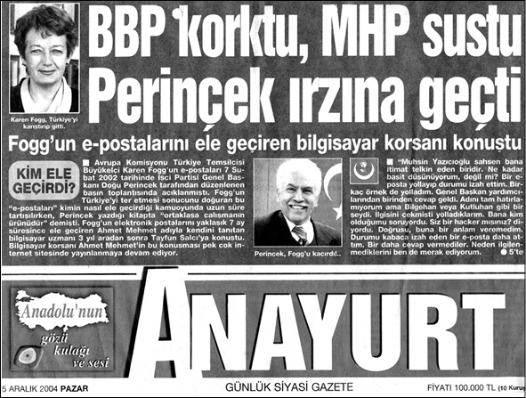

GENİŞLETİLMİŞ 5. BASIMA EKLER - GENİŞLETİLMİŞ 5. BASIMIN SUNUŞU
Karen Fogg’un herzelerini ilk kez, 7 Şubat 2002 günü, İşçi Partisi Genel Başkanı olarak yaptığım basın toplantısıyla kamuoyuna duyurmuş ve AB Temsilcisinin derhal istenmeyen kadın ilan edilmesini talep etmiştim. Elinizdeki kitabın ilk basımı ise Nisan 2002 tarihini taşıyor. O zaman iktidarda, Ecevit hükümeti vardı.
Aradan üç buçuk yıl geçti. Karen-Fogg’un E-Postalları’nı her gün, her hafta, her ay, yeniden doğrulayan yıllar... Karen hanımın yazışmalarında, o zaman AB-Türkiye ilişkilerinin röntgenini görmüştük. Artık röntgen olmaktan çıktı, her şey ortada.
Acı olanı, Karen Fogg’un e-postalarında belirlenen hedeflerin birçoğuna ulaşmış olmalarıdır. Orada öngörüldüğü gibi, İsmail Cem, Kemal Derviş, Hüsamettin Özkan marifetiyle yeni parti kurdurulmuş, hükümet değişikliği gerçekleştirilmiş, KKTC Cumhurbaşkanı Denktaş etkisiz hale getirilmiş ve KKTC Cumhurbaşkanlığı makamında istenen operasyon gerçekleştirilmiştir.
Yeni Parti ve Hükümeti Değiştirme Tertibi
Üç buçuk yıl önce kitabı yayınlarken, Karen Fogg’un varolan hükümeti değiştirmeye yönelik tertibini ayrı bir başlık altında vermemiştik. Madam Fogg, daha 2001 yılındaki yazışmalarında, yeni bir parti kurularak o günkü hükümetin bertaraf edilmesini ve yeni bir hükümet kurulmasını planladığını ortaya koyuyordu. İsmail Cem ve Kemal Derviş’in hükümetten ayrılarak yeni bir parti girişimine koyulmaları ve arkasından yaşanan olaylar biliniyor. Türkiye, 3 Kasım 2002 seçimine ABD-AB işbirliğiyle sahnelenen bir operasyonla götürüldü. Operasyonun oyuncuları arasına. 7 Temuz 2002 günü aniden, hükümet ortaklarına ve kendi partisinin en üst düzey yöneticilerine haber vermeden, “3 Kasım’da seçime gidiyoruz” açıklamasını yapan MHP Genel Başkanı Devlet Bahçeli de katıldı.
ABD-AB ortaklığının hükümet operasyonuyla ilgili epostaları, yaşanan olaylardan sonra, 5. basımda ayrı bir bölümde ele alıyoruz. Başlığı şöyle: Güncel Operasyon: Yeni Parti ve Yeni Hükümet.
E-postalları Nasıl Ele Geçirdik?
Karen Fogg’un epostalarını açıklamamızdan sonra, bize kamuoyu önünde ısrarla yöneltilen soru şuydu: Yazışmaları nasıl ele geçirdiniz, kimden aldınız?
Elbette görevleri gereği aynı soruyu savcılar da sordular. Kitabın ilk basımının önsözünde bu sorunun cevabını vermiştim. Bilgisiyardaki haberleşmemizde kendisine Ahmet Mehmet adını taktığım kahraman, bu kitabın yayınlanmasından epeyi sonra ortaya çıktı ve Karen Fogg’un epostalarını önce kimlere verdiğini açıkladı. Bu açıklamaları internet siteleri yanında, Gerçek Hayat dergisinde ve Anayurt gazetesinin birinci sayfa manşetinde iki gün üst üste yayımlandı.1
1 “Tayfun Salcı” (tayfun@gercekhayat.com) tarafından yapılarak Gerçek Hayat (www.gercekhayat.com) dergisinde yayınlanan söyleşi, yazarın izni dahilinde ceviz.net’te de yer aldı. Ayrıca Anayurt gazetesinin 5 ve 6 Aralık 2004 günlü birinci sayfa manşetlerinde yayımlandı.
E-postalar herkesten önce Başbakan Yardımcısı ve MHP Genel Başkanı Devlet Bahçeli’ye ve BBP Genel Başkanı Muhsin Yazıcıoğlu’na ulaştırılmıştı. Başbakan ve DSP Genel Başkanı Ecevit’e ulaştığı da kamuoyunun bilgisi içindeydi. Ancak Ahmet Mehmet’in beklentileri gerçekleşmemiş, Karen Fogg’un marifetleri Türk milletinden gizlenmişti. Ve gizleyenler de Ahmet Mehmet’in bir zamanlar güvendiği “Milliyetçi” sıfatını taşıyan liderlerdi.
Sayın Ahmet Mehmet, geçmişte benzer tecrübeleri yaşayan diğerleri gibi, en sonunda İşçi Partisi’nin kapısını çaldı. Türkiye’nin bağımsızlığını ve güvenliğini kararlı olarak savunan biricik merkez, görevini yaptı ve konuyu araştırıp doğruluğunu kesinleştirdikten sonra, milletin bilgisine sundu. Türkiye’de büyük bir bilinç patlaması yaşandı. Türkiye’yi AB kapısına bağlayanların ABD ve AB ile suç ortağı oldukları ve bu nedenle onların sırdaşı durumuna düştükleri bir kez daha ortaya çıktı. MHP Genel Başkanı Devlet Bahçeli, Ecevit’le birlikte yine görev adamı olarak sahnedeydi.
Sayın Ahmet Mehmet’in Karen Fogg’un epostalarını ele geçirmesi ve İşçi Partisi’ne ulaştırmasıyla ilgili öyküyü, tek sözcüğüne ve yorumlarına dokunmadan aynen alıyor ve kitabın başındaki “5. Basıma Ekler” bölümüne koyuyoruz.
Yargıdaki Hesaplaşmalar
Karen Fogg ile savaşımızın birinci aşaması, Karen Fogg’un Türkiye’den postalanmasıyla, millî kuvvetlerin kesin zaferiyle noktalandı. İlk aşama diyoruz, çünkü mücadele devam etti. Karen Fogg hanımın kurduğu “şebeke”yle hesaplaşmamız, her düzlemde ve boyutta sürdü.
Bütün bu süreç boyunca, Ecevit iktidarı, başta Ecevit, Devlet Bahçeli, Mesut Yılmaz ve İsmail Cem olmak üzere, Türkiye’nin düşmanlarının yanında yer aldılar, onların emirlerini yerine getirdiler ve bize karşı psikolojik savaştan ceza tehditlerine kadar çeşitli baskı yöntüemlerine başvurdular. Tarihe, Türkiye’yi ABD güdümünde AB kapısına çivileyen büyük tertibin ikinci-üçüncü sınıf rollerdeki oyuncuları olarak geçtiler.
Hesaplaşma boyunca bizim ve karşı tarafın açtığı bütün davaları kazandık. Savcılıkların, Ecevit hükümetinin AB uğruna verdikleri emirlerle hukuku çiğneyerek ve millî devleti savunma görevini terk ederek açtıkları bütün ceza davaları aklanmamızla sonuçlandı.
Tazminat davalarında ise, bizim açtıklarımız kabul edildi; Karen Fogg şebekesinde görev yapanların açtıkları davalar ise reddedildi. Yine biz kazandık.
Bu davalardan ikisi önemliydi. Biri, o zamanki ANAP Genel Başkan Yardımcısı Beyhan Aslan’ın bize psikolojik savaş sloganlarıyla saldırması üzerine açtığımız davada, hem Beyhan Aslan, hem de onun açıklamalarını yayan Anadolu Ajansı tazminata mahkum oldu. Koskoca Yargıtay Hukuk Genel Kurulu, bu konuda verdiği hukukî kararla çok önemli bir içtihat getirdi.
İkincisi ise, Karen Fogg’un yakın silah arkadaşlarından Emekli Koramiral Atilla Kıyat’ın bize karşı açtığı dava idi. Bu davada da hak yerini buldu. Atilla Kıyat’ın hain olmadığı gerekçesiyle yargı önüne getirdiği tazminat talebi Mahkeme tarafından reddedildi.
Bu iki davanın basına yansıyan öykülerini de kitabımızın başında bulacaksınız.
Sayın Oktay Ekşi’nin adı, ilk dört basımda, “Karen Fogg” şebekesindeki gazetecilerle birlikte anılıyordu. Bu yanlışımı düzeltiyorum.
Sağolasın Karen Fogg, Postallarınla Bin Yaşa!
Kitapların başındaki teşekkür adetine biz de uyuyoruz. Genişletilmiş 5. basımın tek ve çok büyük teşekkürü, Karen Fogg cenaplarına. Türkiye’nin uyanışına yaptığı büyük hizmeti tarihe geçmiştir ve unutulmayacaktır.
Sağolasın Karen Fogg, sana minnettarız, postallarınla bin yaşa!
Gayrettepe, 3 Ağustos 2005
1. KAREN FOGG’UN E-POSTALLARINI DOĞU PERİNÇEK’E ULAŞTIRAN AHMET MEHMET’İN AÇIKLAMASI2
2 Bu söyleşi “Tayfun Salcı” (tayfun@gercekhayat.com) tarafından yapılmış olup, Gerçek Hayat (www.gercekhayat.com) dergisinde yayımlanmıştır. Ayrıca 5 Aralık 2004 tarihli Anayurt gazetesinde “BBP Korktu, MHP Sustu, Perinçek Irzına Geçti” başlığıyla yayımlanmıştır.
Karen Fogg’un E-maillerini Ortaya Çıkaran
Hacker ile Konuştuk
Olay hafızalarda hâlâ canlı. İşçi Partisi Genel Başkanı Doğu Perinçek, 7 Şubat 2002 günü düzenlediği basın toplantısında, Madam Fogg’un e-postalarını ele geçirdiklerini açıkladı. Peşpeşe düzenlediği toplantılarda ortaya çıkan tablo şuydu: Madam Fogg, ele geçirilen yedi bin küsur e-postanın muhteviyatından anlaşıldığına göre, temsilcilik görevinin hudutlarını çok aşmış; Türkiye’de fiilen bir beşinci kol hareketi örgütlemeye girişmiş; bu bağlamda gazeteciler, akademisyenler, sivil toplum örgütleri ve kimi bürokratlarla bir “şebeke” teşkil etmiş. Büyük bütçelerle oluşturulan gruplar Brüksel’e bağlanmışlar.
Madam Fogg ülkeyi terk etmeye mecbur kaldı.
E-postaların muhteviyatı bir yana, kim tarafından ve nasıl ele geçirildiği de tartışılan konular arasındaydı. Rivayet muhtelifti. Mit, Jitem, Emniyet, Ordu veya genel olarak “derin devlet” diyenler çoğunluktaydı. Dile getirilen bir diğer ihtimale göre, bu işin arkasında AB içinde Türkiye’nin üyeliğini istemeyenler bulunuyordu. Üçüncü ihtimal ise bunun bir bilgisayar korsanlığı (hacking) olayı olduğuydu. “Perinçek’in Teknik Ekibi” diye dalgasını geçenler de vardı bu ihtimalle.
Karen Fogg’un e-postalarını ele geçiren ve İşçi Partisi‘ne ileten bilgisayar korsanıyla, Ahmet Mehmet’le konuştuk.
Kendinizi Bir ‘Hacker’ Olarak Tanımlar mısınız?
Fiilen öyleyim aslında. Ama, bir “hacker”ın teorik müktesebatına sahip olduğumu söyleyemem. Bilgisayar konusundaki bilgim, sıradan kullanıcının üzerinde...
Karen Fogg’un Bilgisayarına Girip Yazışmalarını Ele Geçirdiniz ve Bunu, “Uzman”lığınız Olmadan Yaptığınızı Söylüyorsunuz? Nasıl Oluyor bu?
İki imkânımı değerlendirdim, diyebilirim. Birincisi “cüret”. Bu çeşit bir iş her şeyden evvel cüret gerektiriyor. İkincisi ise bir iki ecnebi lisandan anlamak. Böylece hem internette bilgisayar güvenliğiyle ilgili gelişmeleri ve dökümanları takip edebiliyordum, hem de nüfuz ettiğim sistemde karşıma çıkan birkaç dilde yazılmış evrakın manasını sökebiliyordum.
İnternette Sörf Yaparak ve Biraz Yabancı Dil Bilerek, İnsan Bir Büyükelçiliğin Bilgisayar Sistemine Sızabiliyor mu?
Haklısınız. Biraz tuhaf. Belki şu sizi tatmin eder. Türkiye’deki Avrupa Temsilciliğinin bilgisayar sistemi çok özel koruma duvarları arkasında değildi. Niye böyleydi derseniz; sadece aptallıktan değil, derim. Asıl neden pervasızlıktı bana göre. Temel bir tutum bu onlar için. Türkiye’de pek pervasızlar. Aptallık bunun bir sonucu.
Çok Kolaydı Yani?
Tam öyle değil. İşin çocuk oyuncağı veya zahmetsiz olduğu anlamına gelmez bu. Bilakis. Ama şu da doğru: Evet, internette sörf yaparak ve biraz yabancı dil, tercihen İngilizce bilerek bu işleri kıvırabilirsiniz. Çünkü internet bir çöplük ama karıştırınca çok iyi şeyler de çıkabiliyor. Bu, modern çöplüklerin genel bir özelliği değil mi zaten?
İnternet, Çöplük...?
Burada bir farklılık var tabii, hak da yemeyelim. İnternet bir paylaşım ortamı. Kuvvetli bir otoriteden de şimdilik azade. Şimdilik, diyorum, çünkü bunun çaresine bakmayı düşünüyorlar muhakkak ki. Benim Karen Fogg hadisesinde kullandığım kodu –hatırladığım kadarıyla– bir Çinli yazmıştı, mesela. Çinli bunu “C” programlama dilinde yazdığı için ben onu kullanmadım da, PC’mde daha kolay çalıştırdığım “Perl” versiyonunu kullandım. Bunu C’den Perl’e çeviren de bir İranlıydı! Görüyorsunuz, bunlar muhalif ülkelerin vatandaşları hep. İnternet böyle bir yer işte.
Evet, Güzel Bir Dayanışma Örneği Gibi Görünüyor. Ama Karen Fogg’a Dönersek... Nasıl Başladı Bu İş?
2001 yazı başıydı. Bir Nadire Mater olayı patlak vermişti, hatırlayacaksınız. Bu hanım AB fonlarından desteklenen bir kitap yayımlamıştı. Mehmedin Kitabı, diye. Türk ordusuna hakaretler yağdıran bir küfür kitabıydı. Ben de kendimi milliyetçi olarak tanımlarım. Ne demek milliyetçi? Bunun ilkin bir hissiyat olduğunu söyleyeyim. Fikri çerçevesi de, bu çerçeveyi doldurduğunuz ayrıntılar da başka başka olabildiği için, tafsilata girmeyeyim.
AB temsilciliğiyle derdim böyle başladı. Bardağı taşıran damla bu oldu yahut. İlkin basit bir protesto mesajı yerleştirmek üzere internet sitelerine yöneldim. Bilenler bilir, sistemi incelerken siteyi kendi makinelerinde çalıştırdıklarını ve bütün ağlarının da internete açık olduğunu gördüm. Gerisi çorap söküğü gibi geldi.
Bilgisayar Sistemine Girdiniz. Sonra Ne Oldu? Ne Buldunuz?
Doğrusu bu konudaki ayrıntıları hatırlamam zor. İki sene geçti üzerinden. Şu kadarını söyleyeyim: Açık rastladığım her bilgisayar kontrolüm altındaydı. Karen Fogg’unki başta. Basitleştirerek anlatayım: Ortak kullanılan bir makine vardı. Herkese ait bir klasör bulunuyordu. İlk girdiğim de bu müşterek makine olmuştu. Burada yedek dosyalarını muhafaza ediyorlardı. Çok işe yaradı gerçekten. Bu makineyi ele geçirince, diğer bütün makinelerin de kapısı açıldı. Sistemdeki en yetkili makine buydu çünkü. Bu makineye “sistem” (bilgisayardaki en yetkili merci denebilir buna) ayrıcalıklarıyla girince bütün diğer makinelerin hâkimi oldum. Artık istediğim her türlü yazılımı yüklemeye, belli bir takvime göre etkinleştirmeye imkânım vardı.

Karen Fogg’unki En Önemlisiydi Herhalde?
Evet. Onu günü gününe takip edebiliyordum. Pek çok şey buldum: Raporlar, bilgi notları, iç yazışmalar. En ilginci de aslında bilgi işlem sorumlusunun makinesinden çıktı. Bütün sistemin mimarisi ve kullanıcı adı ile şifre listeleri! Çok gülmüştüm... Bilgisayarlarda muhafaza edilen her türlü evraka ulaştım. Fogg’un duygu yüklü bazı mektupları dahil!
Ve Tabii E-postalar?
Aslında e-postalara hemen nüfuz edemedim. Çok büyük dosya hacimleri söz konusuydu. Yüzlerce megabaytlık dosyalar! Dbx uzantılı dosyalar. Bunları indirmem gerekiyordu ama benim gibi telefon hattıyla internete bağlanan birisi için imkânsız gibi bir şeydi bu! PC’im de fi tarihinden kalmış bir aletti ya, neyse.
Yani Öyle Teknoloji Harikaları Kullanarak Yapmadınız Bunları?
Yok canım, nerde..? Komiktir, işin en civcivli zamanında monitörüm bozuluverdi. Yeni bir monitör alacak para bile yok. Haftalarca internet kafelerden yürüttüm işi. Neyse. Bunlar acıklı tarafı işin... Bu büyük dosyaları indirmek için başka yollar bulmak gerekti. Detayına girmeden söyleyeyim. Geniş bant internet bağlantısı bularak indirdim bu dosyaları. Tersi olamazdı çünkü. Daha ufak dosyaları indirmek bile bütün bir gece sürebiliyordu... Elçilik e-posta sunucusunu da kendi ağında tutuyordu. Dolayısıyla, bütün çalışanların e-postalarını arşivlemem dahi olanaklıydı. Tek tek uğraşmaya gerek kalmadan yani. Bir kısmını aldım da ama tamamına imkân bulamadım.
Bütün İş Ne Kadar Sürdü? Sanki Haftalarca Uğraşmışsınız Gibi Anlatıyorsunuz?
Üstüne bastınız. Tam olarak ben bile hatırlamıyorum ama 6-7 ay sürdü bu. İlginç aylardı ama. O arada Fazilet Partisi kapatıldı, İlerleme Raporu yayımlandı, 11 Eylül geldi geçti. Bütün bunların oradaki akislerini takip edebiliyordum. 11 Eylül en ilginciydi...
Nasıl Yani?
İlk şoku atlattıktan sonra Karen Fogg da 11 Eylül şakalarına kaptırmıştı kendisini. Daha ikinci veya üçüncü gündü, o bildik e-posta esprileri gelmeye başladı ona da. Dün gibi aklımda olan bir tane var. Hani New York’un ortasına Aya Sofya’yı yerleştiren bir resim vardı... Avrupalılar eğleniyorlardı doğrusu.
E-postaları ve Diğer Evrakları Ele Geçirdiniz. Bir Yandan da Okuyordunuz...
Yo, doğruyu söylemek gerekirse her şeyi okuma imkânım yoktu. Zamanım yoktu bir defa. Başka meşgalelerim de vardı haliyle. Bir de zaten bütün bunları elde etmek için harcadığım zaman çok fazlaydı. Elemek zorundaydım okurken. Hızla ve kabasından okuyordum. Bazı şeylerin vahametini görmeye yetecek bir dikkatle aynı zamanda...
Mesela?
Mesela bir Volkan Vural olayı vardı. Bu, basına tam yansımayan bir husustu... Neden böyle kaldı, bilemiyorum... Belki Aydınlık yayımlamıştır bunla ilgili bir şeyler. Ama birkaç sayısını alabilmiştim sadece. Neyse, olay şu. Ulusal Program denen vaat listesi hazırlanırken Vural ile Fogg sıkı diyalog halindeler. Malum, Vural AB’ye uyum işlerine bakan tepe bürokratımızdı o zaman. Fogg, kimi siyasi vaatlerin programda açık bir biçimde yer bulmamasından şikâyet ediyor Vural’a. Vural’ın verdiği yanıt dehşete düşürdü beni: Merak etmeyin, diyordu, ben onları satır aralarına yerleştirdim. Bizim siyasetçiler (hükümeti kastediyor tabii ki) böyle belgeleri dikkatli okumazlar, bunları görmeyip imzayı atacaklardır! Bir diğeri ise 2002 ilerleme raporu meselesiydi. Volkan Vural, rapor ilan edilmeden evvel almak ve basına sunulmadan önce biraz makyajlamak istiyordu. Karen Fogg’u memnun eden bir talep tabii. Mealen, aklımda kaldığı kadarıyla aktarıyorum tabii ama dehşet verici değil mi? Devletin en üst düzeyinde bulunan bir diplomatımız, bir ecnebi meslektaşına neler söylüyor! Kim kimin için çalışıyor belli değil. Takip etmedim ama sanıyorum Volkan Vural’ın yeri artık o kadar sağlam değil. Nerde? Siz biliyor musunuz?
Bu Niye Gündeme Gelmedi Dersiniz?
Kim bilir? Belki de ben okuduklarımı yanlış tefsir ediyorumdur. Sonuçta diplomat filan değilim.
Başka?
Bir başka örnek daha verebilirim... AB elemanları DPT’yle görüşmeler yürütüyorlar. Proje bazında fon verecekler. Malum, DPT o dönemde MHP’ye bağlı. Elçiliğin iç yazışmasında şunlar söyleniyordu: Destek verdiğimiz projelerin Güneydoğu‘da ve Van gibi Doğu Anadolu şehirlerinde yoğunlaşması MHP’yi kuşkulandırıyor, orta Anadolu’da birkaç projeyi destekler görünmek lehimize olur!
Peki Bunlar İşçi Partisi’nin, Doğu Perinçek’in Eline Nasıl Geçti?
Ben verdim. Ama ilk tercihim değildi aslında. Dedim ya, kendimi milliyetçi olarak tanımlarım. Her vatansever gibi memleketin içinden geçtiği durumdan bunalmış durumdaydım. Hâlâ da öyle ya, neyse. Perinçek ilk tercihim değildi ama ona verdiğime pişman da değilim. Sağ olsun, gayet güzel kullandı bunları.
İlk Tercih Kimdi O Zaman?
Polise, millî istihbarata, hatta Genelkurmay’a vermek geçti içimden. Ama bunu nasıl yapabileceğimi bilmiyordum. Nasıl karşılanacaktı? Kaldı ki bunlar içinde en çok güvendiğim de askerdi. Polis de, MİT de siyasetin daha fazla kontrolü gibi gelmiştir bana. Bu işleri bildiğimden değil tabii, sadece hissiyat bu. Siyaset düşmanı da değilimdir, yanlış anlaşılmasın ama halimiz de ortada değil mi? Hele o günlerde bu kurum da Mesut Yılmaz’ın ANAP’ına bağlı durumda. Malum, Mesut Yılmaz Avrupa Birliği davasının önde giden bir heveskârı, neferi konumunda. Adının karışmadığı yolsuzluk, uğursuzluk da kalmamış biri. Kişisel olarak da hiç hazzetmediğim bir adam sonra. ANAP zaten başımıza bütün bu küresel çorapları ören odak olmuş. Askere ise nasıl ulaşabilirim, hiçbir fikrim yok. Basın yayın organlarına verilebilir ama onun da riski büyük... Ama “tarihî” bir fırsat var elimde. Kaçırmamam lazım. Kim kullanabilir bütün bu belgeleri diye düşünmeye başladım...
Ve?
Ve Büyük Birlik Partisi geldi aklıma. Muhsin Yazıcıoğlu şahsen bana itimat telkin eden biridir. Ne kadar basit düşünüyorum, değil mi? Bir e-posta yollayıp durumu izah ettim. Birkaç örnek de yolladım. Genel Başkan yardımcılarından birinden cevap geldi. Adını tam hatırlamıyorum ama Bilgehan veya Kutluhan gibi bir şeydi. İlgisini çekmişti yolladıklarım. Bana kim olduğumu soruyordu. Siz bir hacker mısınız, diyordu. Doğrusu, buna bir anlam veremedim. Durumu kabaca izah eden bir e-posta daha attım. Bu defa daha büyük bir dosyayı nasıl alacaklarını da tarif ettim.
Nasıl Yani, Onlar mı Alacak Dosyayı?
Evet. O günlerde dosyaları hazırlayıp AB temsilciliğinin internet sitesine yerleştiriyordum. Böylece dikkat çekmeden alınabiliyorlardı. Ayrıca, kapalı olma ihtimali yok denecek kadar az olan makine oydu. BBP’den bir daha haber alamadım. Doğrusu hayal kırıklığına uğramıştım.
Neden İlgilenmediler Dersiniz?
Kim bilir. Belki onu da siz sorarsınız kendilerine. Ben de merak ediyorum çünkü...
Sonra?
Sonra MHP’yi denedim. MHP içinde genel başkana kadar ulaşabilecek bir bağlantıyla önce basılı bazı evrakı ilettim. Ardından bir CD halinde e-postalar gitti. Hiçbir cevap alamadım oradan da...
Bu Arada Takibi Sürdürüyordunuz Ama?
Günü gününe takip ediyordum Karen Fogg’u. Malzeme biriktikçe birikiyordu elimde. E-postaların sayısı 7-8 bine ulaşmıştı.
Hiç Kuşkulanmadılar mı Dersiniz?
Çok pervasızdılar bence. Ama komik şeyler de olmuyor değildi hani. Dosyaların hacmi gitgide büyüdüğünden, indirmek zor oluyordu. Fogg’un makinesindeki e-postaları silmek zorunda kaldım. Riskliydi tabii. Uyanabilirlerdi. Kadın şoke oldu. Yazışmalardan gördüğüm kadarıyla bilgi işlemci de şaşırmıştı. Microsoft Türkiye’yi aramışlar. Onlar da, olur böyle aksilikler dert etmeyin mealinde bir şeyler demiş!
Peki Perinçek’e Nasıl Ulaştınız?
Perinçek son bir teşebbüs olacaktı. Ümidim iyice kırılmıştı doğrusu. Elimdekilerin kıymetsizliğine hükmetmek üzereydim. Doğu Bey hakkında benim de birçok kuşkum vardı doğrusu. Benim de diyorum, çünkü bilirsiniz Perinçek’in seveni azdır... Haksız da değiller belki. Çok tutarlı bir çizgisi yok sonuçta. Ama insanların değişebileceğine inanmak lazım. Kaldı ki, bütünüyle kuşkusuz kim var ki! Hem sonra, güvendiklerimden bir cevap bile alamamışım. Perinçek’i de takip ediyorum bir müddettir. Bir de Hasan Yalçın var tabii, rahmetli. 11 Eylül sonrası performansları harika. Samimi veya değil, onu kimse bilemez. Neyse, Perinçek’e birkaç örnek yolladım. Hemen cevap geldi. Çok önemli şeyler var elinizde, bunların devamı var mı, diye bizzat yazdı. Tamam dedim, işte aradığım adam!
Sonra?
Sonra birkaç örnek daha yolladım e-postayla. Devamını vermeyi de vaat ettim. Bir CD’ye kayıt yapmanın yollarını arıyorum. Bu da kolay bir iş değil çünkü. Bahçeli’ye yollarken göbeğim çatlamış zaten. Ben bunları düşünüp dururken, 7 Şubat günü ne göreyim: Doğu Perinçek basın toplantısı yapıyor! Doğrusu bu defa biraz korktum.
Niye Korktunuz?
Çünkü Elçiliğin makinelerinde henüz temizlik yapmamışım. İzlerimi bütünüyle yok etmem lazım. Bu bir. İkincisi daha da önemli belki. Elçilik bir süredir hazırlık yapıyor. Brüksel’e doğrudan bağlanacaklar. Benim de bu konuda umutlarım ve korkularım var. Korkum, sistemi baştan aşağı elden geçirip durumu fark etmeleri. Umudumsa, sisteme dokunmadan Brüksel’e bağlanmaları. Çünkü bu Brüksel’e de sızma imkânı demek! Basın toplantısı her şeyi bitirdi tabii. Hızlı bir biçimde ne kadar olabilirse o kadar temizlik yapmakla kaldım.
Bu Arada Fırsat Kaçtı Yani?
Bir bakıma. Ama bundan emin olmak mümkün değildir.
E-postaların Devamını Nasıl Verdiniz?
Yazışmaları e-postayla yapıyordum. Ahmet Mehmet takma adıyla yürüdü bunlar. Biliyorsunuz, Doğu Bey “Karen Fogg’un E-Postalları” kitabının önsözünde bana bu adla teşekkür eder. BBP’ye de benzer bir isimle ama başka bir adresten yazmıştım. E-postaların devamını İP’nin Kadıköy Şubesi’ne, o günlerin yöneticisi Hasan Karanlık’a [Hüseyin Karanlık olacak -DP] verdim. Onu da tanımam. İnternetten yaptığım bir tercihti bu. Adresi aldım, yetkilinin ismini öğrendim filan... Jet hızıyla verdim çıktım. Durum komikti biraz.
Sonra?
Sonrasında ben de herkes gibi seyirciydim. Tarihe dokunmuştum. Şimdi merakla bekliyordum, kımıldayacak mı bakalım diye.
Necip Hablemitoğlu‘na da Bir Belge Yolladım
Tam zamanını hatırlamam şimdi mümkün değil, elimdeki evraka bakmam lazım ama, bir tartışma vardı gündemde. Alman Vakıfları meselesi. Rahmetli Necip Hablemitoğlu birkaç hafta üst üste Ceviz Kabuğu’na çıkmış ve ifşaatta bulunmuştu. Fogg’un yazışmaları içinde Necip Bey’in işine yarayacak bir mektuplaşma da vardı. Kendisine yolladım.3 Çok heyecanlandı. İçten bir teşekkürle mukabele etti. Onunla da böylece fazla derinleşemeyecek olan bir münasebet başlamış oldu. Rahmetliden dört beş e-posta daha alacaktım ancak. Son kitabı “Köstebeği” gönderdikleri arasında ben de vardım. E-postayla yollamıştı.
3 Ahmet Mehmet’in yolladığı e-postayı o zaman, Sayın Necip Hablemitoğlu, bana da aktarmıştı (Doğu Perinçek’in notu).
Hablemitoğlu’na gönderdiğim belge Metin Münir ile Karen Fogg arasındaki bir yazışmaydı. Metin Münir Hablemitoğlu’nun kitabını okumuş, baştan aşağı saçma bulmuş tabii. Fogg’a diyor ki, gördün mü kitabı, fikrin ne? Hablemitoğlu, bir Avrupa Birliği parlamentosu belgesine dayandırıyor her şeyi ama böyle bir belgenin mevcut olduğuna ihtimal verilemez herhalde, değil mi? Fogg’un cevabı ilginçti, Necip Bey’in ilgisini çekeceğini düşündüğüm de oydu zaten. Fogg diyordu ki, adam haklı, dediği gibi bir belge var. Avrupa Parlamentosu’nun bu kararını içeren belgeyi bulunca sana da yollayayım. Ayrıca, diyor, Alman Yeşillerinin Türkiyedeki bu faaliyetleriyle ilgili söylentiler benim de kulağıma geldi. Altın meselesini kullanıp burada zemin kazanmaya çalışıyorlar. Fogg, birkaç gün sonra o belgeyi de yolladı gerçekten. Ben de hepsini Hablemitoğlu’na ilettim tabii.”
Tarihe Dokundum
Tarihe dokunmak diyorum, bunun benim için bir anlamı var. İngiliz filozofu Bertrand Russell’ı bilirsiniz belki... Kendisi İngiliz hükümetlerinde belirleyici olmuş ailelerden birine mensup bir aristokrattı. Ya babası yahut dedesi başbakanlık da yapmıştı galiba. O anlatır. Tarihi yapan insanların arasında büyüdüğü için, hep onu değiştirebileceği hissiyle yaşamış. Tarihin akışının değiştirilemezliği fikrine yabancı kalmış. Tarih dışımda değildi, diyor, onu değiştirmek günlük şeyler arasında gibiydi. Bizim ne kadar uzağımızda bir hissiyat, değil mi? Biz, sıradan insanların. Bunu kabullenmek zor geliyordu bana... Neyse, uzatmayayım, işte tarihi değiştirme değilse bile ona dokunma fırsatı elimdeydi. Nedir tarih? Bugün için söylersek, gazete manşetleri değil mi? Hiç olmazsa bir yönüyle, değil mi? İşte, adım sanım yoktu ama yaptığım bir şey gazete manşetlerine taşınmıştı... Yaptığım şey etrafında saflar tutulmuştu... Türkiye’nin istikametiyle ilgili bir tartışmanın –bir müddet için de olsa– odağı olmuştu... Ben de seyrediyordum...
Devlet Kim?
Derin devlet mi? Deriniyle yüzeyiyle devlet biziz, başkası değil ki! Batı liberalliğinin pompaladığı sivil-devlet, vatandaş-devlet çatışmasına bizim karnımız tok olmalıdır. Devlet, örgütlenmiş millettir. Öyle olmak zorundadır. Öyle değilse eğer, işgal altındayız demektir. Millet, devlet üzerindeki sahiplik iddiasından vazgeçemez, vazgeçmemelidir. Araya mesafe sokulmasına izin vermemelidir. Devlet adamıyla aramdaki fark bir rol dağılımından ibaret olmalıdır. Aynı gaye için çalışmak zorundayız. Demokratik göreciliğin/izafiyetçiliğin içerdiği nihilizm, değerlerin değersizleştirilmesi yani, sadece ve sadece dünya sisteminin efendilerine yarayan bir çözülme yaratıyor. Bunu ben AB temsilciliğinin faaliyetlerinde somut biçimde gördüğüm kanısındayım. Karen Fogg sivil toplum mühendisliğinde uzmanlaşmış. Genel bir strateji bu Batı için. Sivil toplum adı altında örgütlenir görünürken, dağılıyorsunuz aslında. Bu bir çözme harekâtı. Millî bütünlüğü sarsıyorlar. Sonra da karşınıza geçip, siz zaten suni bir bütündünüz diyorlar, diyecekler de.
2. “EMEKLİ KORAMİRAL ATİLLA KIYAT VATAN HAİNİ“4
4 Milliyet gazetesi, 9 Haziran 2005.
Ünlü spekülatör ve Açık Toplum Enstitüsü kurucusu George Soros’un, “ABD’nin Dünyada Nasıl Daha İyi Bir Rolü Olabilir?” konulu konuşmasını dinlemek üzere, Çırağan Sarayı’ndaydım.
Kapının önünde, Doğu Perinçek’in genel başkanı olduğu “İşçi Partisi” üyeleri ellerinde pankartlarla gösteri yapıyorlar. Çok kalabalık bir grup değil. Soros’u izlemeye gelenlerin sayısı da beklenenin altında. Salona 300 kişi davet edilmesine karşılık, gelenlerin sayısı 80’de kalmış.
Peki bu ilgisizliğin nedeni, Soros’un Batı Avrupa’dan başlayıp, Orta Asya’ya yayılan etkisinin bizi ilgilendirmemesi olabilir mi?
Soros üzerinden yapılan “yükselen milliyetçilik” tartışmaları ülkemizde güncel değil mi?
İşte bir örnek:
AKP Dışişleri Komisyonu Başkanı Mehmet Dülger, Soros’u Türkiye’de STK çalışmalarına katılması yönünde ikna eden İshak Alaton ile birlikte sohbetimizde, emekli Koramiral Atilla Kıyat’ın “Ben vatan hainiyim” sözleri, son günlerde popülaritesi artan Nâzım Hikmet dizesi değildi.
Atilla Kıyat, 2002 yılında “yayın yoluyla kişilik haklarına ağır saldırılarda bulunduğu” iddiası ile Perinçek aleyhine 50 milyar lira manevi tazminat davası açmıştı.
Parti Kuracağım!
Kıyat davayı kaybetmiş, temyiz için Yargıtay’a gitmiş. Kıyat, mahkemenin, “Siyasi parti genel başkanı görüşlerini açıklar” gerekçesi ile tazminat talebini reddettiğini söylüyor. Bu durumda Kıyat için bir tek çıkış yolu kalıyor, o da parti kurup, “dilediğini söyleme” özgürlüğü elde etmek. Niyetli de…
Dava konusu şöyle gelişmişti:
Bir televizyon kanalı, 13 Şubat 2002 tarihli haber bülteninde, AB Türkiye Temsilcisi Karen Fogg’un elektronik posta yoluyla yaptığı haberleşmeye ait olduğu iddia edilen birtakım belgeler yayımlamıştı. Bu belgelerin kaynağı ise Perinçek’in dergisi Aydınlık’tı. Bunun üzerine Perinçek kendisiyle yapılan röportajda, “AB’nin amacı Türkiye’yi bölüp parçalamak, Türk milletinin egemenlik haklarını ortadan kaldırmak” türünden açıklamalar yaptı. Bu söyleşide, Kıyat’ın adını, “Kıbrıs’ın Yunanistan’a verilmesi yönünde açıklamalarda bulunuyor” iddiası ile “vatan haini şebekenin bir üyesi” olarak geçirmişti.
3. ANAP GENEL BAŞKAN YARDIMCISI BEYHAN ASLAN MAHKÛM OLDU5
5 Milliyet, 6 Temmuz 2005.
Yargıtay’da, basın ve ifade özgürlüğü açısından kritik bir karar alındı. Hukuk Genel Kurulu, hiçbir yorum ve eklemede bulunmadan duyurduğu bir basın toplantısı nedeniyle AA’yı tazminata mahkûm etti.
“Söylenenle nakledilen arasındaki dengeyi koruyan haberlerin hukuka aykırılık oluşturmadığını” içeren kararlarında basın özgürlüğünün kapsamını genişleten tutumuyla bilinen Yargıtay Hukuk Genel Kurulu (YHGK), bu kez aksi yönde bir karara imza attı. Genel Kurul, bir basın toplantısını, “ekleme ve yorum yapmadan” yayına koyan Anadolu Ajansı’nın (AA) tazminata mahkûm edilmesine karar verdi.
Davaya konu olayda, dönemin Anavatan Partisi Grup Başkan Vekili Beyhan Aslan, eski AB Türkiye Temsilcisi Karen Fogg’un elektronik postalarını kamuoyuna açıklayan İP Genel Başkanı Doğu Perinçek’i 20 Şubat 2002’de Denizli’de düzenlediği basın toplantısında eleştirdi. Perinçek, toplantıdan sonra Aslan ile haberi yayına koyan AA’nın aleyhine, “kişilik haklarına ağır hakarette” bulunduğu gerekçesiyle 10’ar milyar liralık tazminat davası açtı. Mahkeme, Aslan’ın sözlerinin hakaret içermediğini, AA’nın da sözleri aynen yayımladığını belirterek istemi reddetti.
Mahkeme Direndi
Yargıtay 4. Hukuk Dairesi ise Aslan ve AA’nın tazminat ödemesi gerektiğini belirterek, kararı oybirliğiyle bozdu. Aynı daire, AA’nın “karar düzeltme” istemini de 2’ye karşı 3 oyla reddetti. Muhalif üyeler Ülkü Aydın ve Mustafa Kıcalıoğlu, AA’nın Aslan’ın sözlerini ekleme yapmadan haberleştirdiğini, haberin yayımlanmasında kamu yararı olduğunu kaydettiler.
Bozma üzerine dosyaya bakan yerel mahkeme, Aslan’ı faiziyle birlikte 2 milyar lira tazminata mahkûm ederken, AA yönünden ilk kararında direndi. Kararda, “Doğru bir habere ekleme yapılmamışsa hukuka uygundur” denildi.
Dosya bu kez YHGK’ye geldi. Genel Kurul, 4. Hukuk Dairesinin görüşü doğrultusunda AA’nın tazminat ödemesi gerektiğini kararlaştırdı. Oyçokluğuyla alınan kararda, “ekleme ve yorum yapılmadan yayımlanan basın toplantısına ilişkin haberin hukuki sayılması gerektiği” görüşüne katılınmadı. Karar, “ekleme yapılmasa da basın organının yayımladığı açıklamada kişisel haklara saldırı niteliğinde olup olmadığını araştırma yükümlülüğü bulunduğu” görüşüne dayandırıldı.
4. KAREN FOGG OLAYIYLA İLGİLİ AÇILAN DAVALARIN SONUÇLARI
Ceza Davaları
Şikâyetçi : AB Türkiye Temsilciliği/KH
Sanıklar : Doğu Perinçek
Mahkeme : Beyoğlu 13. Asliye Ceza Mahkemesi
Dosya No; Karar No : E.2002/1481; K. 2003/563
Suç Tarihi-İstem : TCK 525/a (07.02.2002)
Karar Tarihi-Sonuç : Beraat (02.10.2003)
Şikâyetçi : AB Avrupa Komisyonu Türkiye
Temsilciliği/KH
Sanıklar : 1. Doğu Perinçek, 2. Emcet Olcaytu
Mahkeme : İstanbul 2. Asliye Ceza Mahkemesi
Dosya No; Karar No : E.2002/344; K. 2003/94
Suç Tarihi-İstem : TCK 525/a (10.02.2002-17.02.2002-
24.02.2002)
Karar Tarihi-Sonuç : Beraat (19.03.2003)
Şikâyetçi : KH
Sanıklar : 1. Doğu Perinçek, 2. Hasan Yalçın
Mahkeme : Ankara 2. Asliye Ceza Mahkemesi
Dosya No; Karar No : E.2002/372; K. 2002/812
Suç Tarihi-İstem : TCK 525/a (12.02.2002)
Karar Tarihi-Sonuç : Beraat (19.11.2002)
Şikâyetçi : KH
Sanıklar : Emcet Olcaytu
Mahkeme : İstanbul DGM Savcılığı
Dosya No; Karar No : 2002/414; Hazırlık
Suç Tarihi-İstem : Devletin Sırlarını İfşa Etmek
Karar Tarihi-Sonuç : Takipsizlik Kararı Verildi
Tazminat Davaları
Davacı : Doğu Perinçek
Davalı : 1. Bilgin Yay. Aş., 2. Yusuf Yazıcıoğlu,
3. Metin Münir (Sabah Gazetesi)
Mahkeme : İstanbul 8. Asliye Hukuk Mahkemesi
Dosya No : E.2002/1481
Sonuç : 3 milyar tazminat faizi ile alındı
Davacı : Doğu Perinçek
Davalı : 1. Hürriyet Gazetesi Matb. Aş.,
2. Hasan Kılıç, 3. Cüneyt Ülsever
(Hürriyet Gazetesi)
Mahkeme : İstanbul 6. Asliye Hukuk Mahkemesi
Dosya No : E.2002/558
Sonuç : 4 milyar tazminat faizi ile alındı
Davacı : İşçi Partisi Genel Başkanlığı
Davalı : 1. Aydın Doğan, 2. Hasan Çakalkurt
(Radikal Gazetesi)
Mahkeme : İstanbul 3. Asliye Hukuk Mahkemesi
Dosya No : E.2002/495
Sonuç : 1 milyar tazminat faizi ile alındı
Davacı : 1. Doğu Perinçek, 2. Aydınlık
Davalı : 1. Hürriyet Gazetesi Matb. Aş., 2. Hasan
Kılıç, 3. Sefa Kaplan (Hürriyet Gazetesi)
Mahkeme : İstanbul 4. Asliye Hukuk Mahkemesi
Dosya No : E.2002/508
Sonuç : 4 milyar tazminat faizi ile alındı
Davacı : Atilla Kıyat
Davalı : Doğu Perinçek
Mahkeme : İstanbul 9. Asliye Hukuk Mahkemesi
Dosya No : E.2002/298
Sonuç : Dava reddedildi
Davacı : Ferai Tınç
Davalı : 1. Doğu Perinçek, 2. Analiz Ltd. Şti.,
3. İsmet Öğütücü (Postallar Kitabı)
Mahkeme : İstanbul 3. Asliye Hukuk Mahkemesi
Dosya No : E.2003/83
Sonuç : Dava reddedildi
Davacı : Mehmet Ali Birand
Davalı : 1. Emcet Olcaytu, 2. Aydınlık Dergisi,
3. Aytunç Erkin
Mahkeme : İstanbul 10. Asliye Hukuk Mahkemesi
Dosya No : E.2003/93
Sonuç : Dava reddedildi
Davacı : Mehmet Ali Birand
Davalı : 1. Doğu Perinçek, 2. Analiz Ltd. Şti.,
3. İsmet Öğütücü (Postallar Kitabı)
Mahkeme : İstanbul 10. Asliye Hukuk Mahkemesi
Dosya No : E.2003/94
Sonuç : Dava reddedildi
Davacı : Doğu Perinçek
Davalı : 1. Bilgin Yay. Aş., 2. Yusuf Yazıcıoğlu
(Takvim Gazetesi)
Mahkeme : Ankara 1. Asliye Hukuk Mahkemesi
Dosya No : E.2002/201
Sonuç : 2 milyar tazminat faizi ile alındı
Davacı : Doğu Perinçek
Davalı : 1. Beyhan Aslan, 2. Anadolu Ajansı
Mahkeme : Ankara 2. Asliye Hukuk Mahkemesi
Dosya No : E.2002/361
Sonuç : Yargıtay Hukuk Genel Kurul Kararı ile
Beyhan Aslan’dan 2 milyar tazminat faizi
ile alındı
KAREN FOGG’UN E-POSTALL ARI GİRİŞ - AB-TÜRKİYE İLİŞKİLERİNİN RÖNTGENİ
Karen Fogg’un e-posta yazışmaları, AB-Türkiye ilişkilerinin röntgenini veriyor. Bu yazışmaları incelediğimiz zaman, AB’nin Türkiye’ye ilişkin stratejisini, hedefini, örgütlenmesini, çalışma tarzını bütün açıklığıyla görebiliyoruz. Sistemli olarak sıralayacak olursak:
1. AB’nin Stratejik Hedefi:
“Türk Devletinin ve Tarihinin Hakkından Gelmek”
“Türk tarihinin hakkından gelinmesi”, “Türk devletinin hakkından gelinmesi” stratejik hedef olarak benimsenmektedir. “Özgürlükler” ise, bu yıkıcı amacın örtüsü olarak kullanılmaktadır.
2. Kültürel Görev:
Türkiye Gençliğinin Millî Kimliğini Tahrip Etmek
“Ulusal devletin hakkından gelme” hedefine ulaşmak için, gençliği millî kimliğinden koparmak ve Avrupalılaştırmak görevi açıkça belirlenmiş ve bu yönde İngilizce AEGEE adlı öğrenci örgütü kurularak faaliyete geçilmiştir.
3. Siyasal Görevler:
Kıbrıs, Ege, Diyarbakır Merkezli Beylik vb.
Türk Ordusu’nun Kıbrıs’tan çıkartılması, KKTC’nin tasfiyesi, PKK’nin yasallaştırılması, Diyarbakır merkezli ayrı bir yönetim oluşturularak bölgenin Ankara’dan bağımsızlaştırılması, Avrupa’nın siyasal düzlemdeki başlıca amaçları ve faaliyet konularıdır. Buna bağlı olarak, irticaya ve bölücülüğe hareket yeteneği ve etki sağlayacak özgürlük kampanyaları yürütülmekte ve güdülmektedir.
4. Güncel Siyasal Operasyon: Yeni Parti Kurulması ve
Hükümet Değişikliği
Otoritesini yitiren ve AB’nin istediği düzenlemeleri ve uygulamaları gerçekleştirme yeteneğini yitiren Ecevit hükümetinin içerden bölünerek yeni bir partinin oluşturulması ve AB’yle çok daha uyumlu hareket edecek bir hükümet kurulması tartışılmakta ve çözümler üretilerek uygulanmaktadır.
5. Kullanılacak Kuvvetler: “Uyuyan Güzeller”
“Uyuyan güzeller” diye kodlanan güçler şunlardır: İrtica, bölücülük, “Anadolu’daki taşra milliyetçileri” (Batıcı Kürt milliyetçileri), “Kıbrıs’taki genç aktivistler” (Kıbrıs’taki Avrupa acenteleri), Mason “Atatürkçülüğü”, para karşılığı AB’yle işbirliği yapan bazı sendika yöneticileri, sivil toplum kuruluşları ve diğer neoliberaller.
6. Tecrit Edilecek Kuvvetler: “Uyuyan Köpekler”
Avrupa Birliği Temsilciliği, Türkiye’nin millî kuvvetlerini “Uyuyan Köpekler” diye isimlendiriyor. Tecrit edilmesi ve uyandırılmaması gereken bu kuvvetler şöyle sıralanabilir: Türk Ordusu, Mr. D (Denktaş) ve diğer millî kuvvetler. Bu kuvvetlerin medyadaki acente gazeteciler aracılığıyla psikolojik savaşla yıpratılması öngörülmektedir.
7. Örgütlenme: Karen Fogg Şebekesi
AB Merkezi’nde Günter Verheugen, Adriaan van der Meer, Alessandro Missir di Lusignano, Helen Wallace’ın oluşturduğu ekibe bağlı İstasyon Şefi Karen Fogg’un kendi deyişiyle “Kıbrıs’a kadar uzanan” bir şebeke oluşturulmuştur. E-postalara göre, hükümet içindeki başlıca işbirlikçiler: Mesut Yılmaz, İsmail Cem. Bakanlıklarda: Volkan Vural, Daryal Batıbay, Selim Kuneralp, Şerif Ünal vb. Büyük sermaye içinde: TÜSİAD, İshak Alaton, Can Paker vb. Basın ve televizyonlarda: Basında Fogg ile ilişkili gazeteciler elimizdeki e-postalara göre şunlar: Mehmet Ali Birand, Şahin Alpay, Cengiz Çandar, Metin Münir, Mehmet Altan, Murat Yetkin, Cüneyt Ülsever, Ahmet Sever, Oral Çalışlar, Lale Sarıibrahimoğlu, Ferai Tınç, Samy Cohen, Semih İdiz, Zeynep Göğüş, Mithat Melen, Mim Kemal, Emine U [Uşaklıgil], Özgen Acar vb. Sendikalarda: DİSK Genel Başkanı Süleyman Çelebi, Hak-İş Genel Başkanı Salim Uslu, KESK Genel Başkanı Sami Evren, Yücel Top vb. Belediyelerde, üniversitelerde, NGO’larda oluşturulan ayaklar ve Çevik Bir Cuntası’na bağlı Atilla Kıyat gibi birkaç emekli amiral ve general.
8. Eylem Biçimi: Uslu Muhalefetten Toplumsal Patlamalara
Karen Fogg’un deyişiyle “TBMM’deki uslu partilerin muhalefetinden toplumsal patlamaya kadar eylemler” planlanmaktadır. Uygulanacak senaryolar “Pembe Dizi” veya “Pembe Dizi’nin William’daki Versiyonu” seçenekleri gibi şifrelerle anılmaktadır.
9. Örgütlenme ve Çalışma Biçimi: Gizli, Sinsi, Şifreli, Kodlu
Bakanlıklardan “gizli, sinsi hareketle bilgi toplama” faaliyetinde bulunulduğu açıkça belirtiliyor. Haberleşme şifrelerle ve isimler kodlanarak yürütülüyor. Bilgi ve belgeler, gerektiğinde gizli yollardan yollanıyor. AB Temsilciliği ile işbirlikçileri arasında düzenli ve düzensiz rapor alışverişi var.
AB Temsilciliği’nin sekiz başlıkta özetlediğimiz faaliyetini şimdi kendi e-posta yazışmalarına dayanarak tek tek inceleyeceğiz.
1. STRATEJİK HEDEF: “DEVLETİN HAKKINDAN GELMEK”
“Derin Devletin Hakkından Gelmek”
AB’nin Karen Fogg’un yazışmalarında sergilenen stratejik amacı, Türk Devleti’nin hakkından gelmektir. Bu hedef bazen “derin devletin hakkından gelmek”, bazen “Türk tarihinin hakkından gelmek” diye ifade edilmektedir.
Fogg, ulusal devleti ve ulusal orduyu “derin devlet” diye anıyor. Örneğin 9 Kasım 2001 günü Helen Wallace’a yolladığı mektup şöyle:
“Kıbrıs konusunda muhtemel çözüm. (Nihayet kamuoyunda tartışılıyor, ortodoks olmayanlara kulak veriliyor, ama derin devletin hakkından nasıl gelinecek?)” (İtalik karakteri biz verdik-DP.)
Bu mesajdan Türkiye’deki Amerikancı ve Avrupacı takımının ağzından düşürmediği “derin devlet” kavramının kaynağının neresi olduğu da anlaşılıyor.
AB’nin Türkiye’deki Temel Problemleri:
Devlet ve Laiklik
AB Türkiye Temsilcisi Karen Fogg, Adriaan van der Meer’e çektiği 3 Aralık 2001 günlü mesajında şöyle diyor:
“EL buna gidiyor mu? Semih Vaner bir süre önce öyle olduğunu sanıyordu. Derin temel noktalar konusunda onu bilgilendirme ihtiyacı var… Her gün birçok şey değişiyor (AGSP, Kıbrıs), ama bazı temel problemler duruyor (devlet, İslam korkusu…) Ne AB, ne de ABD, T [Türkiye]’ye kendi tarihinin hakkından gelmekte nasıl yardım edebilecekleri konusunda ipucuna sahip.” (İtalik karakteri biz verdik-DP.)
Fogg’un bu mesajında, “devlet ve İslam korkusu” henüz bertaraf edilemeyen temel problemler olarak saptanmış. Ve bu problemler, tarihten geliyor. Açıkçası Kemalist Devrim’in direncinden şikâyet ediliyor. Türkiye’de ulusal devletin ve laikliğin tasfiye edilmesi için, “Türk tarihinin hakkından gelinmesi” gerekiyor. “Hakkından gelinecek tarih”, AB şeflerinin sık sık belirttikleri üzere, Kurtuluş Savaşı ve Cumhuriyet Devrimi’dir. Ancak, Fogg’un yazdığına göre, ABD ve AB bunu nasıl yapacaklarını bilmiyorlar. AB Temsilcisi, ABD ve AB’nin Türkiye’nin devrimci mirasını yıkmadaki çaresizliğini yansıtıyor.
AB Temsilciliği, ulusal devleti hedef alan yıkıcı faaliyetini, “insan hakları” ve “özgürlükler” örtüsü altında yürütmektedir. Faaliyetin yasal görünümüne kanacak olursanız, AB’nin yürüttüğü bu çalışmaların tek bir amacı vardır, o da Türkiye’nin “Avrupa standartları ölçülerinde özgürleşmesi”dir. Oysa Karen Fogg’un yazışmaları bu örtünün altındaki gerçeği ortaya koymuştur.
2. KÜLTÜREL HEDEF: TÜRKİYE GENÇLİĞİNİN MİLLİ KİMLİĞİNİ TAHRİP
Gençliğe Yeni Kimlik ve Sadakat
Millî Kimliğe ve Cumhuriyet’e Bağlılığa Dinamit
Ulusal devleti nasıl yıkacaksın? En başta gençliğin milletiyle olan kültürel bağlarını kopararak, sonra vatanına ve Cumhuriyetine olan sadakatini dinamitleyerek!
Avrupa Birliği Kapısı’nda tüketilen zamanın, Türkiye için bir milletsizleştirme ve vatansızlaştırma süreci olduğunu, AB yetkilileri açık açık söylemektedirler. Karen Fogg’un 24 Haziran 1999 tarihinde TÜSEV tarafından düzenlenen “Sivil Toplumun Avrupa’ya Entegrasyonda Rolü” konulu toplantıda yaptığı konuşması çok öğreticidir:
“Avrupa Birliği Konseyi en çok genç değişimine, uluslararası üniversite birlikteliğine, müşterek mesleki tahsil programlarına (SOKRATES ve LEONARDO gibi) para sarf etti. Bu programlar şimdi Türkiye ile birlikte diğer aday ülkelerin üyeliğine, onları bu Avrupa sivil toplum ağına almak için açıldı. Böyle bir birliktelik aracılığıyla Avrupa vatandaşları, kendi milli kafa yapıları ötesinde yeni kimlikler ve sadakatler benimseyecek ve Avrupalı gibi düşünmeyi ve anlamayı öğrenecekler.”
Türkiye gençliğinin millî kimliğini ve Cumhuriyet’e sadakatini tahrip etmek için örgüt de hazır. Avrupa Birliği’nin bizzat yönlendirdiği ve parayla beslediği bu örgütün adı AEGEE.6
6 Gençliğin millî kimliğini tahrip amacıyla Karen Fogg ile AEGEE’nin ortak faaliyetleri konusunda çok ayrıntılı ve çarpıcı bilgiler ve belgeler için bkz. Aydınlık, sayı 769, 14 Nisan 2002 ve Gökyüzü dergisi, sayı 11, Nisan 2002.
Görev, Avrupa Gençliği Yaratmak
AEGEE, kendisini Avrupa devletinin amaçlarıyla bağlı görüyor:
“Barış yolunda bütün engelleri, düşmanlıkları, sonradan yaratılmış bölünmeleri ve zorla imal edildiği varsayılan farklılıkları aşmış bir Avrupa oluşturmak.”
“Sonradan yaratılmış bölünme ve zorla varsayılan farklılıkları” temsil eden ulus, elbette aşılması gereken stratejik engel. Bu engelin örgütlenme biçimi ise, “ulusal devlet” oluyor. Birleşik Avrupa’nın oluşturulması için, AEGEE’ye yüklenen misyon, gençlikle ilgili:
“Avrupa’nın farkında olan, değişik kültür ve düşüncede Avrupa vatandaşları yaratmak, Avrupa düşüncesini Avrupa gençliği içinde öğrenciler dünyası yoluyla desteklemek.”
Genç Monşerlerimiz Ankara’yı Hiç Sevmiyorlarmış
İÜ Edebiyat Fakültesi’nde yapılan bir sunuşta AEGEE yetkilisi “Ankara’yı hiç sevmem” diyor. AEGEE’nin yazışmaları “Avrupalı selamlarımla” ifadesiyle bitiyor. Bütün metinlerinde “Biz Avrupalı gençler olarak”, “Avrupalı görüşümüz”, “Avrupa kimliğini yaymak” ibarelerine rastlanıyor.
AEGEE, AB Konvansiyonu çalışmalarında görev alan tek öğrenci kuruluşu. Bu çalışmalar, kendilerinin belirttiğine göre, Başbakan Yardımcısı Mesut Yılmaz’ın ve Dışişleri Bakanı İsmail Cem’in öncülüğünde yürüyor.7
7 AEGEE, 20 Mart 2002’de İÜ Edebiyat Fakültesi’nde düzenlediği toplantıda bu bilgileri veriyor.
Türk Gençliğine Aşılanacak Ortak Avrupa Kültürü: Hıristiyanlık
Türkiye’de uygulanacak eğitim programlarının başlıca amacı, kendi ifadeleriyle “Avrupa kültür ve uygarlığının anlaşılması ve tanımlanması için çalışmak ve öğrenci hareketliliği ile birlikte Avrupa anlayışını gençler arasında yaygınlaştırmak”.
AB şeflerinden, Almanya Eski Başbakanı Schmidt, Avrupa’nın Kendini İspatlaması/ 21. Yüzyıl İçin Perspektifler adlı kitabında, AB’nin benimsediği Avrupa kültürünü şöyle tanımlıyor:
“Binlerce yıllık bir süreç içinde benimsediğimiz ortak kültürümüz, Yunan, Roma ve Hıristiyanlık unsurlarından oluşuyor. Türkiye’nin Avrupa kültür çevresi dışında kaldığına hiçbir kuşku yok.”3
Peki AB şefleri meseleye böyle bakarken, Türkiye’de “Avrupa anlayışını gençler arasında yaygınlaştırmak” ne anlama geliyor? Millî kimliğini yitirmiş, AB emperyalizmine kölece bağlı, Batı hayranı bir gençlik yetiştirmek. AEGEE yönetici ve üyelerine de bu hizmetleri karşılığında yuppi olma fırsatı veriliyor.
Bölgesel ve Etnik Kimlik Kışkırtıcılığı
AEGEE, dağıttığı bildirilerde, bölgesel ve etnik kimlik kışkırtıcılığı yapmaktadır. Bu çaba, “bölgesel özelliklere ve kültürel farklılıklara saygı göstermek” ve bu kimliklerin “Avrupa üst kimliğiyle bir sentezini oluşturmak” diye açıklanıyor. Bu amaçla Diyarbakır, Mardin ve Şanlıurfa ziyaretleri yapılıyor. Güneydoğu Anadolu bölgesinde “toplumsal cinsiyet ve sosyo-kültürel kalkınma” bağlamında “eğitici kültürel çalışmalar” yürütülüyor. Ağırlıklı hedef, “Avrupalı üst kimliğine” bağlı ve Türkiye’den koparılmış bir Kürt gençliği yaratmak.
Bu faaliyetlerde bağlantıya geçilen kuruluşlar arasında GAP İdaresi, Diyarbakır, Mardin, Urfa Valilikleri, Diyarbakır, Mardin Belediyeleri, Dicle, Harran ve İstanbul Teknik Üniversiteleri yer alıyor. Türkiye Cumhuriyeti’nin birçok kurumu etnik kimlik kışkırtıcılığının hizmetindedir!
Örgütlenme: “Ulusallıktan Bütünüyle Sıyrılmış”
AEGEE’nin örgütlenme biçimi, Avrupa gençliği yaratma göreviyle uyumlu.
Örgütlenme yapılarının “ulusallıktan tamamen sıyrılmış” olduğunu belirtiyorlar. Ulusallık bertaraf edileceği için, ülkeler temelinde değil şehirler temelinde örgütleniyorlar. Türkiye AEGEE yok, çünkü Türkiye’nin tasfiyesi öngörülüyor. Ankara AEGEE ya da İstanbul AEGEE diye birimler kuruluyor. Bu birimlerin her biri, AEGEE-Europe’a karşı sorumlu oluyor. Böylece İstanbul ve Ankara vb birimler, Türkiye geneli devre dışı bırakılarak, doğrudan Avrupa’ya bağlanıyor. Bunun denetimi de Avrupa Hükümeti’nce (Komisyonu) yapılıyor.
Buradan da görülüyor ki, AB süreci, Türkiye’yi tasfiye edip; metropolleri tek tek AB kapısına bağlama sürecidir.
Millî Kimliği Dinamitleme Parası: AB’den 200 Milyar
AB’nin Cömertliği
Karen Fogg, yukarıda belirtilen konuşmasında AB’nin “yeni kimlik ve yeni sadakat” yaratma işini çok önemsediğini ve çok para harcadığını da anlatıyor. Ela Yazıcı ve Figen Tunçkanat’ın hazırlayıp 15 Mart 2001 tarihinde Karen Fogg’a sundukları raporda, AEGEE’nin AB’den 150 bin euro aldığı belirtiliyor. Mart ortasında İzmir’de yapılan bir toplantıda da AEGEE yetkilisi, AB’den AEGEE’ye 7 milyon euro ayrıldığını ve bunun 150 bin eurosunun Türkiye Temsilciliği’ne verildiği yazılı. Bugünkü rayiçle 200 milyar lirayı geçen bu para AEGEE-Ankara üzerinden diğer birimlere dağıtılıyor.
Millî Kimlik Tahribini Kültür Bakanlığı da Parayla Destekliyor
Yalnız AB fonları değil, Türkiye Cumhuriyeti kaynakları da millî kimliği ortadan kaldırma faaliyetinin hizmetindedir. AEGEE yerel kurumları, “Yaz Üniversitesi” adı altında yurtdışından öğrencilerin de katıldığı, bölge kültürlerini tanıtan faaliyetler düzenliyor. Örneğin, 13 Ağustos 2001’de AEGEE-Adana’ya bağlı “Uluslararası Üniversite Gençliği Kolu”, “Adana Kültürü” konulu “yaz üniversitesi” düzenliyor. Kültür Bakanlığı’nın AEGEE’nin bu faaliyetine verdiği destek, Bakan İstemihan Talay düzeyinde gerçekleşmiş. Kültür Bakanı ile yüz yüze görüşen AEGEE-Adana, yaz üniversitesi faaliyeti için Bakanlık’tan 1 milyar 130 milyon TL destek almış.
Faaliyetlerden Çarpıcı Örnekler
Karen Fogg, Dışişleri Bakanlığı Görevlileri ve AEGEE ile
Bütün Üniversitelerde Gençlik Hareketi Örgütlüyor
Başlığı yanlış okumadınız. İtiraf Karen Fogg’tan:
“Şunu bilmelisin ki, Dijan (AEGEE’de) Türkiye çapında üniversiteleri ve öğrencileri harekete geçirebilecek kadar güçlü. Ve Kuneralp hâlâ Dışişleri Bakanlığı çevresinde olduğu sürece, Avrupa Sokrates Leonardo gençliği için bir ulusal ajans kurmak zorunda. Ve AEGEE kendini EAC Genel Müdürlüğü’ndeki herkesten ulusal ajansların işlevselliği konusunda daha iyi zannediyor. (…) Sonra bilgi edindi ve son iki yıl içinde oylarını kazandı. Dışişleri Bakanlığı şimdi uyumaya başladı. Kuneralp Ajans’ta dayatılan kanunların patlamak üzere olduğunu söyledi.”
Fogg’un AB bürokratlarından Alain Servantie’ye, 30 Ocak 2001 günü yazdığı e-posta aynen okuduğunuz gibi. Bu postada şaşkınlık içinde şu olguları saptıyoruz:
AB devletinin Ankara Temsilciliği’nin görevleri arasında, “Türkiye çapında üniversiteleri ve öğrencileri harekete geçirmek” de bulunuyor.
Üniversiteleri harekete geçirmek için kurulan kumpasın içinde, “hükümet dışı örgüt” diye anılan AB güdümlü kuruluşlar yanında, Dışişleri Bakanlığı’nın en üst düzey görevlileri (yine Ali Kemal’in torunu Selim Kuneralp) de var. Karen Fogg, Türkiye Dışişleri Bakanlığı’nın eski AB Genel Müdürü Selim Kuneralp’i kendi memuru olarak görüyor, hatta kendisinin vereceği talimatlara uymak “zorunda” olacağını bile belirtiyor.
“Rum Soykırımı” Tartışmalarını Türkiye’de Başlatmak
AEGEE-İzmir de 17 Nisan’da Kurtuluş Savaşı döneminde “Zorunlu Rum Mübadelesi” konulu bir panel düzenledi. Bu panelin amacı, ABD Temsilciler Meclisi’ndeki Kanun Tasarısında ve AB kurumlarında kabul edildiği üzere, “Rum soykırımı” tartışmalarını Türkiye’de de başlatmaktı. Türkiye gençliği, bu paneller sayesinde Millî Mücadele’de savaşan dedelerinin ve ninelerinin “Rumları kitleler halinde kestiğini ve soykırım yaptığını” öğrenecekti. Avrupalı böyle olunuyordu! Ne var ki, panelin bu amacının daha önce Aydınlık’ta açığa çıkarılması ve İşçi Partisi Öncü Gençlik’in örgütlü müdahalesi üzerine girişim suya düştü.
AEGEE-İzmir örgütü, “Zorunlu Rum Mübadelesi” paneli için Yunan Konsolosluğu’ndan “çok yardım aldıklarını” söylüyor. “Türk-Yunan ilişkilerini geliştirmek için” hazırladıkları proje kapsamında böyle bir faaliyet kararı almışlar. Türk-Yunan dostluğu için, Kurtuluş Savaşı’nda “Rum soykırımı” yapıldığının kabulü gerekiyor. Bu da bir Avrupa standartı!
İstanbul AEGEE’nin Hamisi “Ökümenik” Patrik Bartholomeos
AEGEE, bu doğrultuda Kıbrıs meselesiyle de yakından ilgileniyor, Kıbrıs’ta etkinlikler düzenliyor. Vurguları ise “demode ve milliyetçi tutumlardan vazgeçilmesi” yönünde. Böylece AEGEE’nin Türk kimliğini dinamitleme faaliyetinden Kıbrıs Türkleri de nasibini almış bulunuyor.
Bütün bu faaliyete bir de “hami” bulmak gerekiyor. O da var merak edilmesin, tencere yuvarlanıyor kapağını buluyor, AEGEE’nin İstanbul örgütünün hamisi, Fener Rum Patriği Bartholomeos.
Mart 1996’da AEGEE-İstanbul ve Atina birimleri, karşılıklı olarak haftalık ziyaretler yapıyorlar. Bu etkinlik kapsamında “Türk-Yunan Diyalogsuzluğu” konulu bir panel de düzenleniyor. AEGEE-İstanbul bu yıl kendisine proje konusu olarak “Türk-Yunan sivil ilişkileri”ni seçti.
Millî Kimliği Tahrip Kanunu Tasarısı Meclis’te
Türkiye’nin, AB eğitim programlarına katılması amacıyla hazırlanan yasa tasarısı 9 Nisan 2002 tarihinde TBMM Başkanlığı’na sunuldu. Ecevit-Yılmaz-Bahçeli hükümetinin komisyonlarda ve Genel Kurul’da öncelikle görüşülmesini istediği tasarının gerekçesi, tam bir ibret belgesidir. Avrupa eğitim programlarına katılınca, Türkiye’ye yönelik önyargıların azalacağını yazmaktadırlar. Yani “gâvur olalım da, gâvurun önyargısından kurtulalım” anlayışı.
Millî tarım, millî sanayi, millî bankacılık, millî egemenlik, millî bağımsızlıktan sonra millî kimlik de Batı’dan gelen saldırıyla göğüs göğüsedir. Bunlardan Millî Takımı kaldıran bir kanun tasarısı bile beklenmelidir.
Eğer Meclis, bu kanun tasarısını da kabul ederse, iş kalıyor Meclis’in başındaki Millî sıfatını kaldırmaya! Avrupa Kapısı Meclisi mi denir, Kopenhag Kriterlerine Uyum Meclisi mi denir, artık isim değişikliğini, Milliyetçi Hareket Partisi yöneticilerine bırakmalı.
Bir mesele daha çıkıyor: MHP’nin M’si ne olacak, Milliyetsiz Hareket Partisi mi?
Peki Atatürk’ün “Gençliğe Hitabesi”ni nasıl okuyacağız? Millî kimliği yok edilen, Avrupa gençliğine dönüştürülen gençliğe nasıl hitap edeceğiz?
Ey Küçük Amerika gençliği diye mi?
Ey Küçük Amerika Gençliği!
Ey Küçük Amerika gençliği!
Birinci vazifen, Türk istiklalini, Türk Cumhuriyeti’ni, ilelebet Avrupa kapısına bağlamak ve son hançeri de indirip yok etmektir.
Yuppi olarak mevcudiyetinin ve köşeyi dönmenin yegâne temeli budur. Yastık altındaki doların, faizdeki vurgunların ve borsadaki kâğıtların, senin, en kıymetli hazinendir. İstikbalde dahi, seni, bu hazineden mahrum etmek isteyecek, bağımsızlıkçı ve halkçı bedhahların olacaktır. Bir gün, ABD’nin petrol çıkarlarını ve Avrupa kapısını müdafaa mecburiyetine düşersen, Mehmetçiği “kriz bölgelerine” sürmek için, içinde bulunacağın vaziyetin imkân ve şeraitini düşünmeyeceksin! Unutmayacaksın ki, Türk Ordusu senin en büyük ihraç malındır! Büyük Amerika bütün dünyada yalnızlığa yuvarlanıyor olabilir. Tarlasına pancarını ektirmediğin, tütününü diktirmediğin, IMF talimatlarıyla sokaklara attığın, tezgâhını yıktığın, fabrikasına kilit vurduğun, tersanesine girdiğin, maden ocaklarını kapattığın, boraksını ecnebiye peşkeş çektiğin tekmil millet, müstakil ve hür yaşamak isteyebilir. O “Kuvvayi Milliyeci” denen şakiler, yine hep birlikte bütün dünyada görülmemiş bir ayaklanmanın mümessili olabilirler. Zorla ve akılla aziz vatanlarının bütün kalelerini savunuyor, bütün tersanelerini işletiyor, bütün ordularını cihazlandırıyor ve memleketin her köşesini emekle ve elbirliğiyle şenlendiriyor olabilirler. Bütün bu şeraitten daha elim ve daha vahim olmak üzere, dünya mafyasının İkiz Kuleleri çökmüş ve Pentagon’umuzun beynine inilmiş ve Türkiye’de iktidarı elimizden alanlar, mesuliyet ve metanet ve hatta mukavemet içinde bulunabilirler. Hatta bu iktidar sahipleri, şahsi mevcudiyetlerini, milletin istiklal emeliyle birleştirebilirler. Millet kendine itimat, azim ve heyecan içinde ayağa kalkmış olabilir.
Ey Atlantik istikbalinin evladı! İşte; bu ahval ve şerait içinde dahi, vazifen; hortumladığın zenginliklerini ve İsviçre bankalarındaki avantalarını kurtarmaktır! Muhtaç olduğun kudret, Roma İmparatorluğu’nun asil hatırasında mevcuttur!
Bizi Kendi Çocuklarımızla İçimizden Vurmaya Yeltenmişlerdir
Hiçbir abartma yok, eşiğine geldiğimiz durum budur.
Yakında şaşırmayın, ikiyüzlülükle duvarlara astıkları, Atatürk’ün Gençliğe Hitabesi’ni indirip, kendi hitabelerini asacaklardır. İşte kararmış ruhlarındaki hitabe, aynen yukarıdaki gibidir.
Yükselen Değerler Tahtı
Düşman büyük mesafe almıştır. Avrupa kapısındaki nurlu kalkınmaya bakınız: Uyuşturucu yaşı 13’lere inmiş, gençliğimiz kasıtlı olarak Satanizminden Moon tarikatına kadar her tür melanetin kucağına itilmiş, sübyancılıktan ensest ilişkiye kadar her cinsten cibiliyetsizlik alenen reklam edilir olmuş; çıkarcılık, başkasının sırtına basarak yükselmek, malı götürmek, “yükselen değerler” tahtına kurulmuştur. İşte daha Avrupa’nın Kapısı’ndayken kazandığımız kültürel zenginleşme ve özgürleşme budur.
Yürüyün Benim Jön-Türklerim
Hiç merak etmeyin, “Küçük Amerika” ve AB macerasının sonuna gelinmiştir.
Devrim, çürüyen toplumun son çaresidir. Milletimiz tarihindeki bütün derin krizleri bu son çareyle aşmıştır. Yine öyle olacağı kesindir.
Türkiye’nin Genç-Türk devrimciliği, en büyük zenginliğimizdir.
Dayatılan bu vatansızlaşmaya en başta gençlik isyan edecektir. Ayak sesleri duyulmaktadır.
Yürüyün benim Genç-Türklerim!
Pancarcısı tütüncüsü, madencisi demiryolcusu, tornacısı tesviyecisi, askeri sivili cümle kamu görevlisi, çarşılarımızın namuslu esnaf ve tüccarı, millî sanayici, hepsinin umudu sizinledir.
Namık Kemal, Mustafa Kemal, Nâzım Hikmet,
Bütün devrimci tarih, sizinle birlikte yürüyor.
3. SİYASAL GÖREVLER: KIBRIS, EGE, DİYARBAKIR MERKEZLİ BEYLİK VB.
Karen Fogg yazışmaları, AB’nin “Türk devletinin hakkından gelmek” diye belirlediği stratejik hedefine ulaşmak için saptadığı taktik hedefleri ve görevleri de ortaya koymaktadır. Bunların başlıcaları şunlardır: Türk Ordusu’nun Kıbrıs’tan çıkartılması, KKTC’nin tasfiyesi, PKK’nin yasallaştırılması, irticaya ve bölücülüğe hareket yeteneği ve etki sağlayacağı beklentisiyle “insan hakları ve özgürlükler”in kabul ettirilmesi, Diyarbakır merkezli ayrı bir yönetim oluşturularak bölgenin Ankara’dan bağımsızlaştırılması.
Bu taktik hedeflere ulaşmak amacıyla AB’yle çok daha uyumlu bir hükümet kurulması için, Başbakan’ın veya hükümetin değiştirilmesi de bir seçenek olarak değerlendirilmektedir.
Türk Ordusu’nu Kıbrıs’tan Çıkartmaya Yönelik Faaliyet
“Kıbrıs’ı Verelim” Şebekesi
Avrupa Birliği Türkiye Temsilcisi Karen Fogg, Türkiye’de ve Kuzey Kıbrıs Türk Cumhuriyeti’nde, Türk Ordusu’nu Kıbrıs’tan çıkartmak için bir şebeke örgütlemektedir. İngilizce olarak bazen “combine”, bazen “networking” sözcüklerinin kullanıldığı “şebeke” kavramı, Karen Fogg’a aittir.
Fogg’un e-posta yazışmalarından bu şebekenin iki ayağı olduğu görülüyor.
Birinci ayakta, Türkiye’deki “Kıbrıs’ı verelim” lobisi bulunuyor.
İkinci ayakta ise, Karen Fogg’un “genç aktivistler” diye adlandırdığı Kıbrıs’taki Avrupa işbirlikçisi kesim var. Şebekenin Kıbrıs ayağından başlayalım.
Kıbrıs’ta “İç Çatışma” İçin 40 Trilyonluk Tahsisat
Fogg’un, Adriaan van der Meer, Alessandro Missir, Leopold Maurer, Michael Leigh gibi AB Komisyonu Genişleme Dairesi görevlileri ve AB Kıbrıs Rum Kesimi Temsilcisi Donato Chiarini ile birlikte yürüttüğü yıkıcı faaliyet, KKTC’de Türkiye’ye karşı tepki oluşturmayı ve KKTC Cumhurbaşkanı Rauf Denktaş’ı tecrit etmeyi hedefliyor. Bunun için de KKTC’deki AB yanlılarını desteklemeyi ve toplum içinde “iç çatışmaya ivme kazandırmayı” kararlaştırıyorlar. AB, bu amaçla Chiarini’nin kullanımına 30 milyon euro (yaklaşık 40 trilyon TL) tahsis ediyor.
Danimarkalı akademisyen Eva Osteergaard, KKTC’de araştırmalar yapmak için Fogg’dan yardım istiyor. Aralık 2000’de KKTC’de bir hafta geçiren ve görüşmeler yapan Osteergaard, verimli bir çalışma yaptığını, çok malzeme topladığını ve sonucu AB’ye yararlı olması için yazacağını belirterek, Fogg’a teşekkür ediyor. Fogg da, “şebeke” (networking) ile birlikte yardımcı olduğu için duyduğu memnuniyeti dile getiriyor.
Şebekenin Kıbrıs Ayağında Kimler Var
Karen Fogg-Donato Chiarini şebekesinde, kendi ifadelerine göre, üç siyasal parti ve 41 NGO (“Hükümet Dışı Kuruluş” dedikleri emperyalist devlet güdümlü örgütler) var. Partiler şunlar: Cumhuriyetçi Türk Partisi (CTP), Toplumcu Kurtuluş Partisi (TKP) ve Yurtsever Birlik Hareketi (YBH). Eva Osteergaard, Toplumcu Kurtuluş Partisi’nden Kutlay Erk’in büyük yardımını gördüğünü belirtiyor.
“Sivil toplum örgütleri” içinde, Kıbrıs Türk Öğretmenler Sendikası (KTÖS), Kıbrıs Türk Orta Eğitim Öğretmenleri Sendikası (KTOEÖS), Doğu Akdeniz Üniversitesi Öğretim Görevlileri Sendikası (DAÜ-SEN), Gümrük Çalışanları Sendikası (GÜÇ-SEN), İletişim Çalışanları Sendikası (TEL-SEN) ve YÖN-SEN, Devrimci İşçi Sendikaları Federasyonu DEV-İŞ ve DEV-İŞ üyesi EMEK-İŞ’in isimleri geçiyor.
KTÖS’ün Fogg ve Chiarini’nin yönlendirmesiyle 30 Ocak 2001 tarihinde Avrupa ve Yeni Düzen gazetelerinde yayımlattığı ilan, AB’ci çevrelerde büyük heyecan uyandırdı.
İlanda, “ANKARA, senin paranı da, ekonomik paketini de, görevlilerini de istemiyoruz. BİZ KIBRISLI TÜRKLER köle olmak istemiyoruz-KTÖS” deniliyor. KTOEÖS, DAÜ-SEN, GÜÇ-SEN, TEL-SEN, YÖN-SEN, DEV-İŞ ve EMEK-İŞ de bu ilanı desteklediklerini açıkladılar.
KTÖS Genel Sekreteri Varol Öztuğ, KKTC Cumhurbaşkanı Denktaş’ı ve “arkasındaki güç odağı” diye nitelediği Türk Barış Gücü Komutanlığı’nı hedef aldı. Denktaş ve “arkasındaki güç odağı” KKTC’de faşizm uygulamakla suçlandı. Adı geçen partilerin, sendikaların ve öteki Batı güdümlü “sivil toplum örgütlerinin” düzenledikleri ortak mitingler, Fogg ve diğer AB görevlilerinin yüreğine su serpmiş. Brendan O’Malley, 11 Aralık 2001’de KTÖS’ün yaptığı Denktaş’ı ve Türk Barış Kuvvetlerini protesto eyleminden büyük bir heyecan duyduğunu belirtti. O’Malley, eylemi överek, “Kıbrıs’ta Türk askerî varlığına karşı öncü eylemler” olarak değerlendirdi.
Fogg-Chiarini şebekesinin önemli bir ayağını da Yurtsever Birlik Hareketi (YBH) ve YBH Gençlik oluşturuyor. Fogg, YBH Gençlik’e ve yayın organı Yurtsever Gençlik’e büyük önem veriyor. Gazeteci Krzysztof Bobinski’nin dikkatini Yurtsever Gençlik dergisine ve yazarlarına çekiyor.
YBH Gençlik’in, Kıbrıs Rum kesiminden EDON, NEOS, ONED ve NEDİSİ adlı örgütlerle bağlantıları var. Bu örgütlerle adanın güneyinde, kuzeyinde Türklerin ve Rumların bir arada yaşadıkları Pyla’da ortak toplantılar yapıyor. YBH Gençlik, NEOS ve EDON’un kongrelerine katılıyor.
YBH Gençlik’in, Yunanistan’da KNE, WFDY ve IUSY, Almanya’da iktidarda bulunan Sosyal Demokrat Parti’nin gençlik örgütü SPD Jusos, Avusturya’da Genç Kuşak gibi örgütlerle bağları var. YBH Gençlik; Viyana, Bielfield, Brüksel ve Budapeşte’de toplantılara katılarak, “Birleşik” Kıbrıs programını savunmuş. Örgüt temsilcileri, Avrupa Parlamentosu’na üye milletvekilleriyle de sık sık toplantılar yapmasıyla tanınıyor.
Fogg, kadın hareketine de, kendisi gibi feminist olan Sevgül Uludağ üzerinden sızmış. AB-Türkiye ilişkilerinde çıkan tıkanıklıkların nasıl aşılacağı konusunda kendisine danışmanlık yapan Şahin Alpay’dan Sevgül Uludağ’la temas kurmasını istiyor. Şahin Alpay’a, deşifre olmaması için Sevgül Uludağ’ın adını pek anmadığını hatırlatması, Uludağ’ın Fogg için ne kadar önemli bir bağlantı olduğunu gösteriyor. Kıbrıs’taki Avrupa Birlikçi dergi ve gazetelerde yazıları çıkan Sevgül Uludağ, Fogg’un KKTC’deki gözü kulağı gibi çalışıyor. KKTC’de ne olup bitiyorsa, Uludağ anında Fogg’a bildiriyor. Fogg, Uludağ’ı, “Tam bir Mr. D [Denktaş] karşıtı” sıfatıyla anlatıyor AB görevlilerine.
Fogg ve Chiarini, KKTC yurttaşlarının çeşitli etkinlikler çerçevesinde Brüksel’e gönderilmesi seferlerini de düzenliyorlar. Örneğin, Ayla Gürel adlı KKTC yurttaşı, 2001 ilkbaharında EUVP programı kapsamında bir haftalığına Brüksel’e gönderiliyor. Ayla Gürel’i, Sevgül Uludağ bulmuş.
Fogg, Gürel’e Adriaan van der Meer, Alessandro Missir gibi AB Genişleme Dairesi’ndeki Türkiye Masası görevlileri ve Svoboda, Lamassoure, Duff, Ozan Ceyhun, Van Orden gibi “Türkiye’yle ilişkilerde aktif” Avrupa Parlamentosu milletvekilleriyle görüşmesini söylüyor. Ayrıca, Avrupa Politika Merkezi (EPC), Akdeniz’de Eylem (AIM) gibi kurumlarla Kıbrıs’ta kadınlar arasında çalışan Simone Susskind’i öneriyor. Önerilenler arasında Türkiye’den TÜSİAD, TÜGİAD ve Arı Grubu da var.
İstanbul’daki “Kıbrıs’ı Verelim Atölyeleri
Şahin Alpay, Mehmet Ali Birand ve Metin Münir’in de içinde yer aldığı bir grup gazeteci ve Fogg, İstanbul’da Workshop “Atölye Çalışmaları” yapıyorlar.
“Kıbrıs Seminerleri” konulu faaliyeti, İstanbul’da bulunan Alman vakıflarından Frederich-Ebert Vakfı düzenliyor. Bu çalışmaların ikincisi, 28-29 Nisan 2001 tarihlerinde İstanbul’da yapıldı.
Yunanistan, Türkiye, Kıbrıs Türk ve Rum taraflarından gazetecilerle birlikte, İstanbul’da yerleşik Alman gazeteciler de katıldı. Alman Konrad Adenauer Vakfı, İstanbul Barosu Başkanı Yücel Sayman’la birlikte 29 Haziran 2001’de, Mercure Otel’de Kıbrıs Sempozyumu düzenledi. Aydınlık muhabirinin sorusunu yanıtlayan Yücel Sayman, sempozyum için Alman Vakfı’ndan para alındığı bilgisini doğrulamıştı.
Fogg, bu çalışmaların katılımcı listelerinin belirlenmesini bizzat denetliyor. İlter Türkmen, Ferai Tınç, Mehmet Ali Birand, Yalım Eralp, Mithat Melen, Şahin Alpay, Kıbrıslı gazeteciler Hasan Hastürer, Hasan Kahvecioğlu, Sevgül Uludağ, CTP Genel Başkanı Mehmet Ali Talat, Fogg’un özellikle önerdiği isimler arasında.8
8 Helmut Schmidt, Die Selbstbehauptung Europas –Perspektiven für das 21. Jahrhundert– Deutsche Verlags-Anstalt, Stuttgart/München 2000.
Kıbrıs’taki “Genç Aktivistler”
Fogg, 14 Kasım 2001 tarihinde Helen Wallace ve Dr. William Wallace’a gönderdiği e-postasında aynen şu ifadeyi kullanıyor:
“Bazı yeni yüzler istiyor musun, istemiyor musun? Benim 2 numaram gelmek için can atıyor. İster Kıbrıs’tan gençlik aktivistleri olsun, isterse Anadolu’dan taşra milliyetçileri olsun bazı ‘farklı’ insanları da önerebilirim…”
Karen Fogg’un “2 numarasının can attığı” toplantı 14-15 Aralık 2001 tarihinde Floransa’da düzenlenecek Kıbrıs toplantısıdır.
Görüldüğü gibi Karen Fogg, Kıbrıs konusundaki uluslararası toplantılara, “genç aktivistler” adını verdiği güdümlü entelleri taşımaktadır.
Fogg’un KKTC’yi Cemaat Düzeyine İndiren
“Uygarlıklar Forumu” Tezgâhı
Fogg, Avrupa emperyalizminin Kıbrıs politikasına en büyük hizmetini, İstanbul’da yapılan “Uygarlıklar Forumu”yla verdi. Bu forumun Türkiye Dışişleri Bakanlığı tarafından değil, bizzat Karen Fogg tarafından düzenlendiğini, 8 Ocak 2002 tarihinde Adriaan van der Meer’e gönderilen e-postadan öğreniyoruz:
“Bu forumun siyaset ve içerik bakımından Briet ve Cellule de Prospective’in, muhtemel finansman bakımından da Patrick Lambert ve Meda’nın bağlı olduğu DG Relex’in ellerine güvenle bırakılmasını size ve AB Genişleme Genel Müdürlüğü’ne (DG Enlarg) önerebilir miyim?”
Ayrıca amacın uygarlıklar konulu bir tartışma olmadığı şöyle itiraf edilmektedir:
“Orada bulunmamız ve cesurca bir çehre takınmamız gerekir, fakat uygarlık konularını Körfez şeyhleri ile tartışmakta hiç kimse herhangi bir yarar görmüyor.”
Görüldüğü gibi Karen Fogg, Arap ülkelerini aşağılamakta ve bu toplantıda İslam ülkeleriyle buluşma amacının bulunmadığını açıkça söylemektedir.
Peki amaçları nedir?
Bu sorunun cevabını, AB’nin toplantıdan elde ettiklerinde görebiliyoruz. İsmail Cem’in Dışişleri Bakanlığı, Karen Fogg’un yönlendirmesiyle, Kuzey Kıbrıs Türk Cumhuriyeti’ni toplantıya devlet olarak çağırmamıştır. KKTC, toplantıya ancak cemaatler konumunda katılabilmiştir. Böylece İsmail Cem, Türk devletinin dış politikasının temel tavırlarından birini terk etmiş, Kuzey Kıbrıs Türk Cumhuriyeti’ni ve Türk Silahlı Kuvvetleri’ni arkadan hançerlemiştir.
Fogg’un Kıyat’a Verdiği Parlak Sicil
Karen Fogg’un “Kıbrıs’ı verelim” şebekesinin önemli isimlerinden biri emekli Koramiral Atilla Kıyat. Fogg, 14 Kasım 2001 günü Dr. W. Wallece ve Helen Wallece’a yolladığı e-postada, Kıyat’ın Floransa’daki Kıbrıs toplantısına davet edilmesini istedikten sonra emekli amirale şöyle sicil veriyor:
“Emekli Amiral Kıyat, TESEV Başkanı Can Paker ile birlikte 9 Kasım’da saat 21.15’te Kıbrıs konulu 80 dakikalık bir programa çıktı. Etkisi harika oldu. Program iki defa daha yayımlandı. Mesaj çok cesurcaydı. Bu sorundan bıktık artık (iş ortağı öldürüldüğü için artık polemiklerden çekilmiş olan, TESEV kurucusu dostum İshak Alaton’un sözleri…)”
Karen Fogg’un söz ettiği program, Atilla Kıyat’ın ALARKO Holding patronu İshak Alaton’la NTV’de birlikte çıktıkları “Ne Yapmalı” programı. Kıyat, Çevik Bir Cuntası’ndan ve Amerikan Yahudi sermayesinin ortak olduğu NTV’nin kadrolu danışmanı. Kıyat, İshak Alaton’la birlikte 2 Temmuz 2001 günü NTV kanalında ayaklanma çağrıları yapmıştı.
Fogg, emekli Amiral’e bu çıkışlarından sonra aferin sicili vermekle yetinmedi. Yunanistan’daki şebekeyi harekete geçirerek bir de ödül sağladı. 10 Şubat 2002 günlü Radikal gazetesi, Yunanistan jürisinin olağanüstü toplanarak Abdi İpekçi Ödülü’nü Emekli Koramiral Atilla Kıyat’a verdiğini yazdı. Kıyat, ödülü Radikal gazetesinde 19 Kasım 2001 günü yayımlanan söyleşide sergilediği “Kıbrıs konusundaki cesur tutumu” nedeniyle alıyor. Atina’daki kurul, Kıyat’ın görüşlerini, Türk-Yunan ilişkilerinin gelişmesi için “fevkalade olumlu” diye parlak sözlerle övüyor.
Kıyat NTV’deki konuşmasında şunları söylemişti:
“Dünyadaki değişime uyum sağlayarak, karşılıklı bir şeyler vererek Kıbrıs’ta ortak çıkarlarda buluşulabilir. Kıbrıs’ta soykırım yaşanacağını düşünüyorsanız yazıklar olsun. Soykırım olmayacağının garantisi AB’dir. Stratejik önemi olan her kara parçasının mutlaka Türkiye’nin elinde olmasını bugün düşünemezsiniz. Türkiye, Kıbrıs için AB’den vazgeçmemeli.”
Bu açıklamayı şöyle okumak da mümkün: Türkiye, AB için Kıbrıs’tan vazgeçmeli!
Atilla Kıyat, Ordu içinde Amerikancı bir darbe girişiminde bulunan Çevik Bir Cuntası’nın baş aktörlerindendir ve halen Cumhuriyet gazetesinin Danışma Kurulu üyesidir. Aynı cunta bugün Fogg’un “uyuyan güzelleri”nin merkezinde yer alıyor. Karen Fogg’un Şahin Alpay’a yazdığı 24 Ocak 2002 tarihli e-postada, “Yeni bir parti başlatılması” planlarından söz ediliyor. Kurulacak AB’ci partinin girişimcileri arasında Çevik Bir’in, Atilla Kıyat’ın ve Yekta Güngör Özden’in bulunduğu basına yansıdı. Kıyat, en son Radikal gazetesi aracılığıyla Silahlı Kuvvetler mensuplarına karşı yürütülen ABD ve AB güdümlü psikolojik savaş kampanyasında da rol aldı.9 Fogg’un aynı e-postasında “Uyuyan güzellerin kışkırtılması” faaliyetine de değinilmektedir. Bu kışkırtma işinde Atilla Kıyat ve İshak Alaton’un görev üstlendikleri açığa çıkmış bulunmaktadır.
9 Fogg’un Kuzey Kıbrıs’taki yıkıcı faaliyeti konusunda bkz. Aydınlık, sayı 765, 17 Mart 2002, s.13.
Aydınlık, Kıyat’ın Çevik Bir ile birlikte, 21 Aralık 1998’de Amerikancı bir darbe girişiminde bulunduğunu kapaktan yazmıştı.10 Çevik Bir Cuntası’nın faaliyetlerini daha önce basın toplantılarında ve TV konuşmalarında defalarca açıkladık. Ancak bütün bu açıklamalar suskunlukla örtülmek istendi. Kıyat, basına kumanda eden merkez, yani MİT içindeki CIA işbirlikçisi kesim tarafından korundu. Karen Fogg’un Atilla Kıyat hakkındaki yazışmaları da sansüre uğradı. Karen Fogg’un Atilla Kıyat ile ilişkisini 10 Şubat 2002 günlü basın toplantısından başlayarak kamuoyuna açıklamış ve Fogg’un e-posta örneğini basına dağıtmıştık. Ancak ne hikmetse, Atilla Kıyat’ın adı Fogg’la bağlantılı olarak bir kez bile yazılmadı. Basının her zaman en kritik gerçeklerin üstünü örttüğünü biliyoruz.
10 Radikal, 19 Kasım 2001.
Karen Fogg’un PKK’yi Kurtarma ve
Yasallaştırma Faaliyeti
Batağa Saplanan PKK’yi Kurtarmak İçin
“Öteki Yeniden Bütünleştirme” Planı
Karen Fogg, 13 Eylül 2001 günü Alessandro Missir’e gönderdiği e-postada şöyle diyor:
“Stratejide en belirgin eksik herhangi bir ‘uzlaşma’ kavramı. Pişmanlık yasası bu bakımdan çok daha cömert bir amaca hizmet edebilirdi (Luigi’nin metni Pişmanlık Yasası hakkında hiçbir şey içermiyor; bunun ayrıntıları sende zaten var ve araya sokabilirsin). Bölgeden dostlar diyor ki, ‘onların çocukları’ hâlâ sınırın öte tarafında, bir çıkmaza saplanmış halde. Genel olarak T mil [Turkish military’den kısaltılmış olsa gerek. Türkiye askeriyesi kastediliyor] muhtemelen öteki yeniden bütünleştirmeden [entegrasyon] çok kökünü kazımayı hedefliyor.”
Bu mektuptan şu saptamalar yapılabiliyor:
1. PKK, Karen Fogg’un dostlarının “çocukları”dır.
2. Karen Fogg ve AB, PKK’yi saplandığı çıkmazdan kurtarma çabası içindedir.
3. Bu amaçla Avrupa Birliği’nin PKK’yi yasallaştıracak ve sistemin içine yerleştirecek bir “öteki yeniden bütünleştirme” planı vardır.
4. Türk Ordusu, AB’nin PKK’yi yasallaştırma planına karşıdır.
Batı’nın PKK’yi yasal hale getirme çabasının amacı, Irak’a müdahaleye direnen Türkiye’nin bütünlüğüne karşı dinamitin fitilini elinde tutmak. PKK’nin yasallaştırılması süreci, Aydınlık’ın saptadığına göre, doğrudan CIA Merkezi Langley’den yönetiliyor. PKK’nin isim değiştirmesi de CIA’nın kararlarıyla işleme kondu. Bu ilişkiyi ortaya koyan önemli bir belge basında yer almıştı. PKK’nin Avrupa Temsilcisi Rıza Altun’un Kuzey Irak’taki Osman Öcalan’a yolladığı rapor, bağlantıları bütün çıplaklığıyla ortaya koyuyordu:
“İstediğiniz ülkelerin yetkilileri ile görüştüm. PKK’nin içinde bulunduğu sıkıntıları aşabilmesi ve kendilerinin PKK’ye karşı daha rahat bir politika izleyebilmesi için alınması gereken kararları söylediler. Aşağıda belirteceğim kararların mutlaka kongrede kabul ve ilan edilmesi gerekiyor. Aksi takdirde ciddi bir sıkıntının doğabileceğini söylüyorlar.”
Batı’nın PKK Başkanlık Konseyi’ne direktifleri şöyle sıralanıyor:
“1. PKK’nin yeni ismi, kimseyi rahatsız etmeyecek şekilde olmalı.
“2. PKK’nin silahlı güçlerinin adı ‘Millî Savunma Gücü’ olarak kabul edilmeli.
“3. Kürtçe eğitim ve kimliklerde ‘Kürttür’ ifadesinin bulunması taleplerinden asla taviz verilmemeli.
“4. Kongre kararlarında ‘Kürdistan’ kelimesi kullanılmamalı, bu konuda Irak’ta yaşanacak gelişmeler beklenmeli.
“5. PKK’nin silah bırakmaya hazır olduğu, ancak, Abdullah Öcalan hariç tüm PKK’lilere genel af ilan edilmesi gerektiği belirtilmeli.”
PKK’nin Sekizinci Kongresi 13 Şubat 2002 günü Irak-İran sınırındaki Dildağı’nda toplandı ve ABD’nin dikte ettirdiği kararları aldı. Bu kararlar, Osman Öcalan, Murat Karayılan, Duran Kalkan, Mustafa Karasu ve Nizamettin Taş’ın imzaladığı bir metinde şöyle özetlendi:
“PKK ismini değiştirerek, böylece, Türkiye’ye karşı iyi niyetini ortaya koymuştur. Silahlı unsurları tasfiye etmeye hazırız, ancak Türkiye’nin tüm PKK’lilere genel af çıkarması birinci koşuldur. Aksi takdirde silahlı unsurlar varlığını güçlendirerek devam edecektir ve bu meşru müdafaadır. PKK, Avrupa ve Türkiye’de yeniden yapılanacak, birçok biriminin faaliyetine son verip, hiçbir yasadışı faaliyet göstermeyecektir. Bu ortamda kimse; değil silahlı mücadeleyi, taş atmayı bile aklından geçirmemelidir. Mücadele tamamen demokratik alanda olacaktır ve Türkiye’yi bölmek amaçlanmamaktadır. Ortadoğu’da ‘Demokratik Ortadoğu Birliği’ anlayışıyla hareket edilecek, tüm ülkelerdeki Kürtlerin bu birlik altında toplanmasına çalışılacaktır.”
CIA’nın doğrudan kumanda ettiği The Washington Times gazetesi 20 Şubat günlü nüshasında PKK’nin talimatlara uyduğunu uluslararası kamuoyuna duyurdu. Moon tarikatının sahibi olduğu Washington Times, PKK kongre kararlarına yer verdiği haberiyle birlikte, ilk kez Türkiye’nin Güneydoğusu’nu “Kürdistan” olarak gösteren bir harita yayımladı. Diyarbakır çıkışlı, “PKK yeni isimle imaj değişikliği arayışında” başlıklı haberde şu satırlara yer verildi:
“Yeni isim her şeyi anlatıyor. İnsafsız gerilla saldırıları ile dolu bir tarihe sahip olan bir Kürt asi grubu kanlı imajını silmek ve siyasal bir güç haline gelmek istiyor. İsimlerinin açıklanmaması koşuluyla konuşan Kürt kaynaklar, PKK’nin, Demokratik Cumhuriyet Partisi olacağını söylediler.”
Bu planın Türkiye hükümetindeki ayağını ANAP oluşturuyor. “Batağa saplanan” PKK’nin imdadına Mesut Yılmaz’lar yetişiyor. PKK’nin yasal parti olarak seçimlere katılması görüşünü piyasaya sürme görevi ANAP’lı bir devlet bakanına verildi. Türkiye içinden vurulmaktadır. Mehmet Keçeciler’i böyle bir açıklamaya yönelten, Mesut Yılmaz-Şenkal Atasagun ikilisi oldu. 2000 yılının Kasım ayında MİT Müsteşarı Şenkal Atasagun, PKK’yi yasallaştırma ve Kürtçe eğitimin yolunu açan “büyük” çıkışını yaptı. Bir ay kadar önce yine Atasagun, Hürriyet gazetesine PKK’yi yasallaştırmaya ilişkin bir MİT raporu sızdırdı. Böylece kamuoyu hazırlandı. Son olarak da bir hükümet üyesinin ağzından PKK’nin yasallaşması gündeme getirildi.
Ortalık durulduktan sonra Mesut Yılmaz’ın kendisi, Keçeciler ile bu konuda aynı görüşü paylaştığını açıkladı.
Siyasal düzlemde Kürtlerin ayrı parti kurmasının tek bir mantığı vardır: Ayrı devlet kurmak. Ayrı partileşme, ayrı devlet kurmanın ilk adımıdır. Mesut Yılmaz’lar, PKK’nin yasallaşmasını savunarak, ayrı Kürt devletinin yolunu açmaktadırlar. Kendilerine Batılı emperyalistlerin verdiği görev budur.
ABD ve AB’nin PKK’yi kurtarma planının, yasallaşmadan daha kapsamlı bir içeriği var. PKK’liler için af çıkarılması ve Öcalan ile PKK liderlerinin idam edilmesini önlemek için idam cezasının kaldırılması. Kürt halkının PKK denetiminde tutulması için Kürtçe televizyon ve Kürtçe eğitim dayatması da aynı paketin diğer unsurları.
Karen Fogg’un, PKK yöneticilerinden Şemdin Sakık’ın Pişmanlık Yasası’ndan yararlanma dilekçesinin reddedilmesinden sonra yaptığı değerlendirmeden, PKK’ye af konusunda özel çaba harcadığı anlaşılıyor. Fogg, 23 Mart 2001’de Luigi Narbone’ye şunları söylüyor:
“Sakık’ın hariç tutulması o kadar şaşırtıcı değil, ama bu bana, önümüzdeki birkaç hafta içinde araştıracağın konular listesine af konusunu da koymanı rica etmemi hatırlatıyor. … PKK için affın nasıl işlediğini, kaç kişinin başvurduğunu, kaç kişinin kabul ettiğini, pratikteki sonuç (çevrilen ölüm cezaları, indirilen hapis yılları…), kimin karar verdiği, herhangi bir itiraz başvurusu olup olmadığı… Bunun [affın] bir uzlaşma aracı olması gerekir. Az kullanılıyormuş gibi görünüyor ve sadece PKK’de ‘ihbarcı’ elde etmenin bir aracı olarak kullanılmış olabilir. Hem Şerif Ünal’a hem de çeşitli NGO/avukat gruplarına yaklaşmaya ihtiyaç duyabilirsin… Uzlaşmanın gerçek bir hedef olması için yasanın en iyi nasıl genişletileceği/uyarlanacağı konusunda, eğer varsa görüşler alman da yararlı olabilir…”
Fogg, PKK’ye af konusunun kendileri açısından stratejik önemine 13 Eylül 2001 günlü e-postasında da değiniyor:
“Stratejide en belirgin eksik herhangi bir ‘uzlaşma’ kavramı. Pişmanlık yasası bu bakımdan çok daha cömert bir amaca hizmet edebilirdi.”
Fogg’un PKK’yi kurtarma planı, açık ifadelerle Türk Silahlı Kuvvetleri’ni hedef almaktadır:
“Bazı güvenlik/kriminal çevreler kuşkusuz belirli PKK çevrelerinin ‘savaşmaya’ devam etmesinden büyük sevinç duyuyor olmalı.”
PKK’nin Kürtçe Gazetesine Para Vaadi
Fogg’un PKK’ye ilgisi “sınırın öte tarafında çıkmaza saplanan çocukları” kurtarmakla sınırlı değil. Fogg’un başında bulunduğu Avrupa Komisyonu Türkiye Temsilciliği Siyasi Komisyonu görevlisi, Kürtçe günlük gazeteye mali kaynak vaadinde bulunmuştur. Görevli Sema Kılıçer, 21 Haziran 2001 günü Fogg’a gönderdiği e-postada bu vaadini şöyle anlatıyor:
“Dün Kürt taraftarı bir gazete (Ülkede Yeni Gündem: Türkçe yayımlandı ve Olağanüstü Hal Bölgesi illerinde yasaklandı; birçok davayla karşılaştı; ve nihayet birkaç ay önce mali darboğaz nedeniyle kapandı) için çalışmış, bir grubu temsilen bir gazeteci benimle temas etti. Şimdi Kürtçe bir günlük gazete yayımlamak istiyor ve mali kaynak arıyorlar. Yararlanabilecekleri AB kaynakları olup olmadığını bilmek istiyorlar. Bu kişiye EC’nin [Avrupa Komisyonu’nun] şimdiye kadar (bir süre Brüksel’de yayımlanan Anadolu dergisinden başka) sadece bir yayını finanse etmediğini söyledim. Fakat kültürel hakları geliştirme çizgisine uygun olarak düşünülürse, gelecek yıl İnsan Hakları Demokrasi bütçesini mümkün gördüğümü ve bu projenin sonuçlarından biri olarak bir Kürtçe günlük gazete üzerine çalışmaya başlayabileceklerini söyledim.”
Aydınlık, Karen Fogg’a bu mesajı gönderen Sema Kılıçer’le görüştü. Kılıçer’e Kürtçe günlük gazete için istenen paranın verilip verilmediğini sordu. Kılıçer, Aydınlık’a şunları söyledi:
“Avrupa Birliği’nden dünyadaki birçok sivil toplum kuruluşu için bütçe ayrılır. Bunun için çeşitli başvurular olur. Başvururlar, ‘para var mı’ diye sorarlar. Herkes sorar bize. O mesajda bilgilendirme vardı. Teknik bir mesajdı. Biz günlük bir gazeteyi desteklemiyoruz. Ama proje yaparlarsa –kültür, insan hakları, demokrasi alanında– bunu danışacağımı söyledim. Ne zaman Brüksel’den çağrı yapılırsa o zaman başvurabilirler. Bize yapılan başvurular Brüksel’de karara bağlanır. Yani Brüksel karar verir.
“Ben Türkiye’den geçen yıl 44 başvuru olduğunu biliyorum. Bunlardan ikisi Brüksel tarafından seçildi. Ancak size kiminle görüştüğümü söyleyemem. Zaten konu Türkiye için çok kritik. Onun için söyleyemem.”11
11 Bkz. Aydınlık, sayı 48/747, 11 Kasım 2001. Çevik Bir Cuntası’nın faaliyeti konusunda geniş bilgi için bkz. “Çevik Bir’in Rolü”, Aydınlık, sayı 641, 31 Ekim 1999; “Çevik Bir Truva Atı”, Aydınlık, sayı 646, 5 Aralık 1999; “Çevik Bir’e Nazi Desteği”, Aydınlık, sayı 647, 12 Aralık 1999; “Pentagon Planı: Çevik Bir ADD’nin Başına”, Aydınlık, sayı 665, 16 Nisan 2000; “Erkaya ve Çevik Bir’i Birleştiren Karargâh”, Aydınlık, sayı 671, 28 Mayıs 2000; “ADD’de Çevik Bir Gölgesi”, Aydınlık, sayı 674, 18 Haziran 2000.
“PKK’ye Hayır Demek Siyasi Açıdan Çok Zor”
PKK çizgisinde Kürtçe günlük gazete projesi hayata geçirilemedi. Ancak aynı çevre, Yedinci Gündem adında haftalık bir dergi çıkardı. Batı’nın Türkiye’yi sıkıştırmasından güç alan dergi, geçen Kasım’da Karen Fogg ile röportaj talebinde bulunduğunda, yakın ilgi görüyor. 23 Kasım 2001’de AB Türkiye Temsilciliği Siyasi Komisyonu görevlisi Sema Kılıçer’in Fogg’a ilettiği notta, Yedinci Gündem’in PKK ile bağlantısı vurgulanıyor, yakınlık gösterildiği açıkça sergileniyor:
“Size bir Kürt yanlısı haftalık bir gazete olan Yedinci Gündem’in röportaj talebini kısaca iletmiştim. Bu gazete Olağanüstü Hal Bölgesi’nde daha önce yasaklanmış olan diğer Kürt yanlısı gazetelerin türevi niteliğindedir. Daha önceki gazetelerin, Almanya’da yayımlanan Özgür Politika adlı gazete ile bağlantılı olduğu görüldü. Bu yayın şu an yasal olmasına ve zararlı öğeler içermemesine rağmen, bu konuyla ilgili son kararı size bırakıyorum. İlke olarak siz bunun mümkün olabileceğini söylemiştiniz. Bizi aradıkları süre içinde gazeteye net bir yanıt vermedim, fakat talebin olumlu yönde yanıtlanacağını düşünüyorlar. Siyasi açıdan hayır demek de çok zor.”
Uluslararası Kıbrıs Toplantısına “Kürt Milliyetçileri”
Karen Fogg, uluslararası forumlara görevi gereği Batı güdümlü güçleri taşımaktadır. “Anadolu’daki taşra milliyetçileri” diye kodladığı PKK bağlantılı “Kürt milliyetçileri” burada özel bir yer tutuyor. Fogg’dan 14 Kasım 2001 tarihinde Helen Wallace ve Dr. William Wallace’a gönderilen e-postada 14-15 Aralık 2001 günleri Floransa’da gerçekleşecek Kıbrıs toplantısı için şu öneriler yapılmaktadır:
“İster Kıbrıs’tan gençlik aktivistleri olsun, isterse Anadolu’dan taşra milliyetçileri olsun bazı ‘farklı’ insanları da önerebilirim.”
Burada “farklı” sözcüğünün tırnak içinde olması ayrıca anlamlı. “Fark”, Avrupa Birliği’nin denetiminde olmaktır.
Avrupa Birliği’nin Kıbrıs’ı Avrupa’ya teslim etme kampanyasına ittiği “Kıbrıs’tan genç aktivistler” ile PKK bağlantılı Kürt milliyetçileri ayını merkezden yönetilmektedir.
“Mersin’den Tanıdık Çocuklara” Para
Karen Fogg’un AB Temsilciliği, Türkiye’de PKK’yi koruma örgütü gibi çalışmaktadır. Fogg, 18 Ağustos 2001’de müsteşarı Luigi Narbone’den, Mersin’de PKK’ye yakın çevrelerin örgütlediği Göç Edenlerle Yardımlaşma ve Dayanışma Derneği’nin AB’den para talebine olumlu yanıt verilmesini istiyor. Fogg, talimatında, PKK çizgisindeki gençleri “Mersin’den tanıdık çocuklar” diye kodluyor. Fogg’un yazısı şöyle:
“Lütfen ele alın; bence bunlar ‘sempatik’ olan, Mersin’den tanıdık çocuklar; fakat proje dosyalarının yazımında ipucu gerek… fakat Kürtçe problemleriyle ilgili temaslar nedeniyle dışlandıklarını düşünüyorlar. Bu sonuç hakkında daha fazla bilgi?”
Fogg, devamla, “tanıdık çocuklara Ağustos’un ortalarında bir web sitesi vaat edildi”ğini de belirtiyor. Uygun müracaat etmediği için “gençleri” hor gören Fogg, “onlara önerecek başka bir şey olduğunu düşünmüyorum” diyerek “bir NGO seyahat bursu” verilmesini istiyor.
Fogg’un talimatında, bu gençlerle ilişkilerin, görünenden daha boyutlu olduğu da su yüzüne çıkıyor. Fogg’un şu sözlerinden başka hesapları olduğu anlaşılıyor:
“… fakat fazla beklentiler vermek için çok erken… bu oldukça siyasallaştırılmış bir konu.”
AB Parasıyla Yapılan Diyarbakır Kültür Sanat Festivali
Karen Fogg’un Kürt milliyetçiliğini yönlendirmek için para dağıtma aracını yaygın olarak kullandığı dikkat çekiyor. HADEP’li Diyarbakır Belediye Başkanlığı’nın düzenliyor gözüktüğü Kültür ve Sanat Festivali’nin parasal kaynağı Avrupa Birliği emperyalizmi. 17 Eylül 2001 tarihinde Selda Paydak’tan Luigi Narbone’ye yollanan e-postada, Diyarbakır Kültür ve Sanat Festivali’nin AB parasıyla yapıldığı açıkça belirtilmektedir:
“Mr. Beeckmans ödemenin bir hafta içinde yapılacağını söyledi.”
Daha önemlisi, Diyarbakır Kültür ve Sanat Festivali Türkiye Cumhuriyeti makamlarına rağmen yapılmıştır. Fogg, 13 Eylül 2001’de Alessandro Missir’e şöyle yazıyor:
“D [Diyarbakır]’deki festivalin (başlangıçtaki kimi bürokratik engellerden sonra) büyük bir başarı olduğu olgusuna dikkat çekebiliriz.”
1 Eylül 2001 günü Fogg’un katıldığı Festival’in Fogg’un e-postalarındaki hikâyesi budur. Türkiye’de, Türkiye’ye rağmen, AB desteği ve parasıyla festival!
4. GÜNCEL OPERASYON: YENİ PARTİ VE YENİ HÜKÜMET
“Pembe Dizi”: Başbakanı veya Hükümeti Değiştirme
Karen Fogg’un yazışmalarından da anlaşılmaktadır ki, Batı merkezleri 2001 yılında Ecevit hükümetini değiştirme kararı almış ve bu kararı uygulamaya koymuşlardır. Burada hemen akla gelen soru şudur: 1999 yılı sonunda Türkiye’yi AB kapısına bağlatan, arkasından Uyum Yasaları’nı çıkaran, Kemal Derviş’in ABD tarafından Türkiye hazinesinin başına haciz memuru olarak atanmasını benimseyen, Kemal Derviş’in cebine konarak gönderilen yasaları olağanüstü bir uysallıkla meclisten geçirten Ecevit hükümetinin değiştirilmesine niçin gerek görülmüştü?
Bu soruya iki cevap verilebilir.
Birincisi, Türkiye’yi Ecevit hükümeti aracılığıyla yönetmek artık çok zordu. Bu hükümetin ne halk kitleleri üzerinde, ne de kendi partilerinde ve parlamento çoğunluğu üzerinde bir otoritesi kalmıştı.
İkincisi, ABD’nin Irak’ı işgal girişimi kapıdaydı ve savaş koşullarında, Ankara’da ABD dayatmalarını uygulama yeteneği olan, daha taze, daha etkili bir hükümet gerekiyordu. Ecevit hükümetinin dağınık ve parçalanmış konumu yanında, DSP ve MHP içindeki bazı direnme odakları, ABD’nin Irak harekâtı öncesinde bertaraf edilmeliydi.
ABD, Türkiye’de bir hükümeti daha eskitmişti ve dereyi geçmeden önce at değiştirmek durumundaydı. Bunun çok öncelerden planlandığı belgelidir. Daha 1996-97 yıllarındaki ABD kaynaklarını incelediğimiz zaman, Tayyip Erdoğan’ın geleceğin başbakanı, Abdullah Gül’ün de geleceğin dışişleri bakanı olarak belirlendiği görülüyor. Örneğin 28 Şubat 1997’den 12 gün önce, 16 Şubat 1997 tarihli Cumhuriyet gazetesinde çıkan söyleşide, Leyla Tavşanoğlu’nun sorusu üzerine şu cevabı veriyorum:
“… son zamanda bize ulaşan önemli bilgiler ABD’nin Refah’a yöneldiği ve onu iktidarın asli partisi olarak görmeye başladığı yönünde.
“Ocak sonunda CIA’nın yan kuruluşu olan Rand Corporation bir rapor hazırlayarak ABD hükümetine verdi. Bu raporda, ‘İran’da Şah’ı terk etmede ABD gecikti. Türkiye’de aynı hatayı yapmayalım. Geleneksel ANAP, DYP gibi partilerle Türkiye’yi artık denetim altında tutma imkânları kalmamıştır. Türkiye’de artık İslamcı partiyle ABD, çıkarlarını koruyabilir ve Türkiye’ye uygun gördüğü misyonu uygulatabilir. Bu bakımdan gecikmeyelim. Artık Refah Partisi’ni iktidar seçeneğimiz olarak destekleyelim’, deniyor. Bu rapor bize de geldi.
“Bunu doğrulayan pek çok işaret var. Refah, Fehim Adak’ı ABD’ye gönderdi. ABD’yle Abdullah Gül arasındaki ilişkiler iç içe. Hatta Abdullah Gül, Refah’ın ABD’deki temsilcisi mi, yoksa ABD’nin Refah Partisi içindeki temsilcisi mi? Oraları da karışık gözüküyor.
“Tayyip Erdoğan’la Abramowitz arasında görüşmeler var. O görüşmelerin içerikleri de ortaya çıktı. Tayyip Erdoğan’a veliaht ve geleceğin başbakanı gözüyle bakılıyor. ABD kaynakları Abdullah Gül’den de geleceğin dışişleri bakanı olarak söz ediyorlar. Bundan Refah Partisi’nin Türkiye’nin gelecekteki tek iktidar partisi olacağı çıkıyor. Geleceğin iktidar formülü de böylece belirmiş oluyor.”12
12 Aydınlık, sayı 761, 17 Şubat 2002, s.7 ve sayı 763, 3 Mart 2002, s.6 vd.
Görüldüğü gibi, Türkiye hükümetini değiştirme kararı, esas olarak ABD tarafından alınmıştır ve öncelikle ABD’nin Irak’ı işgal kararıyla bağlantılıdır. AB yönetimi, ABD’nin Irak’ı işgal etmesine muhalefet ettiği halde, ABD’nin Türkiye’deki hükümet değiştirme operasyonuna teslim olmuş ve hizmette bulunmuştur. Fogg, 9 Kasım 2001 günü Helen Wallace’a yazdığı e-postada, ABD’nin Irak’ı işgal girişiminin kendi planlarını berbat edeceğini gerçi hatıra getirmektedir. Ancak hükümet değişikliği operasyonunun arkasında esas olarak ABD çıkar ve planlarının bulunduğunu görememektedir. Dahası bu yöndeki tertiplerin içinde Karen Fogg’un özel bir konumu olduğu görülüyor.
AB Komisyonu’nun, yani AB hükümetinin üyesi Verheugen’in patronluğunda faaliyet gösteren Karen Fogg “şebeke”si, hükümet değişiklikleri için, 2001 yılı Kasım ayından sonra bir operasyon yürütmüştür. Çok ilginçtir, Karen Fogg tarafından 9 Kasım 2001 günü Helen Wallace’a yazılan e-postada, Türkiye’de yeni bir partinin kurulması, hükümette değişiklik veya hükümetin değiştirilmesi, “Pembe Dizi” olarak anılmaktadır. Fogg, bu yazısında, Başbakan’ın koltuğu bırakması ve hükümet içi değişiklikler ihtimali üzerinde durmaktadır:
“- Tarihsel hükümet içi değişiklikler ihtimali. (Başbakan gerçekten koltuğu bırakabilir ve güveni bu hamleyle geri getirebilir mi?)
“Bu arada ABD, Irak’a saldırarak sonuca ulaşmış olan bu mükemmel planı yerle bir edebilir…
“Bu pembe dizinin bir sonraki bölümünü gelecek Cuma kontrol et. (Lütfen pembe dizinin William’daki versiyonunu bana gönder.)”
Fogg’ların Mini Paket Operasyonu’nun birinci taktik hedefi, belirtildiği gibi başbakanı veya hükümeti değiştirmektir.
Karen Fogg’un ikinci hedefi ise, “yeni siyasi parti başlatılması”dır.
İki hedef, elbette birbiriyle bağlantılıdır. Yeni parti, hükümeti indirmek ve değiştirmek içindir.
Nitekim, Mini Paket’in TBMM’den çıkmasının ertesi gününden itibaren yeni siyasi parti ve yeni hükümet tartışması başlamıştır.
5. OPERASYONDA KULLANILACAK KUVVET: “UYUYAN GÜZELLER”
E-postallardan da anlaşıldığı üzere, AB’nin planındaki ilk adım, yeni siyasal parti amacıyla DSP’yi bölmekti. İsmail Cem, Kemal Derviş ve Hüsamettin Özkan üçlüsünün 2002 yılı baharından sonra gündeme gelen Yeni Türkiye Partisi’ni kurma kararının, daha önce AB merkezlerinde alındığı görülüyor. Karen Fogg’un e-postasından anlaşılacağı üzere, bu üçlü, AB’nin beyin merkezinde oluşmuş kararların uygulayıcıları olarak sahneye sürülmüş oluyorlar. Kendilerine yakıştırılan isim ise, Türkiye açısından ne kadar acıklı ise, o kadar da güldürücüdür. Karen Fogg’un gazeteci Şahin Alpay’a yolladığı 24 Ocak 2002 tarihli e-postadan okuyalım:
“Sevgili Şahin,
“Seni görmeyi çok isterim. Şu an çok sıkışığım. 29 Ocak’ta kısa süre için İstanbul’da olacağım. 31-1 Şubat’ta Brüksel’e gidip muhtemelen 2 Şubat Cumartesi akşamını İstanbul’da geçirmek üzere geri döneceğim. Yoksa 12-13’teki IOC-EU toplantısı için İstanbul’a tıkılı kalacağım… Ankara’ya geri dönmezden önce 13’ünde öğle yemeği mümkün olabilir… Verheugen 13’ünde çok geç saatte İstanbul’a uçuyor, sonra 14’ünde Ankara’ya. 15’inden itibaren uyuyabilirim.
“Mini Paket İstanbul’un uyuyan güzellerini harekete geçirmeye kışkırtabilecek kadar korkunç mu (yeni siyasi parti başlatılması)? Yoksa ayaklanma korkusu H. Özkan’ın bazı uslu AK, DSP ve ANAP’lılarla tezgâhladığı bir parça kontrollü protestoyla TBMM’de 312. maddenin iyileştirilmesiyle devrimi bastıracak kadar büyük mü? Hepimiz adım adım ilerlemeciliği seviyoruz…??? Sevgiler.”
“Uyuyan Güzeller”in Kışkırtılması
Fogg, e-posta yazışmalarında AB’nin operasyonlarda kullanacağı kuvvetleri “uyuyan güzeller” diye şifreliyor.
Yazışmaların bütününden “uyuyan güzeller”in, ANAP, DSP ve MHP yönetimindeki batı işbirlikçileri yanında, Batı’nın denetimindeki irtica, “Anadolu’daki taşra milliyetçileri” (Batıcı Kürt milliyetçileri), “Kıbrıs’taki genç aktivistler” (Kıbrıs’taki Avrupa acenteleri), Mason “Atatürkçüleri”, para karşılığı AB’yle işbirliği yapan bazı sendika yöneticileri, STK’lar ve diğer neoliberaller olduğu anlaşılıyor. Bu güçler, yeni parti ve hükümet operasyonları yanında, “Mini Paket” adı verilen Uyum Yasaları’na karşı kışkırtılmak için hazır bekletilmektedir.
“Uyuyan güzeller”, uyandırılmak için ABD ve AB’nin dürtmesini beklemektedirler. Zamanı gelince uyandırılmış ve harekete geçirilmişlerdir. Kullanılması düşünülen yöntemler ve eylem biçimleri de son derece öğreticidir.
“Uyuyan güzeller”in kışkırtılmasında, denebilir ki Avrupa Birliği Komisyonu’nun Genişlemeden Sorumlu Üyesi Verheugen, Karen Fogg’la uyumlu olarak, yukarıdan çalışmaktadır. Verheugen, sık sık Türkiye’de bir müfettiş edasıyla dolaşıyor ve anadille eğitim dayatmasını tekrarlıyor. Avrupa Birliği, anadille eğitim hakkını, Kürt yurttaşlarımızın gelişmesi için değil, Türkiye’deki “uyuyan güzeller”i kışkırtmak için kullanmaktadır.
DİSK, KESK ve Hak-İş Yöneticilerinin Misyonu
E-postalar, Karen Fogg’un, DİSK, KESK ve Hak-İş yöneticileriyle gizli ilişkilerini bütün çıplaklığıyla ortaya koymaktadır. Bu yazışmaların ortaya koyduğu gerçekler şunlardır:
1. DİSK, KESK ve Hak-İş yöneticileri, AB’den para aldılar.
2. AB Temsilciliği ve üç sendika konfederasyonunun yöneticileri, yasalara aykırı olan bu eylemlerini kitabına uydurmak üzere ortak çalışma yaptılar. Karen Fogg’un görevlileri, konfederasyonların para aldığı projenin eşgüdümcüsü ve üç konfederasyonun temsilcileri bütün bu işleri çeşitli toplantılarda bir araya gelerek ortak bir şekilde yürüttüler.
3. Karen Fogg ve söz konusu sendika yöneticileri, AB’nin para vermek için uyguladığı projeye karşı çıkan Türk-İş’i tecrit etmek üzere ortak bir plan uyguladılar.
4. DİSK, KESK ve Hak-İş başkanları, Karen Fogg’un yönlendirmesiyle ETUC’a (Avrupa Sendikalar Konfederasyonu) ve AB Temsilciliği’ne Türk-İş’i ihbar eden mektuplar yazdılar.
5. AB’den aldıkları paralarla yaptıkları eğitimlerde, ulusal devlete ve Kemalist Devrim’e karşı devşirmeler yetiştirme gayreti içine girdiler.
ETUC’tan Değil, AB’den Para Aldılar
Karen Fogg, Sema Kılıçer’e gönderdiği 6 Şubat 2002 tarihli e-postada şunları söylüyor:
“Yedek listede ‘bizim’ (MEDA’dan rüzgârla düşen parayla) finanse ettiğimiz ‘üçlü’, EIDHR’nin (Avrupa Demokrasi ve İnsan Hakları Enstitüsü) finanse ettiği ‘ikili’ (DİSK, ESHF) değil.”
DİSK, KESK ve Hak-İş’in Karen Fogg dilindeki adı işte budur: “MEDA’dan rüzgârla düşen parayla finanse edilen üçlü.”
MEDA bir AB projesidir, MEDA’dan alınan para AB’den alınan paradır ve AB’den para almak suçtur. Dikkat edilirse Fogg, aynı e-postada DİSK’in aynı zamanda Avrupa Demokrasi ve İnsan Hakları Enstitüsü tarafından da finanse edildiğini belirtmektedir.
DİSK Başkanı Süleyman Çelebi, Derya Sazak’ın “İlişkiniz nasıl AB kurumlarıyla?” sorusuna verdiği yanıtta AB’den para aldıklarını zaten itiraf etmişti. Çelebi, “Ortak bir eğitim programı uyguluyoruz. 1 milyon euroluk proje geliştirdik” diyor.13
13 İşçi Partisi Genel Başkanı Doğu Perinçek’le son günlerin gelişmeleri üzerine söyleşi, Cumhuriyet, 16 Şubat 1997, s.8.
DİSK daha önceki yıllarda da Avrupa Komisyonu’ndan para aldı. Avrupa Komisyonu Türkiye Temsilciliği’nin internet adresinde DİSK ve TOSAV’a iki ayrı proje için 270 bin euro verildiği belirtiliyor.
DİSK’in, AB’den projeler karşılığında aldığı paralar, 11. Genel Kurulu’na sunulan Çalışma Raporu’nda da yer alıyor. Raporun 238. sayfasındaki “30.06.2000 Dönemi Gelir ve Giderleri” başlıklı bölümde “Diğer Gelirler” şöyle tarif ediliyor:
“’Diğer Gelirler’ adı altında AB’den gelen paralar.
“Yurtdışından gelen proje karşılığı ve diğer havalelerle etkinliklerimiz için sendikalarımızdan aldığımız gider paylarından oluşmaktadır.”
“Diğer Gelirler”, 1997 yılında aidat gelirlerinin üçte birini, 1998 yılında beşte birini, 1999 yılında da aidat gelirlerinin yaklaşık yarısını oluşturuyor. 2000 yılının ilk altı ayında ise “Diğer Gelirler”in yani AB’den proje karşılığı gelen paranın aidat gelirinin yarısından fazla olduğu görülüyor.
Örtülü Ödenekten de Para Aldılar mı?
E-posta sürecinde DİSK, KESK ve Hak-İş yöneticileri açısından çok daha vahim bir durum ortaya çıktı. Brüksel kaynakları, Fogg’un sendikalara para yardımı yaparken, AB yönetimine haber vermeksizin, kendi inisiyatifiyle 2 milyon euroluk örtülü ödeneğinden para verdiğini belirtiyorlardı.2 Oysa sendikaların aldığı saptanan 1 milyon euroluk proje belliydi. Karen Fogg’un 2 milyon euroluk bütçesi, bütünüyle gizli işler ve örtülü operasyonlarda kullanılan örtülü ödenek kapsamındaydı. Bu bilgiler, sendikalara MEDA’dan “rüzgârla düşen para” dışında, örtülü ödenekten de para verildiğini gündeme getirmektedir. Eğer AB yetkilileri, yapılan kanunsuz işlemin sorumluluğunu Fogg’un üstüne atmak için böyle bir yalana başvurmadılarsa, DİSK, KESK ve Hak-İş yöneticileri, örtülü operasyonlarda kullanılan örtülü ödenek fonundan para aldılar demektir. Konu karanlıkta kalmıştır.
Sendikalara Para Verilmesi Yasadışı
Karen Fogg, AB Temsilciliği’nde görevli Başak Koyuncu ile sendikalara AB Komisyonu’ndan para vermek için Türk kanunlarının nasıl aşılacağını açıkça tartışmışlardır. Başak Koyuncu, Karen Fogg’a gönderdiği 22 Kasım 2001 tarihli e-postada şöyle yazıyor:
“Bugün Meriç, Enver Bey ve ben Yücel Top ile buluştuk. Yazmayı planladığımız mektupla ilgili önemli hususlar olduğunu düşünüyoruz, o nedenle aşağıdaki ana sonuçlara bir bakın.
“- Sendikalar sadece Türkiye’nin üye olduğu uluslararası örgütlerden para alabilir (örneğin Türkiye, BM üyesi, o yüzden bu bir sorun çıkarmaz). Nitekim Türkiye’nin aday olduğu, tam üye olmadığı Avrupa Komisyonu’ndan doğrudan para alınması Avrupa şüphecilerinin zihninde yasal sorunlar çıkarabilir.
“- Bununla birlikte bu proje için ETUC da yasal para transferinde, o yüzden Komisyon ön cephede olmadığı sürece sorun yaratmazmış gibi görünüyor. Tartışmadan sonra, projeyi destekleyenler de dahil olmak üzere bütün tarafların sizden doğrudan bir mektup almaları daha elverişsiz ve kafa karıştırıcı olacaktır izlenimi edindik.”
Başak Koyuncu’nun söylediğinin özeti şu: AB’den sendikalara para vermek yasak; bu sebeple AB Komisyonu veya siz ön plana çıkmayın; paranın yasal transferinde ETUC (Avrupa Sendikalar Konfederasyonu) rol alsın. Sendikaların temsilcileri de bu yöntemi uygun buluyorlar.
Karen Fogg, Başak Koyuncu’ya yolladığı 23 Kasım 2001 tarihli e-postayla Türk kanunlarını delecek çözümü şöyle ifade ediyor:
“Projenin tasarlandığı gibi sendika başına 50 bin transfer edilmesi de dahil, Hazine tarafından imzalanıp onaylandığını işaret etmekte bir sorun ya da kafa karışıklığı görmüyorum.”
Fogg, yasadışı para için “ETUC’dan geliyor” gerekçesi yerine, “Hazine onayladı” gerekçesini kullanmayı uygun buluyor. Nitekim DİSK Genel Başkanı Süleyman Çelebi, KESK Genel Başkanı Sami Evren ve Hak-İş Genel Başkanı Salim Uslu, AB’den para almaları eleştirilince,3 Karen Fogg tarafından üretilen yalana sığındılar. Dediler ki, “Devletin bu işten bilgisi var”, “Bu para Hazine’nin kasasına giriyor, sendikanın kasasına değil”.
Oysa 2821 sayılı Sendikalar Yasası’nın 40. maddesinin 3. fıkrası açıktır. Hükme göre, sendikalar üyesi olmadıkları yabancı kuruluşlardan Bakanlar Kurulu’nun izni olmaksızın para alamazlar. Suçun cezası altı aydan iki yıla kadar hapistir.
Karen Fogg’un Üçlüsü’nün ne Bakanlar Kurulu’na başvurusu var, ne Bakanlar Kurulu’nun bu konuda verilmiş bir izni.
Bu sebepledir ki, kıvrana kıvrana, parayı kitabına uydurmaya çalışıyorlar. Karen Fogg’la kafa kafaya vererek buldukları formül: Paranın MEDA fonu aracılığıyla ETUC üzerinden gönderilmesidir. MEDA, AB’nin projesi. ETUC bu işte sadece bir taşeron rolü oynuyor. Zaten ETUC’un bütçesinin de yüzde 85’i AB Komisyonu’ndan geliyor.
Karen Fogg’un “Üçlü”sünün kendilerini eleştirenlere ve uyaranlara karşı kontrolü kaybetmelerinin sebebi, suçlu olmalarıdır.
Üçlü Türk-İş’i Karen Fogg’a ve ETUC’a Gammazlıyor
DİSK, KESK ve Hak-İş yöneticileri, AB’ye ve para getiren projeye ne kadar bağlı olduklarını kanıtlamak için, kendileri gibi davranmayan Türk-İş’i ETUC Genel Sekreteri Gabaglio’ya 4 Aralık 2001 günü bir mektup göndererek gammazladılar. Süleyman Çelebi, Sami Evren ve Salim Uslu, ortak imzalı mektuplarında, Türk-İş’in ne kadar Avrupa Birliği karşıtı olduğunu anlatıyorlar; ETUC’un bu konuyu Yönetim Kurulu’nda tartışmasını ve Türk-İş’i uyarmasını istiyorlar. Mektubun bazı bölümlerini bir ibret belgesi olarak buraya alıyoruz:
“ETUC’un üyesi HAK-İŞ, DİSK ve KESK Genel Başkanları olarak, Türk-İş’in, Eğitim Projesi, ETUC ve Avrupa Birliği aleyhinde yürüttüğü kampanya konusunda sizi bilgilendirmek istiyoruz ve bu konuyu dikkate almanızın önemli olduğu görüşündeyiz.
“…
“TÜRK-İŞ, Avrupa işçilerinin örgütlerini ve onların önderlerini işçi aristokratları olarak nitelendirerek, ETUC’un önemi ve bizim üyeliğimiz konusunda bir tartışma başlatmak istemektedir. Bunu yaparken, ETUC’a üyeliklerinden hiç söz etmemektedir.
“TÜRK-İŞ, ETUC toplantılarının bazılarının tutanaklarındaki bilgileri ve belgeleri çarpıtarak, ETUC’un Türkiye’nin genel çıkarlarının aleyhinde çalışan bir örgüt olduğunu göstermeye çalışmaktadır. Bu nedenle de ETUC ve Avrupa Birliği karşısında illegal bir hava yaratmak için çaba harcamaktadır.
“…
“TÜRK-İŞ, kendi kampanyalarına rağmen, ETUC’un onlara herhangi bir uyarıda bulunma cesaretini gösterememiş olduğu gerçeğini de açıkça vurgulamaktadır.
“ETUC’un, Türk-İş’in bu suçlama, karalama ve meydan okumalarındaki gelişmeleri hesaba katarak, bu konuyu ETUC Yönetim Kurulu’nun gündemine alacağı ve Türk-İş’e karşı bir tavır takınacağı inancındayız.”
Türkiye sendikacılık tarihine bir utanç belgesi olarak geçen bu mektubun yollanmasından sekiz gün sonra, AB Temsilciliği görevlisi Başak Koyuncu, 12 Aralık 2001 tarihli e-postayla Karen Fogg’a şu bilgiyi yetiştiriyor:
“ETUC projesiyle ilgili olarak üç konfederasyonla (DİSK, Hak-İş, KESK) temas kurduk. Aynı zamanda Türk-İş’in katılmamasını da konuştuk. Genel görüş, projeye güven duydukları ve hedeflerine ulaşması konusunda coşkulu olduklarıydı. Bize iki mektubun kopyasını gönderdiler. Biri Bayram Meral’e, biri de geçenlerde Yıldırım Koç’un kışkırtıcı bir makalesini yayımlayan Aydınlık dergisine yazılmış olan bu mektuplar, projeye yöneltilen saldırıları eleştiriyor ve bu konfederasyonların ikili bir anlaşma olan MEDA fonundan para almasının hem açık, hem de yasal olduğunu söylüyor. Üç konfederasyon başkanı konuyu Bayram Meral’le tartıştı. Meral, bu konuda bir bilgisi olmadığını ve bunun Yıldırım Koç’un hem kişisel, hem de yanlış bir girişimi olması gerektiğini iddia etti. Özür diledi ve gelecekte katılacaklarına söz verdi. Ne var ki, Mr. Çelebi onun samimiyetine ikna olmuş değil ve bekle gör yaklaşımını benimseyecekler.”
DİSK, KESK ve Hak-İş’in genel başkanları, AB Temsilciliği’nin bir memuruyla oturup AB’den parayı nasıl alacakları hakkında taktikler geliştiriyorlar, Aydınlık ve Türk-İş’e yazdıkları AB’den para almayı savunan mektupların örneklerini sunuyorlar. Daha önemlisi, kendileri gibi davranmadığı için eleştirdikleri Türk-İş Başkanı Bayram Meral’le yaptıkları görüşme hakkında Karen Fogg’a rapor vermekte ve Türk-İş’i şikâyet etmektedirler.
DİSK, KESK ve Hak-İş genel başkanlarıyla Karen Fogg arasında bir ast-üst ilişkisi oluştuğunun, onunla paraya dayalı bir entrika içinde bulunduklarının bundan daha geçerli bir kanıtı olamaz. Konfederasyon başkanlarının Aydınlık’a ve Türk-İş’e söz konusu mektupları, Karen Fogg’un isteği üzerine yazdıkları da kuşkusuzdur.
Sendikaların bu ezik tutumları, Karen Fogg’u o kadar şımartmıştır ki, Başak Koyuncu’ya gönderdiği 13 Ocak 2002 tarihli e-postada şunları yazabilmektedir:
“Beni, Türk-İş hakkında son gelişmelerle ilgili olarak bilgilendirmeye devam et!!! Kızılcahamam Konferansı’nda ne kadar kabalaşabileceğimi bilmek istiyorum.”
Karen Fogg son derece hesaplı, eyleme geçmeden önce hazırlık yapıyor; ne kadar hakaret etmesi gerektiğine bilgi toplayarak karar veriyor. Planlarına direnen ve AB’yi eleştiren Türk-İş’e küstahça davranmayı kafaya koymuştur, bunun derecesini ayarlamaktadır. Nitekim, Kızılcahamam’da düzenlenen mesleki-teknik eğitim toplantısında, o zamanki Türk-İş Genel Eğitim Sekreteri, halen Konfederasyonun Genel Başkanı olan Salih Kılıç’la tartışıyor; sinirli bir şekilde, “AB Türkiye’den Ne İstiyor?” başlıklı Türk-İş broşürünün “çok yanlış” olduğunu söylüyor.
AB Parasıyla Devşirme Eğitimi
Avrupa Birliği’nin Akdeniz programı (MEDA) çerçevesinde Hak-İş, DİSK ve KESK’e dağıttığı para ile düzenlenen “eğitim” seminerlerinin ders notları, birer ibret belgesidir. Seminerler dizisi, 21-24 Ocak günlerinde Ankara’da Hak-İş Genel Merkezi’nde başlamış, ilk seminerin konuğu da AB Türkiye Temsilcisi Karen Fogg olmuştu. İkincisi gene Ankara’da 28-31 Ocak günleri arasında gerçekleştirilmişti.
Seminerler sürüyor. Proje çerçevesinde şimdiye kadar 42 sendika yöneticisi bu eğitimden geçirildi. Seminerlere kimlerin katılacağını üç sendikanın yöneticileri belirliyor. “Öğrencilerin” ve öğretmenlerin yolluk ve masrafları, Avrupa Birliği’nden alınan 1 milyon eurodan karşılanıyor. Sendikacıların, “bizim cebimize girmedi” dedikleri paradan. Eğitimin amacı, sendika yöneticilerini Avrupa Birliği’ne “uyumlu” hale getirmek, bir çeşit beyin yıkamak.
“Ortak Yatay Eğitimler-Formations Conjointes” başlıklı derslerin birincisi, “Avrupa Birliği: Kuruluş Süreci ve Yönelimleri” başlığını taşıyor. Dersi veren, emekli Büyükelçi, TESEV Direktörü Özdem Sanberk.
AB’nin kurumlarının öğretildiği dersi Boran Çiçekli, AB’nin danışma organlarının tanıtıldığı dersi ise Ettore Masucci veriyor.
Avrupa’nın en önemli işveren örgütleri olan Avrupa Sanayi ve İşverenler Konfederasyonları Birliği (UNICE), Avrupa Kamu İştirakli İktisadi Teşebbüsler Birliği (CEEP) ve Avrupa Esnaf ve Zanaatkârlar Birliği (UAPME) bir başka dersin konusu. Dersi, bu faaliyetlerin merkezi koordinatörü olan Annemarie David ile TİSK Genel Sekreteri Bülent Pirler veriyor. Sendikacılar, işveren örgütlerini bir işverenin ağzından öğreniyorlar! Seminerlerin neden basına kapalı tutulduğu, eğitimlerin içeriği görülünce daha iyi anlaşılıyor.
Doğrudan Avrupa Birliği’nce yönlendirilen ve parasal kaynak sağlanan Avrupa Sendikalar Konfederasyonu (ETUC) da bir başka dersin konusu. Dersi verenler Antonio Giacche ile Peter Seideneck. KESK’in Dış İlişkiler Sorumlusu Hasan Hayır da bu dersin konuşmacılarından. Hayır, “Bizi yanlış anladınız” diye, Cumhuriyet gazetesi yazarı Attilâ İlhan’a e-posta gönderen sendikacı. Avrupa Birliği ile “bütünleşmenin” hararetli savunucularından.
Seminerleri düzenleyen “Türkiye-AB Sendikal Koordinasyon Komisyonu” üyeleri şu isimlerden oluşuyor: Merkezi Koordinatör Annemarie David, Türk Koordinatör: Yücel Top. Komisyonun üyeleri Hak İş’ten Yusuf Engin, Osman Yıldız, Şahin Serim, Aydın Ünal. DİSK’ten Ali Şahin, Tamer Atış, Tonguç Çoban, Serhat Salihoğlu. KESK’ten Hasan Hayır, İbrahim Kudiş, Hayri Kozanoğlu (halen ÖDP Genel Başkanı) , Ahmet Kaya.
Bir milyon euro tahsis edilen projenin orijinal adı “Turkey MEDA for civil society-Trade unions and democracy” yani “Sivil Toplum İçin Türkiye MEDA-Sendikalar ve Demokrasi”.
Derslerde “demokrasi”, “barış”, “sivil toplum”, “insan hakları”, “işbirliği” gibi sözcükler birer beyin yıkama malzemesi olarak sıkça kullanılıyor.
Eğitimlerin amacı, AB propagandası yapmak, kamuoyu imal etmek ve tamamen kendilerine bağlı bir kesim yaratmak.
Derslerde Avrupa Birliği’nin tarihi, 1956’da Avrupa Kömür Çelik Topluluğu Antlaşması’ndan, 1999 Amsterdam Antlaşması’na kadar ayrıntılı anlatılıyor. Üye devletlerin Avrupa Konseyi’ndeki oy ağırlıkları ve üye dağılımı veriliyor.
Eğitim notlarında, Avrupa Parlamentosu, “Avrupa’daki sesiniz” olarak tanıtılıyor. Avrupa Parlamentosu’nun Kıbrıs’ta Türk ordusunu “işgalci” ilan eden, sözde Ermeni soykırımını savunan kararlarından ise hiç söz edilmiyor. Ancak, bir ülkenin Batı’ya nasıl şikâyet edileceği uzun uzun anlatılıyor, yargısal başvuru yolları öğretiliyor.
Hazine Müsteşarlığı Dış Ekonomik İlişkiler Genel Müdürlüğü’nün “1985-1999 Yılları Arasında Uygulanan Avrupa Birliği-Akdeniz (MEDA) Programı Kapsamında Sağlanan Hibelerin Kullanılmasına İlişkin Rehber” adlı broşürde MEDA Programı’ndan yararlanmak için şu şartlara sahip olmak gerektiği belirtiliyor:
“Bu destekleme programlarından faydalanacak ülkelerin aşağıda belirtilen yeterlilik ölçütünü sağlamış olmaları gerekmektedir: İlgili ülke, makro-ekonomik düzeydeki reformların etkinliği ve ölçüsü ile uyum içerisindeki, Bretton-Woods kurumları (IMF ve Dünya Bankası) tarafından onaylanmış bir reform programını gerçekleştirmeli veya bu kurumlarla uyum içinde benzer olan programları, onlar tarafından finansman destekleri şart olmasa da, uygulamalıdır.”
DİSK Yöneticisi Eğitimleri Anlatıyor:
“Türk Bayrağı Taşıyorum Diye Tekmelendim”
DİSK Emekli-Sen MYK Üyesi Nurhayat Boyraz, DİSK Genel Başkanı Süleyman Çelebi’ye, DİSK’in AB Vakfı’na üye olması ve AB devletinden para almasını eleştiren bir mektup yazdı. 7 Şubat 2002 tarihli mektup, DİSK’in AB projesi olarak gerçekleştirdiği eğitimler üzerine şu bilgileri içeriyor:
“Parası tamamen dış kaynaklardan gelen, Jak Kamhi gibi işbirlikçi sermayedarların ve Şerif Mardin gibi tanınmış Fethullahçıların içinde yer aldığı Avrupa Birliği Vakfı’nda DİSK Genel Başkanı olarak sizin de bulunduğunuz bir gerçek değil mi? Defalarca ve dostça uyarıldığınız halde, bu işbirlikçi örgütten ayrılmamakta ısrar etmeniz yalan mı? Yine, yüzde 85 oranında Avrupa Birliği fonlarından yani Avrupa’nın emperyalist devletlerinden beslenen Avrupa Sendikalar Konfederasyonu, ETUC’dan ‘eğitim projeleri’ karşılığı olarak para aldığınız gerçek değil mi? Bu paraları DİSK Genel Kurulu’nda ‘proje karşılığı’ olarak Kongre kayıtlarına geçtiğiniz yalan mı? Dahası, bu fonlardan yararlanmak için yeni projeler hazırlamadınız mı? Proje çalışmaları, DİSK’i temsilen görevlendirdiğiniz kişinin koordinatörlüğünde aralıksız olarak hâlâ sürmüyor mu? Tüm bunlar zaten sendikal ve siyasal çevrelerde bilinen ve sizlerin de alenen benimsediğiniz olgular değil mi? Ama anlaşılan, olay 70 milyonun önüne gelince durumun vehametini gördünüz, bu uygulamaların toplum önünde savunulamayacağını anladınız.
“Sayın Süleyman Çelebi,
“Bir işçi sınıfı örgütü emperyalist devletten para alamaz. Onların karşıladığı kaynaklarla ancak onların istediği eğitimleri yaparsınız, yapıyorsunuz. Para emperyalistlerden gelirse IMF programlarının karşısına çıkamazsınız, çıkamıyorsunuz. Avrupa parasıyla Avrupa’nın sözcülüğünü yapabilirsiniz. Emekçi davasını, Türkiye’nin bağımsızlığını, Devrimci Cumhuriyeti, laikliği, demokrasiyi savunamazsınız. Bu bir kanundur.
“Avrupa parasıyla yapılan bu tür eğitimlerin bazılarında bizzat bulundum. Bu sözde eğitimlerde Türkiye düşmanlığı yapıldığına, ulus devlet yıkıcılığı aşılandığına, Atatürk karşıtlığına ve Ordu düşmanlığına tanık oldum. Buna isyan ettim, dayanamayıp salonu terk ettim. Bunlar ispatlıdır. 14, 15, 16 Nisan 1997 tarihlerinde Ankara’da TESK’e ait beş yıldızlı otelde “Uluslararası Sendikal Hak İhlalleri Ulusal İzleme Komitesi Projesi” adı altında düzenlenen seminerlerde başta Ömer Laçiner olmak üzere yerli ve yabancı hocaların konuşmaları video kasetlerinde kayıtlıdır. Bu konuşmalar karşısında benim itirazlarımı dile getiren yazılı sorularım da vardır.
“Bunlar arşivinizdedir, inceleyin. Bu eğitimlerin tamamında işçi hareketinin ulusal bağımsızlık değerlerinden uzaklaşıp Avrupa Birliği’ne bağlanması amaçlanmaktadır. Ve bu amaç da açık açık dile getirilmektedir. Bu eğitimlerden geçirilen bazı kişiler kendi ulusal değerlerine tavır alabilmektedir. Nitekim 8-16 Aralık 1997 tarihinde DİSK’in düzenlediği İstanbul’dan Ankara’ya yapılan ‘Sendikal Haklar ve Özgürlükler’ yürüyüşünde Türk bayrağı taşıdım diye bu bayrak elimden alınmak istendi. Vermeyince de yürüyüş kolundaki bazı kişiler tarafından arkadan tekmelendim. Bu bayrak, yürüyüşçüleri İzmit girişinde karşılayanlar arasında bulunan yaşlı bir emekçi tarafından ‘her şeyiniz güzel, yolunuz açık olsun ama elinizde Türk bayrağı eksik’ denerek, bizzat o zamanki DİSK Genel Başkanı Rıdvan Budak’a teslim edilmişti. Bu bayrak Yürüyüş Komitesi tarafından benim müdahalem üzerine yürüyüş kolunun başındaki otobüse asıldı. Fakat yine de bazı görevlilerce görülmesi engellenecek şekilde, dikiz aynasına sıkıştırıldı. Bunları birlikte yaşadık Sayın Çelebi. Hepsini biliyorsunuz.
“İşte o eğitimlerin sonuçları!
“Sayın Süleyman Çelebi,
“Unutmayınız ki, DİSK’in kuruluşu sırasında Türk-İş’ten ayrılma nedenlerinden biri, Amerika’dan ‘eğitim’ adı altında para alınmasıydı. DİSK’in kuruluş bildirisinde bu, ‘hıyanet’ sayılarak açıkça yazılmıştı. DİSK’in onurlu geleneğini terk ettiniz.
“’Biz kapitalizmin Avrupa Birliği’nin değil, emeğin Avrupa’sının birliğinden yanayız’ diyorsunuz. Türkiye’nin önüne iki ayrı Avrupa Birliği seçeneği mi konuyor? Üyesi bulunduğunuz Avrupa Birliği Vakfı, ABD ve AB devletleri tarafından kurdurulmadı mı? Türkiye’yi parçalamayı ve kendine bağlamayı hedefleyen ‘Kopenhag Kriterleri’nin savunucusu değil mi?
“Kopenhag Kriterleri ‘emeğin Avrupa’sı mı? ‘Kıbrıs’ta Türkiye işgalcidir’, ‘Kurtuluş Savaşı soykırımdır’ diyen, Avrupa Birliği değil mi? Özelleştirmeyi, taşeronlaştırmayı dayatanlar, milyonlarca işçiyi kapının önüne koyanlar bunlar değil mi? Tahkimi, Tütün Yasasını, Şeker Yasasını emredenler bunlar değil mi? İşçi sınıfını ve kamuoyunu yanıltmaya çalışıyorsunuz! Bundan vazgeçin!
“Sayın Süleyman Çelebi,
“Ben 22 yıl tezgâh başında çalışarak işçi sınıfının ve sendikal mücadelenin hep ön saflarında yer aldım. İşçi sınıfını emperyalist devletlerin kuyruğuna takmaya kimsenin gücü yetmez. Bunu biliyorum.”
DİSK Emekli-Sen MYK Üyesi Nurhayat Boyraz’ın DİSK Genel Başkanı Süleyman Çelebi’ye gönderdiği mektup işte böyle.
“Bütün Üniversiteleri ve Öğrencileri
Harekete Geçirme” Örgütü
Fogg, e-postalarında bütün üniversiteleri ve öğrencileri harekete geçirecek” bir örgütlenme ve çalışma içinde olduğunu açıklamaktadır. Bu kışkırtıcı örgütlenmeye, Dışişleri Bakanlığı AB Genel Müdürü Selim Kuneralp’in de yardımcı olduğunu belirtmektedir. Bu konuda yukarıda “Kültürel Hedef: Türkiye Gençliğinin Millî Kimliğini Tahrip” başlıklı ikinci bölümün “Faaliyetlerden Çarpıcı Örnekler” başlığı altındaki bilgilere bakınız.
6. TECRİT EDİLECEK KUVVET: “UYUYAN KÖPEKLER”
Karen Fogg, 8 Ocak 2002 tarihli e-postada, Türkiye’de “memur eğitme merkezi” olarak düşünülen bir Avrupa üniversitesi kurulmasından söz ederken, “daha fazlasını bulup çıkarmaya uğraşabiliriz, fakat ben uyuyan köpeklerin yatmasını tercih ederim” diye ekliyor.
Karen Fogg’un “uyuyan köpekler” diye kodladığı ve uyumaya devam etmesini istediği kuvvetlerin Türkiye’nin millî kuvvetleri olduğu anlaşılıyor. AB açısından tecrit edilmesi ve eylemsizleştirilmesi gereken kuvvetler, çeşitli e-postalarda anılmaktadır. Türk Silahlı Kuvvetleri, Türkiye Cumhurbaşkanı ve Kıbrıs Cumhurbaşkanı Denktaş, yazışmalarda hedef alınmaktadır.
“HoR”un Haddinin Bildirilmesi
Karen Fogg, TBMM’de “Uyum Yasaları”nın kabul edildiği 7 Şubat 2002 gecesi 01.23’te Adriaan van der Meer’e şöyle yazıyor:
“HoR’un karalanması, daha önce bildiklerimin hepsinden daha güçlü… TBMM tartışmaları ve erken saatlerdeki TV tartışma programlarında haddi bildirildi… Kamuoyunu kutuplaştırma ve adadakiler dahil bütün şebekemizin çöpe atılması girişiminin ilginç işareti. Bizim için mahrem ve ‘teknik’ kalmak iyidir. GV ikna edilebilir mi…”
“HoR” kim?
İşçi Partisi, HoR kısaltmasının, “Head of Republic”, yani “Cumhuriyet’in Başı” anlamına geldiğini belirtti. Hürriyet gazetesi ve Karen Fogg’un diğer avukatları ise, bu kısaltmanın “Head of Represantativ”, yani “Temsilciliğin Başı” anlamında kullanıldığını söylediler. Telaştan bozuk bir İngilizce kullanmışlardı, doğrusu “Head of Represantation” olmalıydı. Her neyse, daha sonra Karen Fogg da kendisini böyle savundu.
Fogg Şebekesi’nin “Haddini Bildirme” Operasyonu’nun düğmesine 22 Aralık 2001 günlü Hürriyet gazetesi, “Sezerler’in Yeni Köşkü” başlıklı haberiyle basmıştı. Haberde, Cumhurbaşkanı Sezer ve eşinin Ankara Gölbaşı’nda, benzeri 250 milyar TL’ye satılan üç katlı bir villa aldıkları bilgisi yer alıyordu. Cumhurbaşkanı’na AB merkezli ve MİT Müsteşarı Şenkal Atasagun’un örgütlediği basın kampanyası, Nisan ayı başında yeniden ve bu kez daha kapsamlı ve şiddetli olarak yürütüldü.
Denktaş’a Karşı Yıpratma Faaliyeti
Karen Fogg’un Kıbrıs politikasındaki bir numaralı hedefi, KKTC Cumhurbaşkanı Rauf Denktaş’tır. Acentelere verilen görevlerin başında Denktaş’ı yıpratmak ve çürütmek bulunuyor.
26 Şubat 2001 günü Fogg, Şahin Alpay’a gönderdiği e-postada şu talimatı veriyor:
“Bana göre bundan sonra izlenecek yol, Kuzey Kıbrıs’ta Türklerin sesi olan Denktaş’ın itibarını azaltmak ve onun Ankara’daki hiyerarşi ile askeri temsil ettiğini AB’ye göstermektir.”
Görüyor musunuz gazeteciyi, Fogg’dan Denktaş’ın itibarına saldırı talimatı alıyor. Talimat, Denktaş’ın hangi temalarla yıpratılacağını da içeriyor.
Fogg’un, Adriaan van der Meer’e gönderdiği, 8 Kasım 2001 tarihli e-posta, şu taleplerle son buluyor:
“Cem, BM Genel Kurulu’ndan dönünce Kıbrıs konusunda … tartışma… C [Cyprus: Kıbrıs] tartışmasının en erken bir hafta sonraya alınması için hummalı bir şekilde lobi yapıyorum. Lütfen, örneğin GV [Günter Verheugen] ile bir mülakatta ya da… bir sızdırma haberde daha yapıcı bir beyan konusunu düşün. (Örneğin, çözüm için BM fikirlerinin adil ve eşit statüye dayalı olacağının kabulü, ya da Mr. D’nin [Denktaş] dezenformasyon kampanyasıyla çelişen gerçek özün diğer parçaları…)”
7. ÖRGÜTLENME: KAREN FOGG ŞEBEKESİ
“Adadakiler Dahil Bütün Şebekemiz”
Karen Fogg e-posta yazışmalarında bir “şebeke” örgütlediğini açıkça belirtmektedir. Fogg, 7 Şubat 2002 gece yarısı 1.23’te Adriaan van der Meer’e gönderdiği yazıda şöyle diyor:
“Kamuoyunu kutuplaştırma ve adadakiler dahil bütün şebekemizin çöpe atılması girişiminin ilginç işareti. Bizim için mahrem ve ‘teknik’ kalmak iyidir. GV ikna edilebilir mi…”
AB Temsilciliği’nin Milliyet gazetesindeki işbirlikçileri, Fogg’un e-postasında geçen “adadakiler dahil bütün şebekemizin çöpe atılması girişiminin ilginç işareti” ifadesindeki “şebeke” sözcüğünü, Türkçeye “birliktelik” diye çevirdiler.14 Metnin İngilizce aslındaki sözcük “combine”dir. Bu sözcüğün Redhouse’daki karşılığı aynen şöyledir: “Uzlaşma, birlik; siyasi veya ticari çıkar sağlamak için bir araya gelen grup.” Ayrıca “birlikteliğin çöpe atılması” ancak Türkilizce konuşan Karen Fogg muhiplerinin dilinde geçerli olabilir.
14 Milliyet, 26 Kasım 2001.
Peki, aynı e-postadaki “bizim için mahrem ve ‘teknik’ kalmak iyidir” ifadesi nasıl izah edilecektir? Ancak şebekeler, “mahrem ve ‘teknik’” faaliyet yürütür. Tekniğin tırnak içinde olması ayrıca dikkat çekici.
Bu “şebeke” konusunda yazışmaların ortaya koyduğu olgular şunlardır:
1. AB Temsilcisi Karen Fogg, Türkiye’de “Kıbrıs’a kadar uzanan bir şebeke” örgütlediğini açıkça belirtmektedir. Bu “şebeke”, Karen Fogg üzerinden Genişlemeden Sorumlu AB Komiseri Verheugen’e bağlı olarak çalışmaktadır.
2. Karen Fogg’un hükümet içindeki başlıca işbirlikçilerinin Mesut Yılmaz ve İsmail Cem olduğu yazışmalardan anlaşılmaktadır.
Dışişleri Bakanlığı’nda Volkan Vural, Daryal Batıbay, Büyükelçi Selim Kuneralp, Fogg’la diplomatik görevlerle bağdaşmayan ilişkiler içinde gözüküyorlar. Adalet Bakanlığı’ndaki “dostların” başında Şerif Ünal bulunuyor. Büyük sermaye içinde TÜSİAD yöneticileri, İshak Alaton, Can Paker vb göze çarpıyor. Bu arada Çevik Bir Cuntası’na bağlı E. Koramiral Atilla Kıyat gibi birkaç emekli subay da Karen Fogg’un yönlendirdiği güçler arasında gözüküyor.
Basında Fogg ile ilişkili gazeteciler elimizdeki e-postalara göre şunlar: Mehmet Ali Birand, Şahin Alpay, Cengiz Çandar, Metin Münir, Mehmet Altan, Murat Yetkin, Cüneyt Ülsever, Ahmet Sever, Oral Çalışlar, Lale Sarıibrahimoğlu, Ferai Tınç, Samy Cohen, Semih İdiz, Zeynep Göğüş, Mithat Melen, Mim Kemal, Emine U [Uşaklıgil], Özgen Acar vb. Sendikalarda Süleyman Çelebi, Salim Uslu, Sami Evren, Yücel Top var.
Belediyelerde, üniversitelerde ve NGO’larda da şebekenin ayakları oluşturulmuş.
3. Karen Fogg, ilişki kurduğu hükümet üyelerinin ve kamu görevlilerinin işbirliğiyle devlet kurumları içinde faaliyette bulunmaktadır. Fogg, “şebeke”ye bağlı Türk vatandaşları aracılığıyla gizli ve yasadışı yollardan bilgi toplama, kamuoyu oluşturma, bilgi sızdırma, yanıltıcı bilgi yayma, hükümet kararlarına müdahale, hükümet ve başbakan değiştirme, Türkiye’nin içişlerine karışma, gizli toplantılar düzenleme, tertip ve kışkırtmalar, hatta toplumsal hareketler örgütleme ve para dağıtma gibi ancak yıkıcı ve bölücü faaliyetlerde bulunmaktadır.
4. Karen Fogg, yazışmalarını kod adlar kullanarak ve şifrelerle yürütmekte, Türk tabiyetinde kimselerden kurduğu şebekeye zaman zaman özel gizli postalar gönderdiğini bildirmektedir. Yine “şebeke” mensuplarından bazıları, Karen Fogg’a resmi olmayan özel kanallardan ve Türk devletinin bilgisi dışında haberleşme talebinde bulunmaktadırlar.
Karen Fogg’un Gazetecileri
“Kör Agop Çetesi”
Karen Fogg, Amerikancı ve Avrupacı basının önde gelen simalarıyla sıkı fıkı bir ilişki kurmuş. E-posta yazışmalarda “çok gizli bilgi vermekten”, “tepki örgütlemekten”, “birlikte show” yapmaktan, “özel toplantı düzenlemekten”, “medyayı ön safta olumlu paketleme”den ve “ödeme yapılmasından” söz ediliyor. Bu yazışmalarda talimatlar alınıyor, emirler yerine getiriliyor. Dahası, CNN Türk’ün editörü Ahmet Sever’in yaptığı gibi, Dışişleri Bakanlığı’nın İstinye toplantısında konuşulanları rapor eden “gazeteciler” de var. Bütün ilişkiler, tam anlamıyla “şebeke” ilişkileridir.
Karen Fogg, Cengiz Çandar’a yolladığı 1 Nisan 2001 tarihli e-postada “hepsi bu yoldan geçtiler” diyerek belli uygulamalarla denetim altına aldığı gazetecilerden bazılarının isimlerini veriyor. “Tezgâhtan geçenler” listesi şöyle:
“Şahin Alpay, Lale Sarıibrahimoğlu, Ferai Tınç, Mehmet Ali Birand, Samy Cohen, Semih İdiz, Zeynep Göğüş, Mithat Melen, Mim Kemal… hepsi bu yoldan geçtiler…”
Sami Kohen diye bildiğimiz köşe yazarının Samy Cohen diye yazılması bir düzeltme hatası değil, Karen Fogg’un yazımı.
Fogg’dan Sami Kohen, Ferai Tınç, Emine U, Şahin Alpay, Mehmet Altan, Cengiz Çandar, Mithat Melen, Murat Yetkin, Cüneyt Ülsever ve Mehmet Ali Birand’a gönderilen e-posta ise bir buluşma mesajını içeriyor:
“Gayri resmi bir akşam yemeği için akşam 7.30’da Kumkapı’da Kör Agop’ta buluşmaya ne dersiniz?”
Gözcü gazetesi, bu davetten hareketle Karen Fogg’un gazetecilerine “Kör Agop çetesi” adını verdi ve bu isimlendirme kamuoyunca da benimsendi.
“Çok Gizli Bir Şey Göndereceğim”
Sabah gazetesi yazarı Metin Münir, 7 Ocak 2002 tarihli mesajında Karen Fogg’a şunları söylüyor:
“Seninle ya da önereceğin biriyle konuşmak istiyorum. Yeni Kamu İhale Yasası ve Kıbrıs hakkında.”
Karen Fogg’un Metin Münir’e 13 Ocak 2002’de yazdığı e-posta, “çok gizli” ilişkiyi sergiliyor:
“Bu arada sana çok gizli olarak PP [Public Procurement-Kamu İhale (Yasası)] üzerine bir şey göndereceğim.”
Bir yabancı devlet temsilcisi, bir gazeteciye Türkiye devletinin hazırladığı bir kanunla ilgili, ama Türkiye devletinden “çok gizli” ne yollayabilir? Eğer yayımlanacak bir belge ise, niçin “çok gizli” olsun? Bir devlet “çok gizli” bir belgeyi her memuruna vermiyor, özel görevli olmak gerekiyor.
İlişki, yazılacak yazıların talimatını alma düzeyinde. Metin Münir, 5 Nisan 2001 tarihli e-postayla Kıbrıs konusunda ne yazacağı konusunda Karen Fogg’a başvurmakta, hatta bu konuda başka bir AB yetkilisi varsa, ondan talimat istemektedir. Metin Münir’in Fogg’a yazdıkları gazetecilik mesleğinin artık yabancı misyon göreviyle nasıl kaynaştığını belgeliyor:
“Aktüel ‘Kıbrıs, Türkiye’nin AB üyeliği için bir engel mi?’ konulu uzun bir yazı yazmamı istedi. Konuşabilir miyiz? Lütfen yarın için bir telefon randevusu ver. Bu konuyla başka kim ilgileniyor? Cumaya kadar yazıların bitmesi gerekiyor.”
Siz medyamızın “ağır toplarının” Kıbrıs yazılarını kendi birikimleriyle yazdıklarını mı sanıyordunuz? E-postalar, yalnız Metin Münir’in değil, başka köşe yazarlarının da Kıbrıs konusunda Karen Fogg tarafından yönlendirildiğini gösteriyor. K. Fogg’dan MAB’a [Mehmet Ali Birand] 8 Ocak 2002 tarihli e-posta:
“Sana ve Cemre’ye mutlu yıllar.
GV 14-15 Şubat’ta burada olacak… Kuşkusuz planlandığı gibi medyadaki ağır toplarla Kıbrıs konusunda sizinle kalmasını isterim… Fikri her zaman Filori’ye sunabilirsin… Senden haber var mı?
Sevgiler K.”
Şifreli Yazışan Özel Görevliler
Bazı gazeteciler, örneğin Şahin Alpay, Mehmet Ali Birand vb Karen Fogg ile şifreli yazışacak kadar özel bağlantı içindeler. İlk sırada “sweetheart” diye hitap ettiği Mehmet Ali Birand bulunuyor. “Sweetheart” Türkçeye “şekerim”, “canım” diye çevriliyor.
Karen Fogg’un gazeteci Şahin Alpay’la yazışmaları dikkat çekici. Fogg, Şahin Alpay’ın 19 Ocak 2002 tarihli “Sevgili Karen” diye başlayan, kendisinin ve “Bahçeşehir’deki dekanı Prof. Eser Karakaş’ın” görüşme isteğini dile getiren mesajına 24 Ocak’ta şu cevabı veriyor:
“Sevgili Şahin,
“Seni görmeyi çok isterim. Şu an çok sıkışığım… 29 Ocak’ta kısa süre için İstanbul’da olacağım. 31-1 Şubat’ta Brüksel’e gidip muhtemelen 2 Şubat Cumartesi akşamını İstanbul’da geçirmek üzere geri döneceğim. Yoksa 12-13’teki IOC-EU toplantısı için İstanbul’a tıkılı kalacağım… Ankara’ya geri dönmezden önce 13’ünde öğle yemeği mümkün olabilir… Verheugen 13’ünde çok geç saatte İstanbul’a uçuyor, sonra 14’ünde Ankara’ya. 15’inden itibaren uyuyabilirim.
“Mini Paket İstanbul’un uyuyan güzellerini harekete geçmeye kışkırtabilecek kadar korkunç mu (yeni siyasi parti başlatılması)? Yoksa ayaklanma korkusu H. Özkan’ın bazı uslu AK, DSP ve ANAP’lılarla tezgâhladığı bir parça kontrollü protestoyla TBMM’de 312. maddenin iyileştirilmesiyle devrimi bastıracak kadar büyük mü?
“Hepimiz adım adım ilerlemeciliği seviyoruz…???
“Sevgiler.”
Kışkırtma ve Tertip Danışmanlığı
Görüldüğü gibi geceyarısı uyku saatlerini Fogg’la paylaşan bazı özel gazeteciler, AB Temsilciliği’nin “kışkırtma” ve “ayaklanma” tertiplerine bile danışmanlık yapmaktadırlar.
Kamuoyunu İmal Hizmeti
Bütün bu faaliyeti gazetecilikle açıklama olanağı bulunamamıştır. İsmi geçenler, biz haber toplamak için Karen Fogg’la görüşmelerde bulunduk gibi mazeretler belirtmişlerdir. Ancak apaçık görülmektedir ki, Karen Fogg gazetecilere bilgi vermiyor, şebekedeki gazeteciler Karen Fogg’a rapor veriyor ve bilgi taşıyorlar. Öte yandan şebeke, Karen Fogg’un Türkiye kamuoyunu yönlendirme faaliyetinde açıkça görev almaktadır. O kadar ki, M. Ali Birand, Fogg’a birlikte kararlaştırdığı televizyon programını “our show”, yani “bizim şovumuz” diye şifreliyor. Fogg ile Birand arasındaki “bizim şovumuz” muhabbetini buraya alıyoruz. Birand’dan Karen Fogg’a 31 Ekim 2001 tarihli e-posta:
“15’inde ML ya da Landaburu neden olmasın? Eğer olmazsa, bizim şovu 13’ünde yapalım.”
1 Kasım 2001 günü Karen Fogg’un Birand’a cevabı:
“Seni anlamıyorum şekerim. Landaburu gelmiyor. (…) 13’ündeki ‘bizim şov’ nedir? 13 Salı günü saat 18:00’e kadar elimize bir metin geçmeyecek. Medya için ön safta olumlu yönde bir paketleme için Vural [Volkan Vural] ile işbirliği yapmaya çalışacağım… Sen her ikimizin de Türkiye’nin egosunu okşamak için bizim şeyimizi daha Salı gününden yapmamızı istiyorsun…”
“Şov” zamanını, bir sonraki yine 1 Kasım tarihli mesajda Birand belirliyor:
“Kusura bakma?!!! Bizim şovu 14’ünde saat 17:00-17:30’da yapalım. Ve ML 15’inde Ankara’da. Eğer sen konuşmak istemezsen, o kabul ederse ML ile ayarlayabilirim.”
Görüyor musunuz, televizyon programları artık, “gazeteci”, AB Temsilcisi ve Dışişleri Bakanlığı üst düzey yöneticisinin işbirliğiyle hazırlanmaktadır. Fogg, ne zamandan beri CNN Türk televizyonunun genel yayın yönetmeni olmuştur?
“Özel Toplantılar”
Birand, kendi girdiği güdümlü gazetecilik çizgisine, Fogg’un diğer “meslektaşlarını” da katması için evinde “özel” istasyon toplantıları düzenlemektedir. İşte belgesi:
“Kimden: MAB
Kime: K. Fogg
Tarih: 8 Ocak 2002
Konu: Verheugen
“Sevgili Karen
“Mr. Verheugen’in Şubat’ta kentte olacağını öğrendim. Evimde yüksek düzeyde ya da en üst düzeyde gazetecilerle özel toplantıyı yeniden öneriyorum. Ne diyorsun?
“Sevgiler.”
Şahin Alpay’dan Karen Fogg’a 19 Ocak 2002’de giden mesajda aradaki ilişkinin zavallılığı ortaya çıkıyor:
“Sevgili Karen
“Nasılsın? Yakında İstanbul’a geliyor musun? Bahçeşehir’deki dekanım Prof. Eser Karakaş (çok saygı duyulan bir liberaldir, geçen yıl Bahçeşehir’e yaptığımız ziyarette kendisiyle kısaca görüşmüştünüz) bir akşam yemeği ya da öğle yemeğinde sizi ağırlamayı çok istiyor, sizinle konuşmaya fena halde ihtiyacı olduğunu söylüyor. Lütfen İstanbul’dayken bizi görmek için biraz zaman ayırın.
“Şahin.”
Fogg’a Rapor Veren de Var
Yazışmalarda, Karen Fogg’un gazetecilerinin “özel hizmetleri” de ortaya dökülüyor. AB Türkiye Temsilciliği’nin Enformasyon Dokümantasyon ve Kültür Görevlisi Çiçek Ayyıldız’ın Karen Fogg’a yazdığı 23 Ocak 2002 tarihli mesajda, CNN Türk’ten Ahmet Sever’in, Dışişleri Bakanlığı’nın İstinye’deki toplantısına kimlerin katılacağını ve görüşülecek konuları, Batı Avrupa Birliği Temsilciliği Basın Sorumlusu Sümbül Eren’e rapor ettiğini yazıyor. Bu toplantı hakkında bilgi toplama görevini Karen Fogg veriyor. Şebeke çalışıyor ve bilgi ediniliyor! E-posta şöyle:
“Önce Dışişleri Bakanlığı’ndan AB Siyasi İşler Genel Müdürlüğü’nde Daire Başkanı Mr. Reha Keskintepe’yi aradım. Kongreye temsilci adaylarının 2-3 gün içinde gösterileceğini söyledi. Aday olarak iki isimden (İrtemçelik ve Kâmuran İnan) bahsedildiğini o da kabul etti (bunu takip edeceğim).
“Ahmet Sever’i de aradım. Dışişleri Bakanlığı’nın İstanbul Temsilciliği’nde (İstinye’de, Boğaziçi Üniversitesi’nde değil) İsmail Cem’in düzenlediği toplantıya katılacakların listesini Sümbül’e gönderdiğini söyledi. Toplantıda neler konuşulacağı hakkında bazı önemli hususları belirtti.
“- Bu konuda Türkiye’de nasıl yaygın bir tartışma başlatılabilir?
“- AB’nin geleceği ne olacak: Bu federasyon mu yoksa hükümetlerarası bir örgüt mü? Türkiye’nin federasyon kavramına karşı çıkmaması gerekir.
“- Daha geniş bir danışma mekanizması oluşturulması için NGO+Üniversite+tanınmış şahsiyetler+kamuoyu liderlerinden oluşan bir danışma ofisi (sekreterya) kurulması.
“Teşekkürler. Ç.A.”
“Makbuzu Gönder”
Gazetecilerin Karen Fogg’la makbuzlu ilişkileri de belgelenmiş bulunuyor. Karen Fogg, Cengiz Çandar’a 1 Nisan 2001 tarihinde yazdığı e-postada, Avrupa Temsilciliği’nin çıkardığı aylık haber bülteni olan Güncel Haber için bir makale istiyor:
“Birinci sayfada, AB ve Avrupa bütünleşmesi ile ilgili olarak, tercihen katışıksız Türk görüşünün dışında bir şeyler yazan her ay başka bir seçkin Türk köşe yazarının makalesi var. Nitekim Şahin Alpay IGC üzerine, Lale S güvenlik ve savunma üzerine, Cüneyt C tarım üzerine, Emine Y telekom üzerine yazdı… Ferai T, Mehmet Ali B, Samy C, Semih İ, Zeynep G, Mithat M, Mim Kemal… bu yoldan geçtiler…
“(…) Şimdi senin sıran? Güncel bir Avrupa konusu üzerine Türkçe 400-500 kelimelik bir makale üretmek ve bize e-postayla 9 Nisan’a kadar (…) ulaştırmak üzere, Nisan’da bizim konuk köşe yazarımız olur musun? Son teslim tarihi sıkışık olduğu için üzgünüm, fakat umarım üstlenebilirsin. (Ödeme mümkün, bize makbuz gönder.)”
Çandar ise 3 Nisan 2001 tarihli yanıtında, makale yazmayı seve seve kabul etmekle beraber, sıranın böyle sonlarında yer almaktan duyduğu sitemi dile getirmeden edemiyor:
“Sevgili Karen,
“Senin bir önerini nasıl geri çevirebilirim? Sizin sayfalarınızdan geçenler kuyruğunda en son sırada oluşum şaşırtıcı… (…)
“Cengiz.”
8. EYLEM BİÇİMİ: USLU MUHALEFETTEN TOPLUMSAL PATLAMALARA
Karen Fogg’un, ulusal devleti yıkmayı hedef alan faaliyet planı, “parlamentodaki uslu muhalefetten toplumsal patlamalara” kadar her eylem biçimini içermektedir.
Acıdır, fakat yazışmalar, AB Temsilciliği’nin yürüttüğü faaliyetin Türkiye Büyük Millet Meclisi’ndeki yasama çalışmalarını yönlendirecek boyutlara uzandığını göstermektedir. Karen Fogg, “Mini Paket” adını verdiği Uyum Yasaları’nın çıkışına yaptığı müdahaleleri açık açık yazmaktadır. Verheugen’in patronluğunda faaliyet gösteren “şebeke”, TCK 159 ve 312 madde değişikliklerine yön vermek için, 2001 yılı Kasım ayından sonra bir operasyon yürütmüştür.
Fogg, 9 Kasım 2001 günü Helen Wallace’a gönderdiği e-postada, Türkiye’ye yönelik yıkıcı faaliyeti tırmandırmanın işaretini veriyor ve bu operasyonun temalarını sıralıyor:
“Gelemem. Hindistan’da olacağım. Bazı yeni isimler istiyor musun? Her şey burada oluyor. Coşkulu beyanlar ya da kıyamet felaketlerine bıçak sırtı… [Şu] günlerde hayli olağanüstü yakınlaşmalar:
“- AGSP konusunda muhtemel bir çözümün olabileceği. (Her şey daha iyi gidiyor… T [Türkiye] gerçekten çabalıyor. Britanya Yunanistan’la konuşuyor ama o anlamını görecek mi?)
“Kıbrıs konusunda muhtemel çözüm. (Nihayet kamuoyunda tartışılıyor, ortodoks olmayanlara kulak veriliyor, ama derin devletin hakkından nasıl gelinecek?)
“- İfade özgürlüğü vb. konusunda yasama değişiklikleri [kanun değişklikleri]. (Muğlak anayasal değişiklikleri uygulamak için, ama nasıl?)
“- Yeni IMF paketinin tanımlanması. (Asker teklif ederek deflasyoncu ortodoksluğa nasıl direnmeli?)
“- AB, kendi listelerinde ve tanımlarında Türkiye’nin teröristlerini [terörist] kabul ederek kendini temize çıkarıyor. (Yoksa AB liberalleri mi kazanacak?)
“- Tarihsel hükümet içi değişiklikler ihtimali. (Başbakan gerçekten koltuğu bırakabilir ve güveni bu hamleyle geri getirebilir mi?)
“- Düzenli Rapor’un sunuluşu… KF için ufak bir can sıkıntısı. (Buradaki bütün basına Brüksel’den daha şimdiden sızdı.)
“Bu arada ABD, Irak’a saldırarak sonuca ulaşmış bu mükemmel planı yerle bir edebilir…
“Bu pembe dizinin bir sonraki bölümünü gelecek Cuma kontrol et. (Lütfen pembe dizinin William’daki versiyonunu bana gönder.)”
Fogg, bu yazısında işaret ettiği, “ifade özgürlüğü vb. konusundaki yasa değişikliklerini”, daha Dışişleri Bakanlığı’ndaki ve Adalet Bakanlığı’ndaki oluşumu sırasında, bu bakanlıklardaki “dostları” aracılığıyla yönlendirme gayreti içindedir. Adriaan van der Meer’e 8 Kasım 2001 günü yolladığı mesajda şöyle diyor:
“Çok tuhaf. Adalet Bakanı’nın Ankara’da bulunmadığı ve VV’ın bilgisi olmadığı halde, Mini Paket Başbakan yoluyla hükümetten geçti!!! Adalet Bakanlığı’ndaki dostlar bile komisyona gidinceye kadar metni bize vermek istemedi. O yüzden yorum yapmak, hatta hoş karşılamak bile mümkün değil… (…)”
Sürecin devamını Fogg’un, yine Adriaan van der Meer’e 11 Kasım 2001 günlü mektubundan izleyebiliyoruz:
“Geçen gece Batıbay (Dışişleri Bakanlığı) ve Ünal’dan (Adalet Bakanlığı) paketin TBMM’ye gittiğine ilişkin teyit geldi. … Ve gerçekten transfer olacaksa bu bizim kontrol etmemiz gereken bir şey. Batıbay, metnin olabileceği kadar, örneğin, TCK 312’deki gibi iyi olmadığı kanısında. Öte yandan Ünal metnin bizim beklediğimizden de iyi olduğunu söylüyor. VV/Yılmaz’ın son karar aşamasında bulunmadığı anlaşılıyor. Paketle ilgili muazzam mahremiyet şüphe uyandırıcı bir şey. Umarım Salı günü Ünal’la görüşene kadar onun hakkında daha serbestçe konuşabilir…”
Bu metinlerde yer alan “VV”nin Volkan Vural, “Yılmaz”ın ise, Mesut Yılmaz olduğu anlaşılıyor.
Fogg, “Uyum Yasası” çıktıktan sonra, bu kez de tepki örgütlenmesini istiyor. 7 Şubat 2002 gece yarısı 01.23’te Adriaan van der Meer’e gönderdiği yazı aynen şöyle:
“Daha mahrem yollarla yarın göndereceğim, fakat bu arada lütfen dağıtın ve bir tepki konusunda hızlı bir anlaşma sağlamaya çalışın. Basına da vereceğim.”
Türkiye Cumhuriyeti Bakanlıkları’ndaki özel “dostlar” ile sıcak ilişkiler, bilgi alma faaliyeti, istihbarat toplama çabaları ve yine bu “dostlar” aracılığıyla TBMM’nin yasama faaliyetini etkileme girişimleri, bütün bunları AB temsilcisinin kendi kaleminden okuyabiliyorsunuz.
Toplumsal Patlamalar Örgütlemek ve Kışkırtmak
Karen Fogg’un yazışmaları bütünüyle incelendiğinde, AB’nin iç hukukumuzla ilgili operasyonunu, Kıbrıs’la ve Kuzey Irak’la bağlantılı olarak yürüttüğü açıkça ortaya çıkıyor.
AB Temsilcisi, sadece istihbarat ve yönlendirme faaliyetiyle yetinmiyor. Fogg, özellikle Mini Paket’ten hareketle kışkırtmalarda bulunma ve toplumsal patlama örgütlenmesi faaliyetinin de başındadır. “Gazeteci” Şahin Alpay’a 24 Ocak 2002 tarihinde yazdığı e-postada, yukardaki bölümlerde belirtildiği üzere, şu soruyu gündeme getirmektedir:
“Mini Paket İstanbul’un uyuyan güzellerini harekete geçmeye kışkırtabilecek kadar korkunç mu (yeni siyasi parti başlatılması)? Yoksa ayaklanma korkusu H. Özkan’ın bazı uslu AK, DSP ve ANAP’lılarla tezgâhladığı bir parça kontrollü protestoyla TBMM’de 312. maddenin iyileştirilmesiyle devrimi bastıracak kadar büyük mü? Hepimiz adım adım ilerlemeciliği seviyoruz…???”
AB emperyalistlerinin hedeflerine ulaşmak için, o zaman denetimleri altındaki sendikalar ve sözde “sivil toplum kuruluşları” aracılığıyla bir toplumsal patlama örgütleme planı içinde olduğunu e-postalar kanıtlıyor. Fogg, talimatlar yağdırdığı basındaki ve STK’lardaki “dostlarına” pek fazla güvenmektedir.
9. ÖRGÜTLENME VE ÇALIŞMA BİÇİMİ: GİZLİ, SİNSİ, ŞİFRELİ, KODLU
AB Temsilciliği, bir devletin büyükelçiliği gibi değil, bir istihbarat örgütünün istasyon şefliği gibi çalışmaktadır. Karen Fogg “şebekesi”, şifre ve kodlarla yazışmaktadır. Bakanlıklardan “gizli, sinsi hareketle” bilgi topladıklarını kendileri belirtmektedirler. Gizli yollardan düzenli ve düzensiz raporlar almakta ve belgeler göndermektedirler.
Devlet Kurumlarından Gizli Bilgi Toplama
“Gizli Hareket”, “Mahrem ve ‘Teknik’ Bilgi Toplama”
Karen Fogg, Dışişleri Bakanlığı içinden ve diğer kamu kurumlarından, “gizli hareket ederek işe yarar bilgi topladığını” e-posta yazışmalarında açıkça söylemektedir. Karen Fogg, kendi imzasıyla ve AB Temsilciliği’nde çalışan Özden Engin aracılığıyla 24 Ağustos 2000 günü, saat 12.21’de Alain Servantie’ye gönderdiği e-postada şunları yazmaktadır:
“Başka bir sorun da, sizin çalışma arkadaşlarınızın, üzerinde bilgi toplanacak konular hakkında Temsilcilik personeline sorduğu sorular ile, MFA [Dışişleri Bakanlığı]’ndan siyasal, ekonomik ve parasal konular hakkında sorduğunuz sorular arasındaki farkı anlayamıyor oluşum. Düzenli raporun hazırlanmasında gerekliliği aşikâr olan bilgileri ulusal makamlardan elde etmek için, anketlerin kullanılamayacağı DG Enlarg [Genişleme Genel Müdürlüğü] tarafından bize resmen bildirildi. O nedenle biz, işe yarar bilgi elde etmek için gizli hareket etmek zorunda kaldık.”
Burada kullanılan “stealth” sözcüğü İngilizcede “gizli, sinsi, hayalet gibi, görünmeden” anlamlarını taşımaktadır. İşte şebekenin Türkiye devleti içindeki çalışmasında kullandığı yöntemler bunlardır.
Karen Fogg’un mektubu şu gerçekleri ortaya koymaktadır:
1. AB Temsilciliği, Türkiye Dışişleri Bakanlığı’nda ve ulusal makamlar içinde bilgi toplamaktadır.
2. Düzenli raporda kullanılan bu bilgiler, siyasal, ekonomik ve parasal konularla ilgilidir.
3. Karen Fogg Şebekesi, gizli hareket etmektedir.
4. Bu gizli bilgi toplama faaliyeti, AB Hükümeti’nin (Komisyonu’nun) bilgisiyle ve onayıyla yürütülmektedir.
Herkes Köstebek Olursa AB Süreci Tamamlanır
Fogg, “Uyum Yasaları”nın kabul edildiği 7 Şubat 2002 gecesi saat 01.23’te Adriaan van der Meer’e gönderdiği yazıda da, Türkiye’de “mahrem ve ‘teknik’” çalışma yürüttüklerini belirtmektedir.
Karen Fogg, uyum yasalarının çıkarılması sırasında Adalet Bakanlığı’ndaki “dostlar”ından da dosya ve evrak aldığını AB Komisyonu’na bildirmektedir.
Dışişleri Bakanlığı’nda ve diğer devlet kurumlarında AB Temsilciliği’ne gizlice dosya ve evrak verenler kimin memurudur?
Türkiye devletinin mi, yoksa AB devletinin mi?
Devamı var: O zaman “Türkiye Cumhuriyeti Stockholm Büyükelçisi” sıfatını taşıyan Selim Kuneralp, AB Temsilcisi Karen Fogg ile Türkiye devletinden gizli haberleşiyor. Kuneralp, 5 Aralık 2000 günü Karen Fogg’a gönderdiği e-postada şöyle diyor:
“Sevgili Karen, dünkü mesajımda yanlışlıkla Büyükelçiliğin e-posta adresini kullanmışım. Hâlâ geçerli olan eski adresime yazmaya devam etmen gerek. (Yoksa senin mesajlarını burada herkes okuyabilir.)”
Büyükelçilik’te kim okuyabilir bu mesajları?
Müsteşar okuyabilir, Birinci Kâtip okuyabilir, İkinci Kâtip okuyabilir. Ne var ki, okumaları sakıncalı bulunuyor. İyi ama aynı mesajların içeriğini Karen Fogg ve AB yetkilileri biliyor.
Kuneralp, AB devletiyle sırdaş oluyor.
Sırlar kimden saklanıyor?
Türkiye’nin Dışişleri Bakanlığı’ndan, Türkiye devletinden.
Peki Kuneralp hangi devletin görevlisi?
“Aman mektuplarımızı bilmesin” dediği Türkiye devleti mi, yoksa sırlarını paylaştığı AB devleti mi?
Kararı bırakalım İsmail Cem versin.
Kuneralp’in marifetleri bu kadarcıkla bitmiyor. Sözü Kuneralp’in gizli yazışma arkadaşı Karen Fogg’a bırakıyoruz, AB bürokratlarından Alain Servantie’ye, 30 Ocak 2001 günü yazdığı e-postada şöyle diyor:
“Şunu bilmelisin ki, Dijan (AEGEE’de) Türkiye çapında üniversiteleri ve öğrencileri harekete geçirebilecek kadar güçlü. Ve Kuneralp hâlâ Dışişleri Bakanlığı çevresinde olduğu sürece, Avrupa Sokrates Leonardo gençliği için bir ulusal ajans kurmak zorunda. Ve AEGEE kendini EAC Genel Müdürlüğü’ndeki herkesten ulusal ajansların işlevselliği konusunda daha iyi zannediyor. (…) Sonra bilgi edindi ve son iki yıl içinde oylarını kazandı. Dışişleri Bakanlığı şimdi uyumaya başladı. Kuneralp Ajans’ta dayatılan kanunların patlamak üzere olduğunu söyledi.”
Görüldüğü gibi, İsveç Büyükelçisi Kuneralp, gizli yazışmaların ötesinde, Karen Fogg’dan talimat da almaktadır:
“Kuneralp, Dışişleri Bakanlığı çevresinde olduğu sürece, Avrupa Sokrates Leonardo Gençliği için bir Ulusal Ajans kurmak zorunda” imiş. Bütün bu ortak çabalar, “Türkiye çapında üniversiteleri ve öğrencileri harekete geçirebilmek”le ilgili!
Garip değil mi, öğrenci derneği başkanı ve Dışişleri Bakanlığı görevlisi, Karen Fogg’la birlikte öğrencileri harekete geçirme faaliyeti içinde.
Ve Kuneralp’ten Karen Fogg’a bilgi aktığı gerçeği bir kez daha önümüze geliyor:
“Ajans’ta dayatılan kanunlar patlamak üzere.”
Kuneralp’in hangi devletin görevlisi olduğu konusunda e-postalar yeterli bilgi vermektedir.
Devam edelim: Karen Fogg yine bir başka e-postada, Dışişleri Bakanlığı’nın en üst düzey bürokratlarından Volkan Vural’ı azarladığını belirtiyor.
Dışişleri Bakanı İsmail Cem, Volkan Vural’ı azarlayabilir mi?
Sanmıyoruz.
Ama Karen Fogg, Türkiye Devleti Dışişleri Bakanlığı’nın üst düzey memurunu herkesin önünde bir güzel haşlıyor.
O zaman Volkan Vural, hangi devletin memuru? Volkan Vural’ın gerçek amiri kim?
Hatta ve hatta İsmail Cem’in gerçek amiri kim?
Baksanıza, Karen Fogg, İsmail Cem’in de üstünde bir yerde duruyor.
Kim demiş “Türkiye’yi AB’ye almayacaklar” diye?
Türkiye AB’ye girmeye başlamış bile. Öncülük İsmail Cem’in Dışişleri Bakanlığı’nda. Orada AB devletine hizmet veren bir kadro oluşmuş. Ama tuhaf bir durum var: AB devletinin memurları, Türkiye Dışişleri Bakanlığı’ndan aylık alıyor.
İşçi Partisi çırpınıp duruyor, Dışişleri Bakanlığı niçin içindeki köstebekleri temizlemiyor diye.
Brüksel açısından bakarsanız, İşçi Partisi bu olayda yine tutucu, yine gerici! AB’ye girmek için her şeyini veren bir yönetim, AB’ye herkesten önce giren memurları niçin temizlesin?
Devlet bürokrasisi, Dışişleri Bakanlığı memurları gibi birer birer AB komuta zincirine dahil olunca, giriş süreci de tamamlanmış olacak. Dışişleri görevlilerinin Kopenhag Kriterleri’ne uyumda Köy Hizmetleri Genel Müdürlüğü memurlarından daha yüksek “performans” göstermeleri doğal oluyor. Bu kadrolar, 1920’lerin ve 1930’ların Türkiye’sinde köstebek sayılabilirdi, ancak küreselleşen dünyada artık birer kahraman olarak alkışlanmalıdırlar.
Köstebeklerin niçin temizlenmediğini şimdi anladınız mı?
Köstebekleri temizleyelim de, AB’ye giriş sürecini dinamitleyelim öyle mi?
Tersine, köstebekleri artıralım ki, AB’ye bir an önce girelim.
AB’ye girince, millet olarak hep birden köstebek olmayacak mıyız zaten?
Öyleyse bu itiraz neden?
“Ver kurtul” aşamasından “köstebek ol kurtul” aşamasına gelmiş bulunuyoruz.
Olaya Anadolu ve Trakya’dan bakarsanız, İsmail Cem ve arkadaşları AB emir komuta zincirine dahil olunca, Türkiye devleti de Dışişleri Bakanlıksız ve Bakansız kalmış oluyor.
AB’ye “Gizli Faaliyet” Olanağı Sağlayan
İsmail Cem’in Sorumluluğu
Türkiye devleti içinde başka bir devletin temsilciliğinin gizli hareket ederek bilgi toplaması ağır bir suçtur. Karen Fogg Şebekesi’ne bu bilgileri veren kamu görevlileri suç işlemişlerdir.
Yabancı bir devletin, Dışişleri Bakanlığı’mızda “gizli faaliyet” yürüttüğü belgeleniyor. Ama bakan sıfatını taşıyan İsmail Cem, bu gizli faaliyete yardımcı olanları araştırmıyor, hatta gizli faaliyeti ortaya çıkaranlar hakkında soruşturma açılmasını istiyor. Cem, AB Türkiye Temsilcisi Karen Fogg’un yıkıcı faaliyetlerini açıklamamızı “suç” olarak niteleyerek tarihe geçmiştir.
İsmail Cem, Türkiye’nin Dışişleri Bakanı sorumluluğunu taşısaydı, Bakanlık içindeki yabancı unsurları bulmak için bizden yardım ister, e-postaların bir örneğinin kendilerine verilmesini talep ederdi ve bundan sevinç duyardık. Ama öyle yapmak aklına bile gelmiyor. Demek ki, Dışişleri Bakanlığı’ndan daha önemli ve daha öncelikli sorumlulukları bulunmaktadır. İsmail Cem’in bu tavrı, 1997 yılında ABD Dışişleri Bakanı Albright ile yaptığını belirttiği “imzasız ve yazısız” anlaşmanın kendisine yüklediği misyondan kaynaklanmaktadır. Cem, bu yazısız ve imzasız anlaşmanın kendisine bilgi toplama ve danışmanlık görevi yüklediğini de itiraf etmişti. 15İsmail Cem, Türkiye Cumhuriyeti’nin Dışişleri Bakanı gibi davranmıyor. ABD Dışişleri Bakanı’yla yazısız, imzasız sözleşme yapan kimliğiyle, kendini Batı’nın güvenliğinden sorumlu görüyor.
15 Milliyet, 22 Şubat 2002.
Karen Fogg, “Türkiye ulusal devletinin hakkından gelmek” ve “Türkiye tarihiyle hesaplaşmak” gibi doğrudan doğruya ülkemizin bağımsızlığını ve bütünlüğünü hedef alan bir faaliyet içindedir. Hedef alınan ülkenin Dışişleri Bakanı sıfatını taşıyan İsmail Cem ise, bu mücadeleye Türkiye cephesinden değil, ABD-AB cephesinden katılmaktadır.
Türkiye Cumhuriyeti Dışişleri Bakanlığı’nın en önemli görevi, Karen Fogg’un Bakanlık içinde yürüttüğünü belirttiği “gizli faaliyet”i bütün yönleriyle araştırmaktır. Dışişleri Bakanlığı, Karen Fogg Şebekesi’nin gizli faaliyetine yardımcı olan yabancı unsurlardan temizlenmelidir. Bunu yapmadan, bakanlık da olunamaz, devlet de olunamaz.
Ne var ki, İsmail Cem gibiler, bakan olduğu sürece, Karen Fogg’lara bilgi taşıyan görevlilerin ortaya çıkarılması zor gözüküyor.
Gazeteciler ve Sendikacılarla Gizli Faaliyet
“Çok Gizli”
Fogg’un “şebeke” diye adlandırdığı ekibin içinde “gazeteci” kimliği taşıyan yakın çalışma arkadaşlarıyla girdiği “gizli” bilgi alışverişine yukarıda “Örgütlenme: Karen Fogg Şebekesi” başlıklı beşinci bölümde değinmiştik.
Karen Fogg’un sendikacılarla kurduğu yasadışı ve gizli ilişkileri de yine yukarıda “Uyuyan Kuvvetler” başlıklı üçüncü bölümde belgelerle anlatmıştık.
Burada tekrar etmiyoruz, ancak bu ilişkilerin “gizliliğini” bir kez daha vurguluyoruz.
Yazışmalardaki Şifreler ve Kodlar
“Derin Devlet”
9 Kasım 2001 tarihli e-postada geçen ve “hakkından gelinmesinden” söz edilen “derin devlet” hangi devlettir? Milliyet’teki bazı Fogg’cular, bunun Kıbrıs derin devleti olduğu yolunda bir tevilde bulundular.16
16 Aydınlık, 25 Kasım 2001.
Böyle yapmaları suçlu olduklarının ve Türk devletinin tepkisinden korktuklarının göstergesidir. Metinde bu ifadeyle Türkiye Cumhuriyeti’nin kastedildiği çok açıktır, zaten bir önceki cümlede Türkiye, “T” harfiyle kodlanmıştır. Kaldı ki, Kuzey Kıbrıs Türk Cumhuriyeti’nin hakkından gelme çabaları da herhalde kabul edilebilir bir eylem değildir.
“Uyuyan Güzeller”
“Sevgili Şahin Alpay” diye başlayan, 24 Ocak 2002 tarihli e-postada geçen ve “kışkırtılıp harekete geçirilecek” olan “uyuyan güzeller” kimdir? Karen Fogg ve Şahin Alpay aralarındaki bu özel şifreyi nerede, ne zaman ve niçin kararlaştırmışlardır?
Şahin Alpay bu sorulara yanıt vermek zorundadır.
“Uyuyan Köpekler”
8 Ocak 2002 tarihli e-postada, Türkiye’de “memur eğitme merkezi” olarak düşünülen bir Avrupa üniversitesi kurulmasından söz edilirken, “Daha fazlasını bulup çıkarmaya uğraşabiliriz, fakat ben uyuyan köpeklerin yatmasını tercih ederim” ifadesi kullanılıyor.
Kendi kışkırttığı Türkiye düşmanı güçler için kullandığı kod “güzeller”, Türkiye’yi savunan güçler için kullandığı kod ise “köpekler”.
“Pembe Dizi” ve “Pembe Dizi’nin William’daki Versiyonu”
9 Kasım 2001 tarihli e-postada Fogg, Kıbrıs konusunda muhtemel çözümden, mini paketten, yeni IMF paketinden, AB’nin terörist listesinden, daha önemlisi “tarihsel hükümet içi değişiklikler ihtimali” diyerek Başbakan Ecevit’in “aşağı inmesinden” söz etmektedir. Bu planın Karen Fogg yazışmalarındaki adı, “Pembe Dizi”dir. Gene yazışmada belirtildiğine göre bu planın “Pembe Dizi’nin William’daki versiyonu” diye kodlanan değişik şıkları bulunmaktadır.
Karen Fogg’dan, bu Türkiye’yi yıkma ve başbakan devirme planının hangi meşruiyet zemininde, hangi diplomatik misyonun gereği olarak oluşturulup, uygulamaya konduğu sorulmayacak mıdır?
“Happy Unyielder ve State Garden”
Fogg’a gönderilen 24 Ocak 2002 tarihli e-postada, Karen Fogg’un, Happy Unyielder’le “sıkı fıkı” olduğuna değiniliyor. Buradaki Happy Unyielder Mesut Yılmaz oluyor. Yılmaz kendisine sorulduğunda, Karen Fogg’la ilgili e-posta olayının henüz “meşkuk” olduğunu söyledi. Ama anlaşılıyor ki, Karen Fogg’la aralarındaki ilişkinin “meşkuk” hiçbir tarafı yoktur, Türkiye’ye karşı mücadeleyi ortak yürütmektedirler. Mesut Yılmaz’ın “Diyarbakır Avrupa kapısı oldu” görüşünü Karen Fogg’dan öğrendiği görülüyor.
Aynı e-postada Devlet Bahçeli’den ise “State Garden” koduyla söz ediliyor. Bu laubali, cıvık, küçümseyici ifade tarzı, Karen Fogg’ların Türkiye’ye nasıl baktıklarının ve Türkiye’yi bugün yönetmekte olanları aşağılayıcı bir dille anabildiklerinin kanıtıdır.
“Rüzgârla Düşen Paralar”
6 Şubat 2002 tarihli e-posta yazışmaları dizisinde, “’Bizim’ (MEDA’dan rüzgârla düşen parayla) finanse ettiğimiz, ‘üç’” kuruluştan söz edilmekte, bu arada DİSK ve ESHF’nin AB tarafından finanse edildiği belirtilmektedir.
“Rüzgârla düşen para” ne demek? Hesapta olmadığı anlaşılan bu para nereden ve ne amaçla gelmektedir? Niçin bazı kuruluşların kasasına düşmektedir? ESHF ile hangi kuruluş anlatılmaktadır? Tırnak içinde belirtilen “üç” kuruluş hangileridir? Kuşkusuz bu da yazışanlar arasındaki bir şifredir.
“Taşra Milliyetçileri”
14 Kasım 2001 tarihli e-postada Karen Fogg, Kıbrıs konulu bir toplantıya “gençlik aktivistlerini ve Anadolu’dan taşra milliyetçilerini” göndermeyi önermektedir. Böylece Karen Fogg bir emirle oraya buraya gönderebileceği bir örgüt kurduğunu ve bir güç oluşturduğunu itiraf etmektedir. Hangi hukukla yapmaktadır bunu? Kimdir bu aktivistler, “taşra milliyetçileri”?
10. KAREN FOGG’U KİMLER, NASIL SAVUNDU?
Acenteler, PKK ve Mafya Avukatları Alarma Geçti
Karen Fogg’un e-postalarının açıklanması üzerine, basında bir seferberlik başlatıldı. Harekete geçirilen kuvvetleri üç grupta toplamak mümkün:
1. ABD ve AB acenteleri,
2. PKK ve Med TV,
3. Mafya avukatları.
Zaten Karen Fogg yazışmalarında isim isim ortaya çıkmış olan, gizli ilişkiler ağı da bu unsurlardan oluşmaktadır. Karen Fogg Şebekesi’nin İstanbul’da Kürtçe günlük gazete çıkarmaları için mali yardım sözü verdiği PKK’ye bağlı güçler, MED TV’yi harekete geçirerek, “haberleşmenin gizliliğinin” ihlal edildiği kampanyasına daha ilk günden başlamışlardı. Arkasından, birkaç günlük şokun etkisinin geçmesinden sonra “Diyarbakır’ı Avrupa kapısı yapalım” ve “Kıbrıs’ı verip kurtulalım” diyen acente takımının düğmesine basıldı.
Özel Hayat Röntgencileri
“Özel Hayatın” Savunucusu Kesildiler
Elbette hiç kimse, Karen Fogg’un ulusal devletin “hakkından gelme” faaliyetine açıktan sahip çıkamadı. Karen Fogg’un medyadaki fedaileri, önce “yazışmanın gizliliği” ilkesinin arkasına sığındılar. İnsanlarımızın, çocukların, genç kızların, sanatçıların, mankenlerin, futbolcuların, hakemlerin, politikacıların özel hayatlarını didik didik eden gazeteler, karşımıza “özel hayatın gizliliği” adına çıktılar. Gözleri yatak odalarında bulunan özel hayat röntgencileri, “özel hayatın” savunucusu kesildiler.
Eğer biz, Karen Fogg’un özel hayatı konusundaki e-postaları dağıtsaydık, hepsi sayfalarla yayımlarlardı. Buna Avrupa Birliği ve Karen Fogg da pek tepki göstermezdi. Ama yayımlanan belgeler, şebekenin gizli ve yıkıcı faaliyeti konusundaydı. Kopardıkları gürültünün nedeni buydu.
Hatırlatalım: “Bursa sapığı” internet haberleşmesi izlenerek yakalanmadı mı? “Özel hayat” diye tutturanlar o zaman neredeydi? Hepsi “Bursa sapığının” iç gıcıklayan cinsel hayatını sayfalar dolusu yazdılar. O faaliyetleri de, toplumumuzun utanç duygusunu ve kültürünü çökertme misyonunun bir parçasıydı.
Avrupa Birliği’nin yıkıcı faaliyeti, ülkemiz ve toplumumuz için, “Bursa sapığı”yla karşılaştırılamayacak kadar ağır bir tehdidi içermektedir.
İşçi Partisi, özel hayata en küçük saygısızlık yapmamış, fakat Türkiye ulusal devletini yıkmak isteyen emperyalist faaliyetin ve acentelerinin yakasına yapışmıştır. Telaşları buradan geliyordu. Kendilerini ele verdiler. Çünkü birlerce e-posta mektup içinde onların “maceraları” vardı.
Yazışmanın gizliliği, ulusal devleti yıkma faaliyetinin örtüsü olamaz. Yazışmanın gizliliği, insanların özel hayatlarını korumak ve ticarette haksız rekabeti önlemek içindir.
Yıkıcı Faaliyet, Haberleşme Gizliliğinin
Koruması Altında Değildir
Hukuk, vatana ihanetin sığınağı değildir. Tersine ulusal hukukun kılıcı, “ulusal devletin hakkından gelme” faaliyetini yürütenlerin ensesindedir. Dünyanın her yerinde bu böyledir.
Örneğin 2001 yılı ilkbaharında Japonya’nın Okinava kentindeki ABD Üs Komutanı özel e-posta yazısında Japon yerel yöneticilerinden “hımbıllar” diye söz ettiği için, resmen özür dilemek zorunda bırakılmıştır. Bu olayda hiç kimse, haberleşmenin gizliliği savunmasına başvuramamıştır.17
17 Milliyet, 12 Şubat 2002.
Japonya makamları, yabancı devlete karşı kendi yerel yöneticilerinin haysiyetini korumuşlardır. Ancak bizim acentelerimiz, ulusal devletin hakkından gelmek için faaliyet yürüttüğünü belirten yabancı devleti savunmaktadırlar. Çünkü ulusal devleti yıkmak, ortak amaçlarıdır.
Karen Fogg’un ve şebekesine mensup elemanların kanundan, kitaptan, mahkemeden söz etmeleri çok tuhaftır. Mahkemede hesap verecek olan kendileridir. Yıkıcılık ve bu amaçla şebeke kurmak ağır suçtur.
Şebeke elemanları er geç yargılanacaklardır.
Atatürk Nasıl Ele Geçirdiyse
Öyle Ele Geçirdik
İkinci bir psikolojik savaş teması, acaba yazışmalar nereden alınmıştı?
İşçi Partisi yöneticileri, bu soruya şu cevabı verdiler: “Mustafa Kemal, Kurtuluş Savaşı sırasında İngiliz istihbaratının önemli adamlarından Rahip Frew ile İngiliz Muhipler Cemiyeti Reisi Sait Molla arasındaki yazışmaları nasıl ele geçirdiyse, İşçi Partisi de öyle ele geçirdi.”
Heyeti Temsiliye de o zaman ele geçirdiği bu mektupları yayımlamayı tartışmış, fakat İstanbul’da çalışan Müdafaai Hukuk örgütlenmesini zor durumda bırakmamak için ileri bir tarihe bırakmıştı. Bu konuda alınan Heyeti Temsiliye Kararı şöyleydi:
“Çanakkale Mevkii Müstahdem Kumandanı Şevket Bey’in bir subayla gönderdiği, Sait Molla’nın Mister Frew’ya yazdığı mektuplar okundu. Bu vatan hainlerini kuşkulandırmamak, Dersaadet’teki arkadaşlarımızın takibatlarında müşkülata düşmemeleri maksadıyla, alenen yayımlanması hususunun ertelenmesine ve keza evvelce Rahip Frew’ya Mustafa Kemal Paşa tarafından yazılan mektubun dahi aynı maksatla gönderilmemesine karar verildi.”18
18 Bkz. Aydınlık, sayı 759, 3 Şubat 2002.
Anadolu’daki devrimci hükümet, Kurtuluş Savaşı boyunca emperyalist devletlerin birtakım hainlerle ilişkilerini izlemiş, bunun için özel örgütlenmelere gitmiş, aynı zamanda İstanbul hükümeti içindeki bazı yurtsever komutan ve görevlilerden de yardım görmüştü. Millî harekete ve Önderine karşı birçok tertip bu sayede önceden öğrenilmiş ve boşa çıkarılmıştı.3
Siyasal mücadele, bilgiyle yürütülebilir. Hele devrimci bir örgüt, mücadelenin strateji ve taktiklerini ancak gerçeklere dayandırarak başarıya ulaşabilir. Bilgiye ulaşmak, örgütün gücünü gösterir. İP, tarihi boyunca bilgiye dayanarak mücadele etmiş, ayrıca halka gerçekleri açıklayan bir propaganda çizgisi izlemiştir.
Türkiye’nin bağımsızlık ve birliği, Türkiye halkının esenlik ve güvenliği için gerekli bilgilerin İşçi Partisi tarafından açıklanmasının ise, bir tek nedeni vardır. Çünkü İP, Türkiyecidir ve emekçi halkın temsilcisidir. Başka bir gücün denetimi altında olmadığı için bu bilgileri açıklayabilmekte. O bilgiler de, açıklanabileceği örgüte gitmektedir.
Kışkırtıcı ve Uydurma Başlıklar
Amerikancı ve Avrupacı basın, Karen Fogg’un yıkıcı faaliyetinin açıklanması üzerine e-postaların Genelkurmay tarafından bize ulaştırıldığı yolunda yalan haberler yayımladı. Bu arada televizyonlarda sırf bu yönde anlaşılabilecek sözler söylemem için akılları sıra tuzak programlar da düzenlediler. Özel gazeteciler gönderip arzu ettikleri yönde yorumlanabilecek sözler sarf etmem için, bin bir kılığa girdiler. Sabah gazetesi, 14 Şubat günü benim ağzımdan, “Bana e-postaları millî kuvvetler verdi” ve “Millî kuvvetler beni destekliyor” gibi yalan haberler yazdı ve başlıklar uydurdu. Açıkladığım düzeltmeyi söz verdikleri halde yayımlamadılar. Bu yalanlar, acente karakterli köşe yazarları tarafından seslendirildi.
Ertuğrul Özkök ise, 21 Şubat günlü Hürriyet’te Kanal D’nin Teke Tek programına gönderme yaparak, benim ağzımdan “Karen Fogg’un e-postaları beş aydır Genelkurmay’ın elinde” diye yazdı. İki gün sonra, bu açıklamayı Fatih Altaylı yapmış diye düzeltti.
Kanal D’nin sözü geçen programında veya başka bir yerde böyle bir açıklamam olmadı. Olamazdı da.
Psikolojik Savaş
Karen Fogg’un e-postalarını açıklamamızdan sonra, Türkiyeci güçler ile Atlantik güçleri arasında adı konmamış bir savaş başladı. ABD ve AB acentesi hortumcu takımı, Türkiye halkının büyük uyanışı karşısında bozguna uğradı ve ne yapacağını şaşırdı. Arkasından her zaman olduğu gibi psikolojik savaş yöntemlerine başvurdular.
İşaret fişeğini basında CIA bağlantısı bilinen bir köşe yazarı fırlattı. Arkasından kamuoyunda hortumculuğuyla ün yapan ve Kanadalı bir şirketten 50 milyon dolar rüşvet aldığı DGM İddianamesi’ne geçen partinin üst düzey yöneticilerinden biri, psikolojik savaş harekâtının fedaisi olarak ateşe sürüldü. Daha sonra Karen Fogg’la Türkiye devletinden gizli haberleşmede bulunan bir büyükelçi, bu marifeti ortaya çıkınca, aynı psikolojik savaş yöntemlerini kullanmakla görevlendirildi.
Onlara kamuoyu önünde şu cevabı verdim:
“Eğer 1960’larda sistemin içinde yükselmek isteseydim, Hortumcu Parti’nin genel başkanı ve başbakan olurdum. Biz İşçi Partisi’nin önderleri, kırk yıla yaklaşan bir süredir onların ‘Küçük Amerika’ rejimine teslim olmadığımız için, bugün bu saldırılarla karşı karşıyayız ve hayatımızdan memnunuz.
“ABD ve AB’nin beslediği hortumcu takımı, bize ne kadar saldırırsa, o kadar doğru yoldayız demektir.
“Bu savaşa her şeyi göze alarak girdik. Kırk yıldır MİT içinde CIA ile işbirliği eden grubun tertiplerine, işkencelerine, psikolojik savaşlarına, hapishanelerine göğüs gere gere bugünlere geldik. Türkiye’de 1970’lerde, 1980’lerde, 1990’da ve 1990’lı yılların sonunda dört kuşakla hapis yatmış tek devrimci benim. Türkiye düşmanı emperyalist güçlerin önünde eğilmeyen bükülmeyen devrimciler, İşçi Partisi’nin önder birikimini oluşturmuşlardır.
“Herkesin Türkiye cephesinde mi yoksa ABD/AB cephesinde mi yer aldığı bellidir. Ajanlar, ABD ve AB’nin yıkıcı faaliyetini gizlemekle görevlendirilmişlerdir. Türkiye yurtseverlerinin görevi ise, o yıkıcı faaliyeti açığa çıkarmaktır. Herkes görevini yapmaktadır.
“ABD ve AB işbirlikçisi partilerin liderlerinin kırk yıldır SüperNATO karargâhlarında belirlendiğini biliyoruz.
“Bunlar, İstiklal Savaşı’nın başından beri, İngiliz istihbarat servislerinin talimatıyla, Mustafa Kemal Atatürk’e karşı, ‘İngiliz ajanı’ diye psikolojik savaş yürütmüşler, fakat zaferi ve Türk Devrimi’ni önleyememişlerdir.
“Biz saldırının her türüne karşı hazırız ve tecrübeliyiz.
“Hortumcu Parti’nin lideri ve MİT içindeki CIA kliğinin şefi, ABD ve AB’den öğrendikleri bütün hainlikleri, bütün rezillikleri toplasın gelsinler, artık onları ABD ve CIA da kurtaramaz.
“Enerji Bakanlığı’nda on yıllardır yürüttükleri soygunun, bankaların içini boşaltma operasyonlarının, devlet mevkilerini kullanarak yürüttükleri dolar ve borsa vurgunlarının, Kanada Şirketi’nden aldıkları 50 milyon dolar dahil, bütün rüşvet ve yolsuzluklarının hesabını vereceklerdir.
“Artık onları ABD ve CIA bile kurtaramaz.”
Daha önemlisi, bu psikolojik savaşı yürütenler, mahkemeler tarafından, bana yönelttikleri gerçek dışı suçlamalar nedeniyle ağır tazminat cezalarına çarptırılmışlardır. Kitabın başında “5. Basıma Ek” bölümünde belirtildiği üzere, bu yalanları yayın Anadolu Ajansı da, Yargıtay Nukuk Genel kurulu içtihadıyla mahkum edilmiştir.
11. MİLLİ GÜÇLER İLE ATLANTİKÇİLER ARASINDA BÜYÜK MÜCADELE
Millî Güçler: Fogg Derhal Sınırdışı Edilmeli!
İşçi Partisi’nin Talebi ve Mücadelesi
İşçi Partisi, 7 Şubat 2002 günü yaptığı ilk basın toplantısında, Karen Fogg’un “istenmeyen adam” (persona non grata) ilan edilerek ülkesine gönderilmesini talep etti. Açıklamada şöyle deniyordu:
“Buradan açıkça ilan ediyoruz ve bütün Türkiye’ye duyuruyoruz: Karen Fogg, bir diplomat değildir. Gizli, yıkıcı bir örgütün başıdır. Türkiye’de kurduğu karargâhtan Türkiye’ye karşı yıkıcı faaliyet örgütlemektedir. Gizli servislerin yıkıcı işlerini yürüten bir istasyon şefi olarak çalışmaktadır. Bu nedenle derhal sınırdışı edilmelidir.
“Türkiye’nin bağımsızlık ve egemenliğini savunan hiç kimse ve hiçbir devlet yetkilisi, Karen Fogg’a seyirci kalamaz. Seyirci kalmak, Fogg’u ve yıkıcı örgütünü cesaretlendirmekten başka hiçbir sonuç vermeyecektir. İşçi Partisi, bu sorunun, sonuna kadar takipçisi olacaktır.”
Sınırdışı Etmek Yetmez, AB Temsilciliği Kapatılmalı
Yalnız İP değil, bütün millî güçler, Karen Fogg’un sınırdışı edilmesini talep ediyordu. Yayımlanan bildirileri, yapılan açıklamaları toplasak, ciltler tutar. Bir örnek olarak Müstakil Türk Ortodoks Patrikhanesi Baş Piskoposluğu Basın Sözcüsü Sevgi Erenerol’un, İşçi Partisi Genel Başkanı Doğu Perinçek’e 12 Şubat 2002 günü gönderdiği iletiyi buraya alıyoruz:
“Göstermiş olduğunuz bu cesaretin ve sorumluluğun diğer partilere de emsal teşkil etmesini dilerim. Her Türk vatandaşı, Türkiye Cumhuriyeti devletinin varlığını ortadan kaldırmaya yeltenen iç ve dış mihraklarla mücadele etmek mecburiyetindedir.”
Erenerol, Türkiye AB’ye dahil olmadığı için, AB’nin ülkemizde temsilciliğinin varlığına gerek olmadığını belirttikten sonra bağımsızlık güçlerinin talebini şöyle ifade ediyordu:
“Olaya adı karışan bu istasyon şefinin bir an önce hudut harici edilmesi gerekir. Ayrıca AB Temsilciliği’nin de kapatılması talep edilmelidir.”
KKTC Cumhurbaşkanı Denktaş Ön Cephede
Tarihi Bir Mücadele Veriyor
Karen Fogg’un yıkıcı faaliyeti karşısında Ankara hükümeti teslimiyetçi bir tutum izlerken, KKTC Cumhurbaşkanı tarihe geçecek bir kararlılık örneği gösterdi. KKTC’deki Ulusal Halk Hareketi’nin günlük yayın organı Volkan gazetesi, Fogg’un Kıbrıs yazışmalarını günlerce manşetten verdi ve etkili bir mücadele yürüttü.
KKTC Cumhurbaşkanı Sayın Rauf Denktaş, Mart ayının ikinci haftasında dört ayrı açıklama yaparak, AB’nin Türkiye ve KKTC’ye karşı yürüttüğü faaliyete cepheden tavır aldı ve bütün ağırlığını koydu. Sayın Denktaş, bu açıklamalarında Türkiye’de İP Genel Başkanı’nın ve Aydınlık dergisinin yürüttüğü mücadeleyi bütün dünya kamuoyunun önünde destekledi. KKTC Devlet Başkanı, bir açıklamasında şöyle diyordu:
“Madam Fogg, ‘Denktaş’ı yıpratın’ diye gazetecilere para verip aleyhimize yazı yazdırtma oyunu oynamış. Yapmadığını bırakmamış. AB bunları yaparak ve yaptırarak nereye varmak istiyor? Beni yıpratmak, bu halkı yıpratmaktır. Halkı kandırmak için hem burada, hem Türkiye’de yazılanları görüyorsunuz. Ama bunların niye yazıldığını artık anladık, ortaya çıktı.
“Doğu Perinçek ve gazetesinden Allah razı olsun. Böyle bir çürümüş kökü tespit etti, ortaya çıkardı. Nasıl çıkarttıysa çıkardı.
“Ben böyle diplomat, böyle diplomasi görmedim. Bir memleketi birbirine vurduracak, milli davayı kökünden sarsacak, seçilmiş bir insanı yıpratmak için sağa sola paralar vererek ihanet yapacak bir diplomat ben görmedim ve herhalde Türkiye’deki günleri sayılı.”19
19 Milliyet, 12 Şubat 2002.
“Ağlayan Güzel”
Karen Fogg, zor durumdaydı. O kadar ki, İstanbul’da AB’nin İKÖ ile düzenlediği “Uygarlıklar Uyumu” toplantısında, acıklı sahneler yaşanıyor, Karen Fogg, “ağlayan güzel” unvanını kazanıyordu. Gerisini Finansal Forum yazarı Perihan Çakıroğlu’nun 14 Şubat 2002 tarihli yazısından okuyalım:
“Otelin kapısında bir bakıyorum, son günlerin ‘e-mail’ problemli kadını Karen Fogg geliyor… ‘Nasılsınız?’ faslından sonra ‘e-mail’ konusuna geçiyorum. Konuşmak istemiyor. ‘Verheugen’i bekliyorum. O gelmeden bir şey söylemek istemiyorum. Cuma günü bir basın toplantısı yapacağız’ diyor. Teybimi kapatmamı istiyor. Öyle sıkıntılı ki, dertleşmeye devam ediyoruz. Ne oldu, nasıl olduya geçeceğiz. Ancak aniden gözleri doluyor. Ağladı ağlayacak. O, uyuyan güzellerden bahsediyordu, ‘e-mail’lerinde, şimdi kendisi ağlayan güzel. Nemli gözlerini siliyor. Durumu kötü. Özür dileyip, yanımdan ayrılıyor. Panele girdiğimde, arka sıralarda yalnız oturduğunu görüyorum…”
Perihan Çakıroğlu, devamla Cem’le görüşmeye çabalayan Fogg’un bunu başaramadığını belirtiyor.
İki Haftada Alınan Sonuç
Karen Fogg’un e-posta mesajlarıyla yürüttüğü yıkıcı faaliyet, başlangıçta holding basını tarafından suskunlukla örtüldü. Ne var ki, Ulusal Kanal’ın ve Aydınlık dergisinin yayınları, bu örtüyü kaldırdı. Üzeri örtülmek istenen yıkıcı faaliyet, örtüden çok büyüktü. İşçi Partisi’nin ardı ardına açıkladığı yeni bilgiler, her gün daha yaygın bir biçimde kamuoyuna mal oldu. İşçi Partisi’nin 7 Şubat’ta başlattığı “Karen Fogg sınırdışı edilsin” kampanyası daha haftası dolmadan sonuç verdi ve Brüksel’deki AB merkezinin, Türkiye Temsilcisi’ni geri çağırmak zorunda kaldığı bilgisi haber merkezlerine ulaştı. 21 Şubat 2002 günlü Hürriyet, haberi başlıküstünden sekiz sütun “’Bu hanımı artık çekin’ mesajı” diye çok iri puntolarla özetliyordu. Dışişleri Bakanlığı’nın kamuoyu önünde “Çekilmesini istemedik” derken, kapalı kapılar ardında Brüksel’e “Çekin”, “Bu işi temizleyin” mesajını ilettiği belirtiliyordu. Türkiye hükümeti, bir dizi toplantı sonucu Karen Fogg için, “artık etkinliğini yitirmiş bir büyükelçi” değerlendirmesinde bulunmuştu. Brüksel’in bu mesaja tepkisini ise, yine Hürriyet, koskocaman “ipini çektiler” başlığıyla veriyordu.20
20 Bkz. DERİN ANADOLU web, “Ermeni Soykırımı Suçlamasının Öğrettikleri”.
AB’de Telaş ve “Görev Süresi Bitmişti” Yalanı
“AB Fogg Yüzünden Çileden Çıktı”
AB ve Türkiye’deki işbirlikçileri, Karen Fogg’u feda ederek meseleyi kapatma telaşına düştüler. O kadar ki, AB yetkilileri bile, Karen Hanım yüzünden “çileden çıkmışlardı”. AB yönetimi daha önce Türkiye Temsilciliği’ni üç kez uyarmıştı, yazışmalarda e-posta yolunu kullanmamasını istemişti. Ama Fogg, “AB’ye kulak asmamış”tı. Şimdi daha güvenli haberleşme yolları aramaktaydılar.21
21 Atatürk’ün Bütün Eserleri, Kaynak Yayınları, c.5, s.170.
Bütün bunlar, aslında ortaya dökülen gerçeklerin AB açısından hiç de iç açıcı olmadığını kanıtladı. Ankara ve Brüksel kaynakları, Karen Fogg’un Brüksel’e geri çekildiğini bildirdi.
Görev Süresi Daha Önce 2003 Yılı Eylül’üne Kadar Uzatılmış
Bozguna uğrayan Karen Fogg tayfası, “Zaten görev süresi bitmişti” diye yazmak için görevlendirildiler. Oysa elimizde bulunan yazışmalarda Fogg’un görev süresinin Eylül 2002 tarihinde dolduğunu, ancak bu sürenin 2003 Eylül’üne kadar uzatılacağını gösteriyordu. Kanıt bir değil, birden çok. Birincisi Heinz G. Schmidt’ten Karen Fogg’a 9 Ocak 2002 tarihli e-posta:
“Umarım Türkiye’de işlerin hâlâ iyi gidiyordur, ama aynı zamanda çok yorulduğunu ve ülkeyi bu yılın sonbaharında terk etmeyi planladığını hatırlıyorum. Yoksa bir yıl daha kalmaya mı karar verdin?”
İkinci kanıt, Fogg’dan Rosew’ya yazılmış özgün mesajda, Türkiye’de 2002 yazına ya da sonbaharına, hatta 2003 yılına kadar kalacağını belirtiyor:
“Samimi olmak gerekirse ABD pek muhtemel görünmüyor. ABD’ye T [Türkiye]’deki işim bitince, belki gelecek yaz/sonbaharda birikmiş iznimin daha fazlasını kullanabileceğim zaman gelmeyi tercih ederim. T [Türkiye]’de gelecek yazdan sonra kalmaya çalışıp çalışmayacağıma emin değilim. 2002-2003 biraz normalliğin başlangıcı olabilir.”
Avrupa’dan Gelen “Özgürlük”
AB yetkilileri ise, e-postaların açıklandığı 8 Şubat 2002 günü Ecevit hükümetine bir nota vererek, Karen Fogg’un e-postalarının yayımının durdurulmasını istediler. Özgürlükçü Avrupa, Türk hükümetinden “sansür” konmasını ve e-postaları açıklayanların cezalandırılmasını talep ediyordu. Ancak AB bu notayla yetinmedi, kamuoyuna açıklanmayan ikinci, belki de üçüncü bir nota daha verdi. Bu gerçek, Mesut Yılmaz’ın Karen Fogg konusundaki soru önergesine verdiği 19 Mart 2002 tarihli yazılı cevap sayesinde ortaya çıktı. Mesut Yılmaz, cevabında, “AB Komisyonu Temsilciliği’nin Dışişleri Bakanlığı’na gönderdiği notalar”dan söz ediyordu.22
22 Bu konuda aydınlatıcı bilgi için bkz. “Atatürk İngiliz Haberleşmesini Nasıl Ele Geçirdi?”, Aydınlık, sayı 762, 24 Şubat 2002, s.20 vd.
Peş peşe notalardan da anlaşıldığı gibi, sorun Karen Fogg değil, AB’nin kendisiydi. Karen Fogg, Türkiye’ye karşı yıkıcı faaliyeti, AB’nin en tepedeki yöneticilerinin talimatıyla ve onayıyla yapmıştı.
Nitekim AB Komisyonu (hükümeti) ilk şaşkınlığı atlattıktan sonra karşı saldırıya geçti. Bütün Avrupa gazeteleri, SüperNATO merkezinden harekete geçirildi ve İşçi Partisi ile Doğu Perinçek’e karşı yaylım ateşi başlatıldı. Bütün yazılar tek merkezden yazılmıştı.23
23 Aydınlık, sayı 765, 17 Mart 2002, s.13.
Karen Fogg’un yaptığı iş, bir diplomatın yapabileceği türden olsaydı, bu kadar telaşlanmaları gerekmezdi. Panik, faaliyetin Türkiye düşmanı karakterini bir kere daha kanıtladı. Aslında AB kodamanlarının istediği, Türkiye’nin ulusal devletinin “hakkından gelme” ve bu amaçla “şebeke” örgütleme hakkıydı.
AB Komisyonu (Hükümeti) Yetkilileri İçeriği Kabul Etti
Brüksel’deki AB Komisyonu’nun en üst düzey yetkilileri, yazışmaların kamuoyunda tartışılmaya başladığı ilk dönemde derin bir sessizliğe büründüler. Başta Türkiye Masası görevlileri olmak üzere Komisyon yetkilileri, gazetecilerin yazışmaların içeriğiyle ilgili sorularına hiçbir yanıt vermiyorlardı. Ancak İşçi Partisi’nin yayımladığı e-postaların içeriklerinin gerçek olduğunu da kabul etmek zorunda kaldılar.24 Asıl üzerinde durdukları konunun, Fogg’un çeşitli bürokratlarla yaptıkları yazışmalar olduğunu ifade ettiler. Brüksel, bununla birlikte içerik tartışmasından kaçıyor ve Viyana Sözleşmesi’nin dokunulmazlık ve haberleşme özgürlüğüyle ilgili 29. maddesi uyarınca yazışmaların durdurulmasını talep ediyordu.
24 Hürriyet, 21 Şubat 2002.
Viyana Sözleşmesi’nin Yıkıcı Faaliyet Tanımı Kapsamında
Ancak Brüksel’deki yetkililer, gazetecilerin ısrarlı soruları karşısında şu açıklamayı da yaptılar: “Türkiye, Viyana Sözleşmesi’nin 41. maddesini gündeme getiriyor.”
41. madde, diplomatların çalıştıkları ülkelerde yıkıcı faaliyet yürütemeyeceklerini, içişlerine karışamayacaklarını hükme bağlıyor.
Türkiye, yıkıcı faaliyetleri açığa çıkan Karen Fogg’u geri çekmesi için, AB yetkililerine baskı yapıyordu. Nitekim bu tavır, Hürriyet gazetesinin başlıküstüne çıkacak kadar etkili bile oldu. Dışişleri Müsteşarı Uğur Ziyal, Fogg olayının başından beri buluşma isteyen AB Dönem Başkanı İspanya’nın Ankara Büyükelçisi Manuel de la Camara’dan Karen Fogg’un geri çekilmesini istemişti.
Brüksel’den bir Türk diplomatı, Belçika’nın başkentindeki siyasi kulislerde İşçi Partisi’nin konuşulduğunu aktardı.
Mehmet Ali Birand, 15 Şubat tarihli Posta gazetesinde Brüksel’deki durumu şöyle anlatıyordu:
“Pazartesi günü, Türk daimi delegesine girişim yapılmış, Çarşamba sabahı Ankara’ya bir protesto mektubu yollanmış, 15 üye ülkenin harekete geçeceği haberleri yayılmıştı.”
Karen Fogg olayının AB başkentini çok rahatsız ettiği belliydi. O birkaç gün içinde süratli bir diplomatik mesaj trafiği yaşanmıştı.
Hükümet Boyun Eğiyor
Türkiye hükümeti, ne yazık ki, ülkesinde “Türkiye devletinin hakkından gelmek için” yıkıcı faaliyet yürüten, bu amaçla şebeke örgütleyen bir yabancı devlet temsilcisini “istenmeyen adam” ilan edecek sorumluluktan ve kuvvetten yoksundu. Bu nedenle hükümetin bir kanadı durumu idare etmeye çalışırken, diğer kanadı AB’yi savunmak için cansiperane bir çaba gösterdi.
Başbakan Bülent Ecevit, yönettiği ulusal devletin “hakkından gelinmesi” faaliyeti karşısında ancak boynunu büktü. “AB’den Fogg’un görevden çekilmesi yönünde bir istekte bulunmadıklarını” iftiharla açıkladı. Fogg’un e-postalarının ele geçirilmesini “kaynağı belli olmayan bir internet korsanlığı” olarak niteledi.25
25 Posta ve Milliyet, 22 Şubat 2002.
Türkiye’ye Karşı Brüksel-İsmail Cem-Mesut Yılmaz İttifakı
İşçi Partisi’nin, AB Türkiye Temsilcisi Karen Fogg’un Türkiye’deki yıkıcı faaliyetleri konusunda hükümette ve Dışişleri’nde iki eğilim ortaya çıktı.
Fakat bir de Türk Dışişleri’nin öbür yüzü vardı. O da Bakan İsmail Cem’in İKÖ-AB Zirvesi de denen “Uygarlıklar Uyumu” forumunun kapanışında, 13 Şubat 2002 günü yaptığı basın toplantısında açığa çıktı. Ulusal Kanal Dış Haberler Sorumlusu, Dışişleri Bakanı’na Fogg’un e-postalarını sordu. Aydınlık’ın yazdığına göre, Dışişleri Bakanı’nın yüzü gözü birbirine karıştı, “diğer sorulara geçelim” dedi. Cem, zaman kazandıktan sonra, “Karen Fogg’u ‘istenmeyen kişi’ ilan edecek misiniz?” sorusuna şu yanıtı verdi:
“Avrupa Birliği’nin Sayın Türkiye Temsilcisi’nin internet yazışmalarıyla ilgili bir sual vardı. Maalesef günümüzün modern suçlarından en çirkini, bu bütün dünyada tanık oluyoruz malum Türkiye’de değil, Amerika’da çok tanık olmaktayız. Bazılarının böyle internet haberleşmelerine girmesi ve bu hiç tahmin edemeyeceğimiz müesseselerde dahi, maalesef, o müesseselere karşı bu suçlar işleniyor. Yine Amerika’da FBI olsun, başka önemli devlet kuruluşları olsun onların da internet sayfalarına giriliyor ve böyle bir suç gelişiyor. Sözünü ettiğiniz olayla ilgili kimin ne söylediğini, basının ne yazdığını onu cevaplamak zorunda değilim. İstenmeyen kişi ilan etme söz konusu değil şimdi. Böyle bir olay meydana çıktığında biz bakanlık olarak yapılması gereken her türlü müracaatı, kendi adımıza yaptık, Türkiye’nin ilgili makamlarına ve onların dikkatini, katkısını, yardımını istedik. Konu bir hukuki, adli konudur. Umuyoruz bir an önce bunun failleri adalet önüne getirilsin, ilgili makamlar ve bir an önce adalet gerçekleşsin. Elbette bu fevkalade çirkin bir olaydır.”26
26 SP Ankara Milletvekili Zeki Çelik’in Başbakan’ın cevaplandırması talebiyle verdiği soru önergesi ve Başbakan Yardımcısı Mesut Yılmaz’ın önergeye verdiği yazılı cevap konusunda bkz. Aydınlık, sayı 767, 31 Mart 2002, s.21.
İsmail Cem ve ekibi, açıklamaların devam etmesinden ve Fogg’un çeşitli bakanlıklarda oluşturduğu, kendi ifadesiyle şebekenin açığa çıkmasından kaygılanarak yayının durdurulması için yargı makamları üzerinde baskı kurmaya çalışıyordu. Böylece haklı ve meşru konumdaki Türkiye, kendi Dışişleri Bakanı’nın karşı tarafta vaziyet alması nedeniyle haksız duruma düşürüldü.
Cem, AB hükümetiyle uyumlu çalışıyordu. Apar topar Türkiye’ye gelen Günter Verheugen, yayın yasağı konmasını istedi. AB Komisyonu Başkanı Roman Prodi’nin bayramdan önce Başbakan Ecevit’i aramasının ardından da, yayın yasağı kararı alelacele çıkarıldı. Bayramda da Aydınlık’la ilgili toplatma kararı verildi.
İsmail Cem, ABD ve AB ile sıkı işbirliğini, zamanın hükümetini indirme ve AKP iktidarını işbaşına getirme operasyonunda üstlendiği rolle bir kez daha sahneye getirdi.
Mesut Yılmaz Brüksel’den Daha Fazla Brükselci
Cem’in yanı sıra Mesut Yılmaz da, her zaman olduğu gibi AB cephesinde mevzilenmişti. Mesut Yılmaz, e-postalar hakkındaki soruyu İşçi Partisi’ni suçlayan bir yanıtla karşıladı. Kanadalı şirketten 50 milyon dolar rüşvet aldığı DGM İddianamesi’nde yazılı olan ANAP’ın Genel Başkanı ve Başbakan Yardımcısı Mesut Yılmaz’ın Türkiye’ye karşı yürütülen yıkıcı faaliyete tavır almak gibi bir meselesi yoktu. Mesut Yılmaz, gazetecilerin sorusunu şöyle yanıtlıyordu:
“Şu aşamada bir değerlendirme yapmayacağım. Çünkü bunların doğruluğu meşkuktur [şüphelidir]. Bunları açıklayan merkezin daha önceki açıklamalarının ne kadar güvenilmez olduğunu kendi tecrübelerimle biliyorum.”27
27 Avrupa basınındaki psikolojik savaşa birkaç örnek için bkz. Ersen Bayhan, “Solcu Milliyetçi Perinçek”, Aydınlık, sayı 763, 3 Mart 2002, s.14.
Oysa Brüksel’deki AB hükümeti, İşçi Partisi’nin yayımladığı e-postaların içeriklerinin doğru olduğunu açıklıyordu. Mesut Yılmaz, Brüksel’i savunmak uğruna yine kendisini masaya sürmüştü.
İçişleri Bakanı Rüştü Kâzım Yücelen, İsmail Cem’le paralel bir tavır aldı. Yücelen’e göre, AB Temsilcisi’nin e-posta mesajlarını ele geçirmek ve açıklamak suçtu.
Hükümetin DSP kanadından Adalet Bakanı Hikmet Sami Türk ise, AB’nin bu yazışmaların doğruluğunu kabul etmesine rağmen, konunun henüz bir netlik kazanmadığını söyledi. Adalet Bakanı, Ulusal Kanal muhabirinin “Bu yazışmalarda Adalet Bakanlığı içinde olduğu söylenen bilgi kaynaklarından bahsediliyor. Bununla ilgili bir inceleme başlatacak mısınız?” sorusuna da “Hayır” yanıtını verdi.
Mesut Yılmaz’ın Soru Önergesine Verdiği Cevap
Başbakan Yardımcısı Mesut Yılmaz’ın SP Ankara Milletvekili Zeki Çelik’in Karen Fogg konusundaki soru önergesine Başbakan Ecevit yerine verdiği cevap bir ibret belgesidir.
Karen Fogg Olayı’nın üç yönü bulunduğunu söyleyen ve bunları, e-mail mesajlarının ele geçirilmesi; Aydınlık’ın yasaklanması ve güvenlik boyutu olarak sıralayan Mesut Yılmaz, 19 Mart 2002 tarihli yazılı cevabında şöyle dedi:
“Misyonun haberleşmesinin gizliliğini temin etmek ve bu konuda gerekli özen ve dikkati göstermek, misyonun kendi sorumluluğundadır. Teknolojik gelişmenin bugün ulaştığı noktada e-mail haberleşmelerinin denetiminin güçlüğü ortadadır. E-mail yazışmalarının dünyanın her yerinden ele geçirilebileceği kabul edilmektedir.”
On gün önce Brüksel’de gazetecilere,
“Yayının yasaklanması için bize baskı yaptılar. Biz de mahkemeye başvurduk. Yayını yasaklatmaya çalıştık. Mahkeme de bir-iki gün gecikme ile karar aldı. Karar Türkiye’de halen uygulanıyor”
diye itirafta bulunan Yılmaz, yazılı yanıt metninde ise, Aydınlık’ın yasaklanması ve toplatılmasıyla ilgili olarak şöyle diyordu:
“Konu adli mercilere intikal etmiştir. Yargıya intikal etmiş bir dosyaya müdahale edilmesi bir hukuk devletinde mümkün değildir. Türk resmi makamları Viyana Sözleşmesi ışığında konunun ‘hassasiyeti’ni adli makamlara zamanında süratle intikal ettirmiştir.”
Cevapta, “AB Komisyonu Temsilciliği’nin Dışişleri Bakanlığı’na gönderdiği notalardan birinde bazı basın organlarında AB Temsilciliği’nin hedef gösterildiğini öne sürerek temsilciliğin fiziki güvenliğinin artırılması talebinde bulunduğu” da belirtiliyordu. Böylece, Fogg rezaletinde, AB’nin, hükümete birden fazla nota verdiği ortaya çıktı.28
28 Aydınlık, sayı 763, 3 Mart 2002, s.12.
MHP Genel Başkanı’nın “Provokasyon” Suçlamaları ve
Karen Fogg’a Verdikleri Yemek
MHP Genel Başkanı Devlet Bahçeli, Karen Fogg’un e-postalarının yayımlanmasını “dış provokasyon olabilir” diye suçladı.29Oysa e-postalar beş aydır elindeydi. AB’ye teslimiyet belgelerinin hepsinin altında imzası vardı. AB’nin emriyle bakanlar değiştirmişti. AB ile suç ortaklığının piyasaya dökülmesinden elbette memnun olamazdı.
29 22 Şubat 2002 tarihli gazeteler.
MHP Genel Başkan Yardımcısı Şevket Bülent Yahnici, Karen Fogg’un “ulusal devletin hakkından gelmek” peşinde olduğunun açıklanmasından sonra, 20 Şubat 2002 günü, Fogg’un şerefine ziyafet verdi. Yahnici, bu daveti MHP Genel Başkanı Devlet Bahçeli’nin “bilgisi dahilinde” gerçekleştirdiğini belirtiyor ve sözlerini AB’ye sadakat yeminleriyle tamamlıyordu:
“Gördüğünüz gibi bizim AB’ye karşı olmamız söz konusu değil. Bilakis inisiyatif MHP’de olsa, Türkiye AB ile çok daha kısa sürede bütünleşebilir.”30
30 Aydınlık, sayı 761, 17 Şubat 2002, s.5.
MHP Genel Başkanı ve diğer yöneticilerinin Karen Fogg olayında Türkiye düşmanı cephede yer almaları, şaşırtıcı değildir. Hele e-postaları kendilerine ulaştıran Ahmet Mehmet adlı milliyetçinin açıklamalarından sonra bu konumları iyice açıklığa kavuşmuştur. Ahmet Mehmet, e-postaları, İP Genel Başkanı Doğu Perinçek’ten önce, Muhsin Yazıcıoğlu ve Devlet Bahçeli’ye ulaştırdığını belirtmektedir. Ancak büyük bir düş kırıklığına uğradığını söylemektedir. MHP yöneticileri, milliyetçilik sınavında, ABD ve AB milliyetçiliğinin yanında yer almışlardır. Türk devletine karşı yürütülen tertiplerin açığa çıkmasını önlemeye çalışmışlar ve Karen Fogg’un suç ortağı ve sırdaşı konumuna düşmüşlerdir. MHP yöneticileri, ulusal devleti yıkanlarla beraberiz mesajı verirken, MHP örgütü ve milliyetçi yayın organları, e-postaların açıklanmasını, coşkuyla desteklediler.
AKP, DYP, CHP, ÖDP’nin Karen Fogg’a Bağlılıkları
Yalnız hükümet partileri mi, diğerleri de aynı tutumu aldılar. Saflaşma daha önce yaşanan benzeri olaylarla aynı biçimde gerçekleşti. AKP, DYP, CHP, ÖDP, bütün Amerikancı ve Avrupacı partiler, tabanlarındaki millî tepkilere rağmen, AB destekçisi tavırlar aldılar. “Böylelikle Türkiye’nin haksız konuma düştüğünü” söylediler. AKP yöneticileri, başta Tayyip Erdoğan olmak üzere, son olayların AB’yle Türkiye’nin arasını açtığını, bu gelişmeyi onaylamadıklarını söyleyerek Fogg’un yanında saf tuttular.
“Fogg sınırdışı edilsin” taleplerini bastırma gayretlerinin başlıca temalarından biri de, “Kim sızdırdı?” sorusuydu. Koronun ön saflarında CHP yönetimi yer aldı. CHP Genel Başkan Yardımcısı İnal Batu, Ulusal Kanal’da yaptığı konuşmada oku “bilgiyi sızdıranlara” yöneltti.
Hükümet Brüksel’den Gelen Baskılara Direnemiyor
Hükümet, Karen Fogg’u derhal “istenmeyen kişi” ilan edeceği yerde, AB’nin baskılarına boyun eğiyordu. “Diplomatik İlişkiler Hakkında Viyana Sözleşmesi”nin 41. maddesini ihlal eden Karen Fogg, açıkladığımız belgelere ve ortaya dökülen gizli ilişkilerine rağmen, “istenmeyen kişi” ilan edilmedi.
Hükümet, Viyana Sözleşmesi’nin 27/2. maddesindeki, “Misyonun resmi yazışması ihlal edilemez” hükmünü öne çıkararak, C. Savcılıklarını, soruşturma açmaya zorladı. Bu nedenle, Ankara, İstanbul C. Savcılıklarınca açılan soruşturmalara ek olarak, Beyoğlu ve Şişli C. Savcılıkları Türk Ceza Kanunu’nda “bankamatik suçları”na ilişkin 525. maddeye dayanarak, dört ayrı soruşturma yürütüldü. Bu soruşturmaların açılması öyküsü, tam anlamıyla faciadır.
Yargılamalarda AB Sanık Sandalyesine Oturtuldu
Yetki Türk Yargısında mı, AB Komisyonu’nda mı?
Acıdır, hükümeti ve savcıları, AB Temsilciliği, Türkiye Cumhuriyeti’nin bağımsızlığına ve güvenliğine karşı harekete geçirebilmiştir.
AB Komisyonu (AB Hükümeti), Dışişleri’ne nota vererek, “suç niteliğinde olan bu olaya karşı bir an önce gerekli tüm tedbirlerin alınması”nı talep etmişti. Nota, diplomatik açıdan seviyesiz bir üslupla kaleme alınmıştı; hukuki açıdan ise zavallılığı yansıtmaktaydı. AB Komisyonu, “Anayasa’mızın sadece bağımsız mahkemelere tanıdığı yargı yetkisi”ni kullanmakta ve Aydınlık’ın yayınının “suç olduğuna” hükmetmekteydi.
Notayı alan Dışişleri Protokol Genel Müdür Yardımcısı’nın ve bütün olarak Dışişleri Bakanlığı’nın, bu üslubu yadırgamadığı anlaşılıyor. Aksine, aşırı bir işgüzarlıkla notanın siyasi ve hukuki açıklarını kapatmaya çalıştılar. Adalet Bakanlığı’na yazdıkları yazıda; “haberleşme güvenliğinin korunmasına yönelik sorumluluklarımız bulunduğu hususu göz önüne alınarak, son derece olumsuz yansımaları olabilecek bu olaya yönelik gerekli araştırmanın yapılarak, bu bağlamda uygun görülecek tüm tedbirlerin bir an önce alınmasını” istediler.31
31 13 Şubat 2002 tarihli bütün gazeteler.
İngilizce Soruşturma
AB Komisyonu’nun talebini yerine getirmek için “beyin fırtınası” başlamıştı. Ecevit dahil, çeşitli hükümet yetkililerinin Karen Fogg ya da “şebekesi” için değil de, Aydınlık için kullandıkları “çok çirkin” sıfatı, bürokratlar üzerinde “kamçı etkisi” yapmış olmalı ki, “diplomasi ve hukuk gelenekleri” bir kenara bırakıldı. Dışişleri, AB’nin İngilizce notasını Türkçeye çevirmeden Adalet Bakanlığı’na, Adalet Bakanlığı da notayı, aynen Ankara C. Başsavcılığı’na gönderdi. Nota, oradan da “yetkisizlik kararı” ile İstanbul C. Başsavcılığı’na geldi. Bu uygulamalarla, Türkiye daha AB’ye girmeden, Türk yargısında İngilizcenin resmi dil olmasına yönelik adımlar atılmaya başlanmıştı.
Bu arada notanın adı da değişti. Ankara’dan sonra, İstanbul Savcılığı da, İngilizce yazılan notayı Türkçeye çevirmedi ama kendine göre bir başlık koyarak, “şikâyet dilekçesi” adını verdi… Ve İngilizce metne dayanarak, Aydınlık hakkında TCK 525. maddeye muhalefetten soruşturma açtı.
Böylece, 2001 yılında MİT Müsteşarı Şenkal Atasagun’un başlattığı, “Aydınlık’a karşı mücadele” yolunda yeni bir adım atıldı, yeni bir hukuk içtihadı yaratıldı, yeni bir hak icat edildi: “Aydınlık’a karşı, İngilizce şikâyet dilekçesi verme hakkı”…
Ancak Avrupacılar, hukuku bilmedikleri için kendi ayaklarıyla tuzağa düştüler. Viyana Sözleşmesi’ne göre (Madde: 32/3), Karen Fogg, şikâyette bulunduğu için, “yargı dokunulmazlığı”nı kaybediyordu. Bu durumda İşçi Partisi’nin Karen Hanım’ı “yakasından tuttuğu gibi” mahkemeye sürükleme olanağı hukuken doğmuş oluyordu.. Aydınlık’a uygulanan sansürün, açılan soruşturmanın mantığı yoktu ama, Karen Hanım’a ve işbirlikçilerine uygulanacak madde hazır: TCK madde 127! Namı diğer: Casusluk…
AB ve Türk hükümetleri, riski göze alamıyor. Burası Türkiye! Millî bağımsızlık galip geliverir. Bu tehlikeyi önlemek için bulunan formül, Karen Fogg şikâyetçi gibi görünmeli, ama “gerçek anlamda şikâyetçi” olmamalı. Bu yüzden, AB ile işbirlikçileri arasında varılan anlaşma sonucu, Savcılığı hukuk bakımından “zora sokacak” bir yol seçildi. İşte, İngilizce dilekçe hakkı da, bu sayede “hukukumuza girmiş” oldu. AB ile işbirlikçileri arasındaki anlaşma, “uluslararası hukuk”a da bir katkı getiriyordu: Rezaletin başlangıcında, Dışişleri Bakanlığı’na atfen yapılan açıklamada, “Viyana Sözleşmesi’nin, e-posta haberleşmesini kapsamadığı, bu nedenle Fogg için sözleşme hükümlerinin uygulanması talebinin reddedildiği” duyuruluyordu. Ancak, AB ile “yani, öyle yazılı değil, sözlü anlaşma” yapmayı âdet haline getirdiği anlaşılan İsmail Cem arasında kapalı kapılar arkasındaki anlaşma sonucu, bu defa Adalet Bakanlığı; “Viyana Sözleşmesi’nin olayda göz önünde tutulması gerektiği” formülü ile “AB-İsmail Cem” anlaşmasını “deşifre” etti. Bu pazarlığın, yazışmalara yansıyan belgeleri de, Aydınlık’ın elinde…
“Bankamatik Suçları” Kapsamında!
Ne var ki, Aydınlık ve Ulusal Kanal, Karen Fogg ve şebekesinin marifetlerini açıklamaya devam ediyor, yurtseverler de seslerini giderek yükseltiyordu. Karen Fogg, sanki Türkiye’de büyük bir millî uyanış olsun diye bu yazışmaları yapmıştı. Bu durumda İsmail Cem’in bürokratları da görevlerine dört elle sarıldılar elbette. “Haberleşme güvenliğinin korunmasına yönelik sorumluluklarımız bulunduğu hususu göz önünde tutularak… uygun görülecek tüm tedbirlerin bir an önce alınması”nı buyurdular.
İstanbul Basın Savcılığı ise, Basın Yasası ile uzaktan yakından ilgisi olmadığı halde, “bankamatik suçları” için 1991’de çıkartılan yasayı zorlayarak Adalet Bakanlığı’nın talimatı ile soruşturma açtı.
Davaya Yargıtay’ın içtihatları gereği “Sulh Ceza Mahkemesi”nin bakması gerekiyordu. Ne var ki, Basın Yasası’nın 36. maddesine göre de “basın yoluyla işlenen suçlara” Sulh Ceza Mahkemeleri bakamıyordu. Dava, çaresizlik içinde Asliye Ceza Mahkemesinde açıldı.
Yayımlanmamış Yazıya Yasak!
Brüksel’den Gelen “Sansür Özgürlüğü”
Ne var ki, sorun çözülmemişti. Çünkü AB, yayının durdurulmasını istiyordu. Bankamatik suçlarına dayanarak, “yayım yasağı” uygulamasına gidilmesi mümkün değildi. Yayım yasağı için, kanunlarda dayanak yoktu.
Karen Fogg Şebekesi, yeniden devreye girdi. Aydınlık’ın açıklamaları, AB’yi ve hükümeti zor duruma soktuğuna göre, bu gerekçe ile “yayım yasağı” çıkartılamaz mıydı? Ceza mevzuatını tekrar gözden geçirdiler. Bula bula “devlet sırrının açıklanması”na ait TCK 136. maddeyi buldular. Bu defa, DGM Savcılığı’na talimat verildi. “Türkiye devletinin emniyeti ve siyasi yararları için, Karen Fogg’un yazışmalarının gizlenmesinin uygun olacağı” gerekçesi ile yayım yasağı konulması istendi.
Adalet Bakanı Hikmet Sami Türk, 21 Şubat 2002 Perşembe günü seçim bölgesinde, gazetecilere şu açıklamayı yaptı:
“Şimdi aldığım habere göre, Aydınlık dergisinin yayını durduruldu. Karen Fogg Hanımefendi ile Avrupa Birliği arasındaki yazışmaların açıklanması önlendi.”
Elbette önlenemedi, önlenemezdi. Hukuku çiğneyen bu tutumları, yalnız Türk yargısı değil, tarih de mahkûm etmiştir. Ecevit’in başbakanlığındaki DSP-MHP-ANAP iktidarının kara sayfalarıdır bunlar.
AB Temsilciliği’nin Rezaletleri “Türk Devletinin Sırrı” Oluyor
İstanbul DGM Yedek Hakimliği’nin kararına göre, “açıklanması, Türkiye devletinin emniyetine ve siyasi yararlarına aykırı bulunan bilgilerin ifşa edileceği tespit edildiğinden” Aydınlık’ın yayımı durdurulmuştu. Yayımın durdurulmasını talep eden DGM Savcısı ile yasak kararını veren DGM Yedek Hakimi, “AB Temsilciliği’nin rezaletleri” ile “Türkiye devletinin sırlarını” birbirine karıştırmışlardı. Dahası, yasak kararının dayandırıldığı kanun maddeleri “yayımın durdurulmasına” olanak vermiyordu. Henüz yayımlanmamış bir yazının yasaklanmasını sağlayacak kanun maddesi, sınırlıydı.
Uygulamalar gösterdi ki, ne Adalet Bakanlığı, ne Savcılıklar, TCK’nın 136. maddesinin “incelikleri” konusunda bilgi sahibi. Aydınlık’ın hukukçuları ise, bu maddenin ve tatbikatının kitabını yazabilirler. Çünkü, Türkiye’de TCK 136. maddeden bugüne kadar 50 dava açılmışsa, bunun yüzde 60’ı Aydınlık’ı susturabilmek için açılmış ve Aydınlık, 12 Eylül dönemindeki “iki” dava dışında, hepsinden beraat etmişti. Bu davalara ait dosyaların asıllarını, Adalet Bakanlığı SEKA’ya gönderip, hamur yaptırmıştı ama, dava dosyalarının kopyaları, Aydınlık arşivinde duruyordu.
Bu maddenin uygulanabilmesi için, öncelikle, ortada bir “devlet sırrı” olması gerekiyor. “Devlet sırrı” kavramı ise, devlet sırlarını Karen Fogg’a açan İsmail Cem’in veya hükümetin keyfine göre belirlenmiyor elbette. Acaba, Fogg’un, Türkiye Cumhuriyeti’ne karşı yıkıcı faaliyetini yansıtan yazışmaları nasıl olup da, “devlet sırrı” sayılacak? Mümkün, eğer bizim devletimiz AB ise.
Hükümet, şu sorulara cevap vermelidir:
1. AB’nin Türk devletinin hakkından gelme faaliyeti, hangi devletin sırrıdır?
2. Yabancı bir devletin yazışmaları ne zamandan beri Türk devletinin “sırrı” kapsamına alınmıştır?
3. Hükümet, Karen Fogg’un “devlet sırrı” saydığı yazışmalarının içeriğini bilmekte midir? Bilmediği bilgi, nasıl Türk devletinin sırrı olmaktadır?
4. Fogg’un, yazışmalarının tarafları ve muhatapları, Türk devletinin kamu görevlileri olmadıkları halde, hangi hak ve yetkiye dayanarak, devlet sırlarına ortak olabilmektedir?
5. Devlet sırları, “elektronik posta” yoluyla, internet sitelerinden nakledilebilir mi? Bunun yasal dayanağı nedir?
Kısacası, AB ve Fogg rezaletinin üstünü örtmek isterken, Avrupacı hükümet, “çıkmaz sokağa” girdi.
Karen Fogg’un Yargı Dokunulmazlığı Kalmamıştı
Şişli Cumhuriyet Savcılığı’nın 2002/8068 Hazırlık sayısında kayıtlı soruşturmanın önemi, Karen Fogg’un bu olayda, “müşteki” durumunda bulunmasıdır. Bir televizyon programında32 yaptığım açıklama nedeniyle yürütülen soruşturma, Fogg’un şikâyetine dayanılarak yürütülmüştür.
32 SP Ankara Milletvekili Zeki Çelik’in Başbakan’ın cevaplandırması talebiyle verdiği soru önergesi ve Başbakan Yardımcısı Mesut Yılmaz’ın önergeye verdiği yazılı cevap konusunda bkz. Aydınlık, sayı 767, 31 Mart 2002, s.21.
Kamuoyunca bilindiği ve Viyana Sözleşmesi’nin 32. maddesi 3. bendinde belirtildiği üzere,
“Bir diplomatik ajan veya 37. madde gereğince yargı bağışıklığından yararlanan bir şahıs tarafından yargı yoluna başvurulması, onun (diplomatın) esas dava ile doğrudan ilgili herhangi bir mukabil iddia karşısında yargı bağışıklığı ileri sürmesine engel teşkil eder.”
Karen Fogg’un, Şişli Cumhuriyet Savcılığı’nın 2002/8068 Hazırlık sayısında kayıtlı soruşturmada müşteki sıfatı alması nedeniyle, yargı bağışıklığı kalmamıştı. Ne var ki, savcılar, Türkiye Cumhuriyeti hukukunu uygulama iradesine sahip değillerdi.
Karen Fogg ve İşbirlikçilerinin Suçu
Karen Fogg’un ve suç ortaklarının Türkiye’de işlediği cürmün tanımı, Türk Ceza Kanunu’nun 127. maddesinde yapılmaktadır. Bu maddede ne mi var? Buyurun, birlikte okuyalım:
“Milli menfaatler aleyhine hareketlerde bulunmak maksadıyla yabancıdan velev ki bilvasıta olsun, kendisi veya başkaları için para veya herhangi bir menfaat veya vaad kabul eden vatandaş, eğer fiil, daha ağır bir cürüm teşkil etmiyorsa üç seneden on seneye kadar ağır hapis cezası ile cezalandırılır.
“Aynı ceza, para veren veya sair menfaat temin veya vaad eden yabancı hakkında da tatbik olunur.”
Karen Fogg, Türkiye Cumhuriyeti’nin egemenlik ve bağımsızlık haklarını koruyan İşçi Partisi Genel Başkanı’nın ve Aydınlık Sorumlu Müdürü Emcet Olcaytu’nun cezalandırılması için, yargı bağışıklığından vazgeçmiştir.
Bu durumda, Türkiye Cumhuriyeti Hükümeti’ne düşen görev, Karen Fogg ile birlikte, vaat edilen menfaatlar karşılığında gizli faaliyetler yürüttüğü tespit edilecek kişiler hakkında, soruşturma açılması için, Cumhuriyet Savcılığı’na talimat vermekti. Ne var ki, Türkiye Cumhuriyeti hukukunu uygulayacak bir hükümet de bulunmuyordu.
Ülkede Tek Bir Savcı Kalmadı mı?
Hükümet, ya Karen Fogg’u derhal sınırdışı etmeli ya da hakkında soruşturma açtırmalıydı.
Bu açıklamaları sürekli yineledik. Aynı zamanda, CMUK’nun 151. ve 153. maddeleri uyarınca, savcılıklara suç duyurusunda bulunduk.
Şişli Cumhuriyet Savcılığı’nın 2002/8068 Hazırlık sayısında kayıtlı soruşturma dosyasındaki belgeler ile bugüne kadar açıkladığımız belgeler ve içerikleri Cumhuriyet Savcılarının, Karen Fogg hakkında soruşturma açması için yeterliydi.
Bu ülkenin Cumhuriyet’i savunan, devletin bağımsızlığını savunan, yabancı devletlerle birlikte yıkıcı faaliyette bulunanların yakasına yapışacak tek bir savcısı bile yoktu.
Bugün var mı?
Daha ürkütücü olanı, ülkenin başında AB talimatları dışında davranabilecek bir irade, bir hükümet yoktu.
Bugün var mı?
12. HEPSİ BİRER KAREN FOGG
Avrupa Şefleri Açık Sözlü
Batı işbirlikçileri, Karen Fogg’un devirdiği çamlar karşısında, savunma hattını “hırslı bir kadın” mevzisinde kurdular. Oysa Fogg, AB politikalarını uyguluyordu. Avrupa yöneticilerinin ve kamuoyu imalatçılarının hepsi birer Karen Fogg’du. Niyetlerini ve beklentilerini, aynı Fogg’un kabalığıyla açık açık söylüyorlardı.
Avrupa Birliği, Türkiye’yi tam üye yapmayı düşünmüyor bile. Türkiye, ABD’nin baskısıyla AB kapısında denetim altına alınmıştır, o kadar. Bu kapıda bir güzel terbiye edilecektir. Öncelikle tarihinin hakkından gelinecek, Kemalist Devrim’in son kaleleri de havaya uçurulacaktır. Kıbrıs ve Ege, Avrupa’ya ilhak edilecektir. Birinci Dünya Savaşı’nın sonunda beceremediğimiz başarılacak, Kürtlere kendi devletleri verilecektir… Bütün bunlar, yorum değildir; açık açık söylüyor ve yazıyorlar.
Aslında AB ile Türkiye arasındaki Aday Üyelik Protokolü, Katılım Ortaklığı Belgesi ve diğer resmi belge ve demeçler dikkatle incelenirse, bu saptamaların yansımaları bütün çıplaklığıyla görülür. Karen Fogg, e-postalarında niçin bu kadar açık yürekli diye kafa yormaya hiç gerek yok. Her şeyi açıkça ve olanca küstahlıklarıyla ilan etmişler. Örneğin Almanya’nın eski başbakanlarından Helmut Schmidt, Avrupa’nın Kendini İspatlaması (Die Selbstbehauptung Europas) diye bir kitap yazmış; altbaşlığını, 21. Yüzyıl İçin Perspektifler koymuş. Orada her şeyi, kafamıza vura vura söylüyor. Die Zeit gazetesi, 5 Ekim 2000 günü, belki kitabı okumayız diye gözümüze dürtmek için sayfalarla haber yapmış. Schmidt, Türkiye’yi bir tür tuzağa düşürdüklerini bile açıklıyor. Diğer Avrupa ileri gelenleri de öyle. Hepsinin birer Karen Fogg olduğunu sergilemek için bir derleme yapıyoruz. İşte büyük Fogg’lar konuşuyor.
“Türkiye Avrupa’ya Ait Değil”
Schmidt: “Türkiye, Rusya, Ukrayna ve Beyaz Rusya: Bunların hepsi büyük milletler ve AB’nin önemli ortaklarıdır; ancak hiçbiri genişleme için uygun birer aday değildirler. (…) Türkiye’nin Avrupa kültür çevresi dışında kaldığına hiçbir kuşku yok.”1
“Türkiye’yi AB’ye Almayacağız”
Schmidt: “Binlerce yıllık bir süreç içinde benimsediğimiz ortak kültürümüz, Yunan, Roma ve Hıristiyanlık unsurlarından oluşuyor. Türkiye’nin Avrupa kültür çevresi dışında kaldığına hiçbir kuşku yok. Avrupa’nın devlet ve hükümet şefleri Türkiye’yi geleceğe dönük olarak aday üye diye niteliyorlarsa da, böylesi bir genişleme bana aldatıcı bir fikir olarak gözüküyor. (…) Gerek büyük kültürel farklılıklar gerekse jeopolitik düşünceler dolayısıyla (…) Türkiye’nin AB’ye alınmasından vazgeçilmesini tavsiye etmek zorundayım. Avrupa kültüründen farkları, Rusya ve Ukrayna’nınkilerden çok daha fazla. Türkiye’yi AB’ye almak isteyen kişinin Mısır, Fas, Cezayir ya da Libya’nın olası başvurularını hangi gerekçelerle geri çevireceğini bilmesi gerekiyor.”33
33 Sabah, 22 Şubat 2002 ve daha önceki tarihli gazeteler.
Günter Verheugen: “Türkiye aday üyelik statüsünü kaybedebilir. Türkiye bütün şartları yerine getirse bile, süreç illa Türkiye’nin AB üyeliğiyle noktalanmayabilir.”34
34 Hürriyet, 22 Şubat 2002.
Wolfgang Koydl: “Türkiye’nin tam üyeliği zaten bir faraziyeden ibarettir.”35
35 Yargı süreci konusunda, büyük ölçüde Aydınlık Yazıişleri Müdürü Av. Emcet Olcaytu’nun yazılarından ve basın toplantılarından yararlandık. Bkz. “Prof. Hikmet Sami Türk DGM Savcısı’na Suç İşletiyor”, Aydınlık, sayı 763, 3 Mart 2002, s.10.
“Kemalist Devrim ve Türk Ordusu AB Sürecine Engel”
Schmidt: “İktidar Millî Güvenlik Kurulu’nda. Cumhurbaşkanının başkanı olduğu bu kurulda, generallere karşı karar alınamıyor. Ordu’nun zirvesi Kemalist reformların korunmasına bekçilik ediyor ve toplum ile kamu hayatının yeniden İslama dönüşüne karşı duruyor. Ordunun denetim işlevi, demokrasiyi kısıtlamasına rağmen, bir alay olarak laik Türklere belli bir güven duygusu veriyor.”36
36 Kanal D, Teke Tek, 18 Şubat 2002.
Wolfgang Koydl: “Türkiye AB üyeliğini ciddiye almıyor, böyle bir derdi yok. AB üyeliğini şimdiye kadar istediği bile kuşkuludur… aksi takdirde Türk Genelkurmayı, devlet içinde Kopenhag kriterlerine uymayan egemen konumundan feragat etmek zorunda kalacaktır. (…) Türkiye her şeyden önce, her toplumsal ve politik gelişimi engelleyen taşlaşmış Kemalizmi kırmalıdır. Ne var ki, Türkiye Cumhuriyeti, kompleksler altında kıvrandığı sürece bu biricik sözde dayanağından vazgeçemeyecektir. Kürt sorununun çözümü de burada yatmaktadır.”37
37 Almanya’nın eski sosyaldemokrat başbakanı Helmut Schmidt, Die Selbstbehauptung Europas -Perspektiven für das 21. Jahrhundert-, Deutsche Verlags-Anstalt, Stuttgart/München 2000.
“Türkler Avrupa İle Bütünleştirilemez”
Schmidt: “Bütünleştirme hiçbir yerde başarılı olmadı, hele Almanya’da asla. Üstelik bir süre önce Müslüman göçmenlerin burada doğan ve büyüyen çocuklarının yurttaşlığa kabul edilmelerine rağmen. Gelecek açısından da artan göçmenlerin bütünleştirilmesi beklenmiyor.”38
38 Aynı yerde.
Türkiye’nin Artan Nüfusu Sınırların Kaldırılmasına Engel
Schmidt: “20 yıl önce bir Türk Başbakanı bana 20 milyon Türkü daha Almanya’ya göndermeye mecbur olacağını söylemişti. Ben de reddetmiştim. Gelecekte böyle kitlesel bir göç gerçekleşecek olsa, bunun sonucunda AB içinde en azından serbest dolaşımın kaldırılması gerekecektir. (…) Türkiye 35 yıl içinde 100 milyona çıkacak. Türkiye’nin 21. yüzyılın sonundaki nüfusunun ise, Almanlarla Fransızların toplamı kadar olacağı tahmin ediliyor. Türkiye’yi AB’ye almak isteyen kişinin, bu sayıyı aklında tutması gerekiyor.”39
39 AB Komisyonu’nun Genişlemeden Sorumlu Üyesi Günter Verheugen’le “Türkiye’nin AB’ye girmesi koşulları” konusunda Hamburger Abendblatt’ta çıkan söyleşi, “Wann kommen die Türkei zur EU?”, 14 Ocak 2000.
“Türkiye İle Ortak Dış Politika Olmaz”
Schmidt: Türkiye’yi AB’ye almak isteyen kişinin, Türkiye’nin üye olmasıyla birlikte ortak dış politikanın ne olacağını sorması da gerekiyor. Türkiye’nin Suriye, İran, Irak ve Ermenistan ile ortak sınırları var. Yunanistan’la yüzyıllardır süren bir anlaşmazlık içinde ve sadece Kıbrıs yüzünden de değil. Türkiye Ortadoğu’daki her savaşa zorunlu olarak katılmak durumunda, bölgede önemli güvenlik çıkarları var.”40
40 Wolfgang Koydl, “Heilsamer Türkenkrieg”, Süddeutsche Zeitung, 20.8.1998; “Heilsame Türkenkriege”, Die politische Meinung, Kasım 1998, s.59, 63.
“ABD’nin Baskısıyla Aday Üye Yaptık”
Schmidt: “AB Konseyi’nin kısa süre önce Türkiye’yi resmen aday ilan etmesinin altında 60’lı yıllarda o zamanki AET’nin niyet bildirisi ile ABD’nin diplomatik baskısı yatıyor. Devlet ve hükümet şeflerinin şüphesiz başka art niyetleri var. Onlar Türkiye’nin görünebilir bir gelecekte, üyelik için gerekli koşulları yerine getiremeyeceğinden ve özellikle de Kürtlere azınlık koruması veremeyeceğinden eminler. Bunların açık kartlarla oynanması daha iyi olurdu.”41
41 H. Schmidt, agy.
“Türkiye Evlatlarının Canını ABD İçin Fedaya Hazırsa”
Lord Weidenfeld: “Türkiye bugün Avrupa için önemli ise, 21. yüzyılın başlarında çok daha önemli olacak. Rusya’daki karışıklık, Ortadoğu ve Güney Asya’nın durumu ile güçlü ve gururlu Çin göz önünde bulundurulursa, kendinden emin, laik ve demokratik bir Türkiye’nin krizler esnasında taşıyıcı bir direk, barış esnasında da güçlü bir köprübaşı olması mümkündür. Bu kabulleniş elbette birçok önkoşulu içeriyor ve cesaret istiyor. Ancak Batı, Türkiye’yi ciddiye alırsa, bu sınavı başarabilir. (…) NATO’nun çok sadık bir müttefiki olan Türkiye, evlatlarının canını Atlantik’teki müttefiğe feda etmeye hazırsa, maddi ve toplumsal alanda gelişen bir Avrupa’ya alınmak istenmesi doğaldır. Aydınlardan, yöneticilerden ve subaylardan oluşacak yeni bir kuşak, ülkede gerekli olan reformları yapacak ve bunları sivil halka aktaracak, böylece ülkeyi radikal mikroplardan arındıracak.”42
42 Wolfgang Koydl, agy.
Schmidt: Türkiye ile Rusya arasındaki yüzyıllardan gelen husumet, Orta Asya’daki bir dizi halkın bağımsızlıklarına kavuşmalarından sonra yeniden canlanabilir. Sünni-İslam cumhuriyetlerinde Türkçeye çok yakın diller konuşuluyor ve çevirmenleri gereksiz kılan bu dil akrabalığı Çin’in batısındaki Sincian eyaletine kadar uzanıyor. Orta Asya’nın petrol ve boru hatları yüzünden Rusya ile çıkar çatışmaları olabilir. NATO üyesi Türkiye’nin gelecekte kendisini Batı ile Doğu arasındaki Soğuk Savaş dönemine oranla daha karmaşık bir durumda bulması olası. Türkiye bugünkü Amerikan politikacılarının gözünde, Rusya ve AB’ye karşı, Ortadoğu’ya hâkimiyet stratejilerinin önemli bir direği olarak kalmaya devam ediyor. Washington’un Türkiye’nin AB’ye alınmasını ısrarla istemesi bu yüzden.”43
43 H. Schmidt, agy.
“Eğer AB Kapısına Bağlamazsak
Türkiye Kemalist Devrim Yoluna Girer”
Daniel Cohn-Bendit: “Türkiye’nin önünde en sonunda, ‘Bağdat mı, Barselona mı’ sorusu duruyor. Her iki yol da mümkündür. Her iki yolun da kendine has şans ve imkânları var. Barselona’nın Türkiye için anlamı, geleneksel Kemalist köktenciliğin havaya uçurulmasıdır. Bu durumda Türkiye, Türk devleti içinde Kürtlerin özyönetimini güçlendirmek dahil olmak üzere, bölgesel merkezkaççılıkta karar kılmak zorunda kalacaktır. Bağdat ise, Kemalist merkeziyetçilik ve otoriterciliğin güçlendirilmesi, dolayısıyla Avrupa’ya hayır anlamına gelecektir.”44
44 H. Schmidt, agy.
Lord Weidenfeld: Ancak AB kapıyı Türkiye’nin yüzüne tekrar kapatacak olursa, bunun sonuçları çok ağır olacak. Türkiye, ya köktenci bir devlet haline gelecek ya da Batılı maceracı müttefiklere karşı olan acımasız bir askeri diktatörlükle yönetilecek. Pantürk kökenlerdeki saldırgan Türk milliyetçiliğinin yankıları duyulabilecek. Belki de NATO’dan bile çıkacaklar.”45
45 H. Schmidt, agy.
U. Schmidt/ Neue Zürcher Zeitung: “Türk-Çin ilişkileri mükemmel ve iki ülkenin arasındaki benzerlikler çok. Her iki ülke de Batı karşıtı bir konumda bulunuyorlar; insan hakları politikalarına yapılan eleştiri, her iki ülkenin de canını sıkıyor ve her iki ülke de güçlü bir orduya önem veriyor. Aralarında yoğun bir subay değiş tokuşu var. Türkler, Çin’de inşaat sektöründe çok aktifler; önümüzdeki yıllarda siparişlerin daha da artacağını hesaplıyorlar.”46
46 H. Schmidt, agy.
AB Şefleri: “Kürtlere Kendi Devletlerini Verme Zamanı”
Schmidt: “Birinci Dünya Savaşı’nın galip devletleri, Osmanlı devletini paylaşırken, toplam sayıları muhtemelen 20 milyon çevresinde olan Kürtlere, ne yazık ki kendi devletlerini vermemişlerdi. Kürt sorunu sadece Türkiye’nin değil, Irak’ın da sırtında bir yük.”47
47 Lord Weidenfeld. Almanya’nın 215 bin basan muhafazakâr eğilimli Die Welt gazetesinde Avrupa’nın Türkiye’ye İhtiyacı Var başlığıyla yazdı. 18 Aralık 1999.
Lord Weidenfeld: “Ancak sadece AB içinde Kürt sorunu başarılı bir sonuç getirecek şekilde ele alınabilir.”48
48 H. Schmidt, agy.
Avrupa Kapısındaki Dayatmalar
Joschka Fischer: “Helsinki kararıyla Türkiye’yi aday üye yaparak, ülkedeki demokratik ve sivil güçlere cesaret verdik.”
Ulrich İlmer: “Helsinki kararı, Türkiye’de Ordu’nun aşırı gücünü reddeden kesimlere güç verecektir.”49
49 Avrupa Parlamentosu Üyesi Daniel Cohn-Bendit, “Europa ist die letzte Utopie”, Die Tageszeitung, 3 Kasım 2000.
Wolfgang Koydl: “Tam üyelik seçeneğinin tanınması, Türklerin yaralı gururuna merhem gibi gelecek, üye olup olmama kararı onlara bırakılmış olacaktır. İkincisi, bu sayede Türkiye’de İstanbul Boğazı ile Ağrı Dağı arasında şimdiye kadar yapılmamış bir Avrupa tartışması başlatılacaktır. Odak noktası, insan hakları, ekonominin bütünleşmesi ya da Kürt sorunu değil, AB’nin üyelerinden beklediği egemenlikten feragat olacaktır. Avrupalılardan talimat almayı asker tasavvur dahi edemez. Açık bir Avrupa tartışması yapıldığı takdirde Türkiye’de çoğunluk AB üyeliğine hızla karşı çıkacaktır.”50
50 Lord Weidenfeld, agy.
“Türkiye’yi Aldatıyoruz”
Schmidt: “Avrupa devlet ve hükümet şeflerinin şüphesiz başka art niyetleri var. Onlar Türkiye’nin görünebilir bir gelecekte, üyelik için gerekli koşulları üye olmak isteyen ülkelerle aynı ölçüde yerine getiremeyeceğinden ve özellikle de Kürtlere azınlık koruması veremeyeceğinden eminler. Bunların açık kartlarla oynanması dah iyi olurdu.”51
51 U. Schmidt, Neue Zürcher Zeitung, “Die Traeumen der Uiguren in der Diaspora”, 25 Temmuz 2000.
13. AVRUPA BİRLİĞİ KAPISINDAKİ TÜRKİYE
Türkiye’yi AB Kapısına ABD Bağlattı
Karen Fogg destekçilerine bakınız, politikacısından gazetecisine kadar hep Amerikanofil takımıdır. Bunda şaşılacak bir şey yok. Çünkü Türkiye’nin AB kapısına bağlatılması, bir AB uygulaması değil, ABD uygulamasıdır. Bu olay çok önemlidir; ABD ve AB’nin Türkiye politikalarının sırrı burada gizlidir.
ABD’nin Baskısıyla
Bir önceki bölümde okudunuz; Avrupa’nın üst düzey politikacıları, Türkiye’yi aday üyeliğe “ABD’nin baskısıyla” kabul ettik diye açıkça itiraf etmişlerdir. Bu gerçeği, Avrupa gazeteleri de yazmışlardır. Avrupa yöneticileri, ABD’nin bu “ricasını” niçin kabul ettiklerini kendi kamuoylarına bütün içtenlikleriyle anlatmışlardır. Demişlerdir ki: Aksi halde Türkiye’nin, Kemalist Devrim’i canlandırarak yeniden bağımsızlıkçı bir rotaya oturma olasılığı güçleniyor; böylece Asya ülkeleriyle ittifaka yönelerek Batı’nın denetiminden kurtulma eğilimine gireceği görülüyor. Bu durumda ABD bize dedi ki, gelin Türkiye’yi aday üyelik konumunda denetim altına alalım. Kemalist Devrim’in son kalelerini de yerle bir edelim; Türk Ordusu’nu Kıbrıs’tan atalım; güdümümüz altında Diyarbakır merkezli bir Kürt beyliği ve giderek devleti oluşturalım; Kuzey Irak’ta bir Kürt devleti kuralım; Türkiye ekonomisini Batı’yla bütünleştirip tamamen denetim altına alalım; Türk Ordusu’nu petrol ve doğalgaz hatlarında “Batı için güvenlik üretmek”le görevlendirelim; kibarcası Türkiye’ye kriz bölgelerine müdahale misyonunu yükleyelim.
ABD ve AB “ Mehmetçiğin Kanını Satın” Diyor
Nitekim bu iddialarını en sonunda yüzümüze vurdular. Dünyanın en büyük kara para krallarından George Soros, Sabancı Üniversitesi’nde yaptığı konuşmada, “Türkiye’nin stratejik konumu nedeniyle en iyi ihracat ürünü ordusudur” dedi. Milliyet gazetesi bu açıklamayı manşet yaptı.
İşçi Partisi, yıllardan beri ABD ve AB emperyalistlerinin Türk Ordusu’nu kriz bölgelerine müdahale gücü olarak sürmek istediklerini anlatıyordu. Türkiye sanayisini ve tarımını çökerten emperyalistler, tütüne ve pancara bile kota koydular, Türkiye’ye satacak bir ihraç malı bırakmadılar; artık Türkiye ekonomisinin Mehmetçiğin kanını satarak kendini sürdürebileceğini söylüyorlar.
Soros’un bu parlak fikri 28 Şubat 1997 öncesi hükümet programlarında, “Türkiye Batı’nın kriz bölgelerine müdahale gücü misyonunu üstlenmiştir” diye yer alıyordu. Yine Çevik Bir gibi ABD işbirlikçileri “Türk Ordusu Batı için güvenlik üretimi yapsın” diyorlardı.
ABD, AB, IMF ve Dünya Bankası’ndan dayatılan ekonomiyi çökertme programıyla geldiğimiz nokta budur.
Türkiye geleceğini belirleyen kritik bir noktada bulunuyor.
ABD’nin Avrupa’yı Sulandırma Politikası
Kuşkusuz bu tezgâhın patronu ABD’dir. Washington, böylece Türkiye’nin denetim altına alınması yanında Avrupa Birliği’ni sulandırma planını da hayata geçirmektedir. Türkiye yanında Bulgaristan ile Romanya gibi Doğu Avrupa ülkelerinin de şu veya bu konumda AB’ye bağlanması, AB’nin yapısını gevşetecek, birleşik bir AB devleti kurulmasına ayakbağı oluşturacak; AB’nin ortak iradeden ve bütünleşmiş bir ekonomiden yoksun bir devletler topluluğu yönünde evrilmesini sağlayacaktır. Almanya’nın planlarını bozacak olan seçenek budur.
Almanya ve Fransa Tutarlı ve Merkezi Bir Avrupa Peşinde
Avrupa’nın inşasına önderlik eden Almanya ve Fransa ise, sulandırılmış bir Avrupa değil, bütünlüklü, tutarlı, rakipleriyle boy ölçüşebilecek bir emperyalist devlet peşindedir. Bu tutarlılık başlıca iki ayağa dayanmaktadır. Birincisi, AB bünyesinde gelişmiş kapitalist ülkeleri tek devlet halinde birleştirmektir. İkincisi, AB’nin bir Hıristiyan kulübü olması ve kendisini Yunan-Roma geleneğine bağlamasıdır.
Bu durumda, Türkiye, Ezilen Dünya’ya ait toplumsal-ekonomik konumu, Asyalı karakteri ve kültürü, 35 yılda 100 milyona varacak nüfusuyla, Avrupa devletinin bir parçası olamaz; ancak kapıya bağlanarak Batı’nın etki alanı içinde tutulmalıdır. AB kapısında çarmıha gerilmiş Türkiye üzerinde ABD’nin mi yoksa AB’nin mi üstünlük sağlayacağı, ayrı bir rekabet konusudur.
Kopenhag Kriterleri Ne İşe Yarar?
Burada çok önemli bir gerçekle daha yüz yüze geliyoruz. Türkiye’ye insan haklarının dayatılması, AB kapısındaki sökme koparma işlemlerinin gerekçesidir.
AB şefleri, kendi kamuoylarına açık açık konuşurken, Türkiye’deki Batı tayfası, AB kapısında tutulmamızın nedenini, “Kopenhag kriterleri”ne uymayan beden ölçülerimize bağlıyorlar. Tuzak işte buradadır. Çünkü Avrupa için Kürt sorunu, eski Alman Başbakanı Schmidt’in açık yüreklilikle belirttiği gibi, “kendi devletlerini verme” sorunudur. Kıbrıs ve Ege ise, Avrupa sınırlarının nereden geçeceği sorunudur.
AB kapısına bağlanmış bir Türkiye’ye, kukla Kürt devletinin önünü açan, Ege ve Kıbrıs’ı Avrupa’ya teslim eden politikaları dayatmak mümkün olmaktadır. “Kopenhag kriterleri” ve “insan hakları”, Türkiye’nin iç çatışma etkenlerini harekete geçirecek, bağımsızlık direncini kıracak aletler olarak düşünülmüştür.
ABD AB’den Farklı mı?
ABD ve AB, Ortadoğu’da birbirleriyle rekabet halindeler. Ancak Türkiye’yi Kürt sorunu, Kıbrıs ve Ege üzerinden denetim altına almada eşgüdümlü veya koşut politikalar yürütüyorlar.
Çünkü ulusal devletini koruyan, ekonomisi güçlü ve birleşik bir Türkiye’nin, Asya bozkırlarında, Kafkaslar’da ve Ortadoğu’da ABD’nin koçbaşı rolünü kabul etmeyeceği açıktır. Türkiye’ye, bu rolü, ancak bölünme tehditleriyle ve bölerek, Ege ve Kıbrıs’tan hizaya getirerek, Rusya ve komşularıyla çatışmalar içine iterek, ekonomisine çökertme operasyonları uygulayarak dayatabileceklerini biliyorlar. Denedikleri budur.
Birleşmiş, ekonomisi güçlü, komşularıyla barışık bir Türkiye, ne ABD’nin işine yarar, ne de AB’nin!
Türkiye, AB kapısına, ABD patronluğunda Batı’nın ortak kararıyla bağlanmıştır. Ancak bu bağlama eylemi, çok fazla ciddiye alınacak olursa, Avrupa’nın bu işten pişman olacağı da bellidir. Çünkü AB, Türkiye’yi içeri almayı, planladığı devlet projesine ve çıkarlarına uygun bulmuyor.
“AB’ye Şerefli Giriş” Ne Demek?
AB’ye girme yanlıları kendilerini ikiye ayırdılar: “Şerefsiz girelim” diyenler ve “Şerefli girelim” diyenler.
“Şerefli Giriş” Siperi
Aslında “şerefli giriş” yanlılarını da ikiye ayırmak mümkün. Daha çok devlet örgütünde toplanan kesim, “şerefli girişi”, AB karşıtlığının gerekçesi olarak öne sürüyor. Devletin AB’ye girme kararına açıktan karşı çıkamayacakları için, AB’ye böyle bir formülle direniyorlar. Bu kesim, aday üyeliğin imzalandığı 1999 sonlarından bu yana Türkiye’nin AB kapısına bağlanmasına karşıdır ve bu mevzide bir direnme hattı kurma çabası içindedir. Batı planını, özellikle Kıbrıs’ta, Ege’de, Kürt sorununda kararlı bir tavır göstererek ve Avrasya ekseninin inşasına önder konumlarda katılarak bozuyorlar.
“Şerefli girmekten” yana olanların bir kesimi ise sivil. Onların sırtında devlet politikasına bağlı olmak gibi bir yük bulunmuyor, ama daha bağımlılar. Bir mahcubiyetleri var, ulusal devleti ve Kemalist Devrim’i “infilak ettirmeyi” zorunlu kılan bir programı, gümbür gümbür savunamıyorlar. Bu durumda onlar da kendilerine bir siper kazmışlar. “Şerefli giriş”, İlhan Selçuk ve Mümtaz Soysal’ın temsil ettiği kesimde, “çekingen” AB yandaşlığının bulduğu formül oluyor.
Görüldüğü gibi, “şerefli girişi” savunanların bir kesimi örtülü AB karşıtıdır; bir kesimi ise çekingen AB yandaşıdır.
Girmek İstediğin Yer
Ne demektir “şerefli giriş”? Henüz “şerefli giriş” yandaşları bu konuda dişe dokunur bir şey söylemediler. Söyleseler, mevzi yıkılacak.
Soyut ve içeriği henüz bilinmeyen bir “şeref” tartışması yerine, öncelikle girilecek yerin somutlanması gerekiyor. İkincisi, Türkiye’nin AB’ye tam üye olması mümkün mü, taraflar bunu benimsiyor mu, bunun açıklığa kavuşturulması gerekiyor.
Avrupa Birliği’ne “şerefli giriş” yanlıları, “biz oraya ulusal devletimizle, Kemalist Devrimimizle, gümrüklerimizle, ulusal sanayi ve tarımımızla girelim” diyorlar. Hatta bu görüşte olanlar, “AB’ye Kemalist modelle girme” formülünü bile icat ettiler.
AB’nin “şerefsiz” taraftarları ise, onlara, “AB Dingo’nun ahırı mı” diye kabaca bir tavır alıyorlar. Kabalıkları bir yana, söylediklerinde önemli bir gerçek var: AB’nin kendi nizamı var, oraya ulusal devletle, Kemalist Devrim’le, ulusal orduyla vb girilemez. Girmeye kalktığınız zaman kapıcılar tarafından işte böyle azarlanıyorsunuz. AB’nin nizamını kapıda bekletilenler değil, kurucular belirliyor.
AB’ye girmeye karar verdikten sonra, artık başkentin Brüksel’dir; parlamenton oradadır; hükümetin oradadır. Eğer TBMM’den vazgeçmek, Ankara’dan vazgeçmek, ulusal sanayi ve tarımdan vazgeçmek, Türk Lirasından vazgeçmek, Kemalist Devrim’i bütünüyle tasfiye etmek, “şerefsizlik” ise, AB’ye girişin “şereflisi” olamaz. Şerefsiz AB’ciler, kesinlikle haklıdırlar.
AB Kapısında Üst Araması
Şu anda Avrupa komiserleri, Türkiye’yi AB kapısında elleri havada, yüzü duvara dönük yaslamışlar, koltuk altlarından paçalarına kadar didik didik arıyorlar; ulusal olan neyin varsa boşalt bakalım diyorlar.
Ben “Kemalist Devrim’in kazanımlarını ve ulusal ordumu pantalonumun saat cebine gizlerim, içeri sokarım, Avrupa saat cebini bilmez nasıl olsa” diye tavır açıklayanlar, Türkiye halkını aldatmaktadırlar.
Ulusal Devlet Niçin İcat Edilmiş?
“Şerefsiz” girişten yana olanlar da Türkiye halkını aldatıyorlar. Diyorlar ki, “Türkiye, AB’ye girince zenginleşecek, özgürleşecek, bütünleşecek. Almanya, Fransa gibi olacağız. Baksanıza İspanya, Portekiz, AB’ye girdikten sonra ne biçim gelişti.”
Göz ardı edilen büyük gerçek şudur: AB, gelişmiş kapitalist ülkelerin kurduğu emperyalist bir devlettir. O coğrafyada tek bir piyasanın oluşması, birleşik bir devletin kurulması, başta Alman ve Fransız emperyalizmi olmak üzere gelişmiş kapitalist ülkelerin tekelci sermaye sınıflarının çıkarınadır. İspanya ve Portekiz, unutmayalım kapitalizmin doğuşundaki deniz ticareti döneminin ilk liderleridir. Sonra geride kalsalar bile, kapitalist dünyanın bir parçasıdırlar.
Türkiye ise, Mazlumlar Dünyası’na aittir. Türkiye, gelişmiş ülkelere ancak ulusal devletini koruyarak yetişebilir. Ulusal devlet niçin icat edilmiş? Ulusal piyasayı korumak, yerli sermayeyi ve üreticiyi geliştirmek, zenginleşmek ve aynı zamanda demokrasi ve özgürlükleri gerçekleştirmek. Ulusal devlet, ekonomik gelişmenin ve demokrasinin biricik çerçevesidir.
Kuyruklu Yalanın Şerefli Ortakları
Devletsiz kalmış, sömürgeleşmiş toplumların zenginleştiği, özgürleştiği ve bütünleştiği nerede görülmüş? Mümkün mü?
Avrupa’ya “şerefsiz” girişi savunanlar, bu soruya evet cevabı vererek, aynı zamanda günümüzün en büyük yalanını yaymaktadırlar. “Şerefli” girişin savunucuları ise, bu kuyruklu yalanın “şerefli” ortaklarıdır.
“AB’ye girelim ama şerefimizi yitirmeyelim” demek, “Ateşe girelim ama yanmayalım” demekle birdir.
“Şerefli giriş” siperinde tutunmak, hele AB-Türkiye ilişkileri bütün çıplaklığıyla gözler önüne serildikten sonra iyice zorlaşmaktadır. O nedenle “şerefli giriş” taraftarları, artık, açık AB karşıtları ve cesur AB yandaşları olarak gerçek yerlerini alıyorlar.
AB’nin Ankara Bozgunu
Viyana Kuşatması’ndan sonra 1683 yılında yaşanan olaylar, tarihimizde “Viyana bozgunu” diye anılır. O tarihlerde, Akdeniz ticareti ağırlığını yitirmiş ve dünya ticaretinin merkezi Atlantik’e kaymıştı. Bu koşullarda Osmanlı yayılmasının geri çekilmeye dönüşmesi kaçınılmazdı ve öyle oldu. Şimdi ise tersi yaşanıyor, Atlantik uygarlığı çöküyor; Asya’nın yükseliş çağına girdik. Bu koşullarda, 1999 yılı sonunda Türkiye’nin Avrupa kapısına bağlanması, geçici bir durumdur; taraflar bunu bilmektedir. Nitekim Avrupa kuşatması, artık Ankara kapılarından dönmektedir. Karen Fogg’un bavullarını toplaması, aslında AB’nin Ankara Bozgunu’nun başlangıcıdır.
İnan Halûk!
Karen Fogg’un e-postaları, Avrupa-Türkiye ilişkilerinin röntgenini gözler önüne sermiştir. Bu röntgen filmi, bize sinemalarda gösterilen filme hiç benzemiyor. Yıllardır oynatılan filmde, Peri Padişahının Kızı çobana varıyordu. AB’ye alınan Türkiye, zenginleşiyor, özgürleşiyor, bütünleşiyordu. Biz yine Keloğlan masalına inandırılmıştık. Tevfik Fikret, “İnan Halûk, ebedî bir şifadır aldanmak!” der. Avrupa masalı, bütün sızılarımıza sonsuz bir dindirici gibi geliyordu. Mallarımız Almanya’larda, Fransa’larda kapış kapış gidecek, ülkemize yabancı sermaye akını olacak, bizim delikanlı Köln’de iş bulacak, her yanda şırıl şırıl özgürlük suları akacaktı. Rivayet böyleydi ve aldanmak tatlıydı.
Meğer Hepsi Tevatür İmiş
Meğer hepsi tevatür imiş. Karen Fogg’un e-postaları, bir kova buzlu su gibi, Keloğlan’ın başından aşağı boşanmıştır; Keloğlan rüyasında tam da Peri Padişahının Kızı’yla gerdeğe girmek üzereydi!
Şimdi biz, Asyalı gerçeğimizle yüz yüze gelmiş bulunuyoruz.
Aslında Zemheri ayında böyle buzlu sulara hiç ihtiyacımız yoktu. Okuma yazma bilenlerimiz için, AB Aday Üyelik Protokolü, Katılım Ortaklığı Belgesi, IMF’ye verilen niyet mektupları vardı. Oralarda tarıma verilen destek akçaları kaldırılacak, KİT’ler özelleştirilecek, toplam iki milyon işçi ve memur işinden atılacak yazıyordu.
Diyelim okuma yazmamız yoktu, ama işte o ABD-Avrupa programını yaşıyorduk. AB kapısında tütünümüze, pancarımıza kota konuyordu, buğday fiyatları Şikago borsasına bağlanıyor, tahıl gümrükleri neredeyse sıfırlanıyor ve Türkiye buğdayını bile ABD’den almaya hazırlanıyordu. Traktörümüzü, evimizi satıyorduk. Geçen yıl 1,5 milyonumuz işten atılmıştı. ABD ve AB, 130 bin işçi ve memurun daha işten atılmasını dayatıyordu. Siftah yapmadan kepenkleri indiriyor, derken buğulu gözlerle tezgâhımızın dağılışını seyrediyorduk. Artık bırakalım Avrupa piyasalarını, kendi vatanımızda, Konya’da ve Malatya’da bile kendi sanayi ürünlerimizi satamıyor, fabrikaya kilidi vuruyor, bir yabancı şirkette iş bulmanın yollarını arıyorduk. Kopenhag kriterleri getirilmiş anayasamızın üzerine heyula gibi oturtulmuştu; artık çöplüklerde yalnız kuru ekmek parçaları değil, anayasamızın son kırıntılarını toplamaya çalışıyorduk. Elimizde en son dinimiz kalmıştı, onu da almak için misyonerlerini yollamışlar, Ayasofya’nın Ortodoks Kilisesi olması için Avrupa Parlamentosu’na önergeyi vermişlerdi bile.
Uyanış AB’den Geldi!
AB Kapısı’nda yaşadığımız bu gerçeklere yine de inanmak istemiyorduk. Bütün bu başımıza gelenler, Avrupa Yol Haritası’nı bilmeyen cahilliğimizdendi, dangalaklığımızdandı. Suç bizdeydi, hödüklük yapıyor, Kıbrıs’tan çekilmiyorduk. Biz Ege’den ne anlardık. Sivas’tan sonrası sırtımızda yüktü, bir türlü verip kurtulamıyorduk! Bari ABD’nin Irak’a müdahale birliklerini oluştursaydık, hiz olmazsa karnımız sıcak Amerikan karavanası görürdü!
Evet Halûk, ebedî bir şifadır aldanmak! Avrupa Birliği bakın yine bizi düşündü, uyanmamız için Karen Fogg’un e-postalarını gönderdi.
AB Süreci Nasıl Bozulur?
Artık Keloğlan rüyasından uyanmıştır. Koynunda ne Peri Padişahının Kızı var, ne de duvarlardan muhallebiler akıyor.
Türkiye AB kapısına bağlandığı zaman, bu süreç nerede bozulur sorusu ortaya atılmıştı. “AB süreci Kıbrıs’tan döner” saptamasını yapmıştık. İşte Kıbrıs’tan dönüyor. Karen Fogg, “Medeniyetler Uyumu” adı altında İsmail Cem’in üstün hizmetiyle Türkiye’nin Kıbrıs politikasına en ağır darbeyi indirdiği an, zirvedeydi. Her zirve, inişin de başladığı yerdir. Ve bu iniş, kaçınılmaz olarak bozguna dönüşecektir: AB’nin Ankara Bozgunu.
Uyuyan Misafirler
Niçin bozguna dönüşecek? Bu sorunun cevabı da Karen Fogg’un e-postalarının içindedir; “Türkiye devletinin hakkından geleceğiz” diyor. Ancak kendileri de pek inanamıyorlar, kafaları soru işaretleriyle karmakarışık: “ABD ile AB nasıl yapacaklar da Türkiye tarihinin hakkından gelebilecekler?”
Umutsuz vaka!
Avrupa, Türkiye’nin devrimci tarihinin hakkından gelemez!
Türkiye Cumhuriyeti savaşla kurulmuştur ve onu yıkmak için yine savaşı göze almak gerekir. Uyuyan faturalar, birer tarih dersi olarak Çanakkale, Urfa, Antep, Kars, Dumlupınar mezarlıklarında yatmaktadır. Bu davetsiz misafirleri de “uyuyan misafirler” diye biz kodlayalım bari.
Ulusal Devlet Şampanya Patlatarak Yıkılmaz
Karen Fogg’un “uyuyan güzelleri” en iyisi dolduruşa gelip de kafalarını kaldırmasın, uyumaya devam etsinler, gözlerini aralayacak olurlarsa Cumhuriyet’in keskin kılıcını görecekler.
Karen Fogg, “uyuyan köpekleri” uyandırdı. Hitit İmparatoru Şuppiluliuma’dan Mustafa Kemal Atatürk’e kadar Türkiye’nin uyuyan tarihi, şimdi Avrupa’yı çakır gözleriyle süzmektedir.
Ulusal devlet şampanya patlatarak yıkılamaz!
AB’nin Alternatifi Ulusal Devlettir
Amerikancı-Avrupacı medyanın en temel ilkesi, tuzak ve hiledir. Dikkat edilirse, Doğu’da ateş yakıp, Türkiye’yi Batı’nın kucağına sürmek gayreti içindeler. Bütün gazete köşelerinde ve televizyon yayınlarında aynı tema: AB’nin alternatifi İran! “Mollaların İran’ı”ndan kaçacaksınız ki, Avrupalı olasınız!
Ya Batı Ya Ulusal Devlet
Önce şunu belirleyelim: Türkiye’nin önündeki seçenekler, 19. yüzyıl ortalarından beri aynıdır: Ya Batı, ya da ulusal devlet. Tanzimatçılık ile devrimcilik arasındaki yüz elli yıllık savaştır bu.
Bu seçeneklerden Batı, uygarlığı değil, sömürgeleşmeyi temsil eder. Ulusal devlet ise, biricik uygarlık seçeneğidir.
Ulusal devlet, Jean Jacques Rousseau’nun deyişiyle halk hâkimiyeti demektir, bir. Başka deyişle demokrasi!
Ulusal devlet, ulusal piyasa demektir, iki. Başka deyişle vatan!
Ulusal devlet, sanayileşme demektir, üç. Başka deyişle refah ve ileri teknoloji!
Sömürgede halk hâkimiyeti olmaz, bir.
Sömürgede, ulusal piyasa olmaz, iki.
Sömürgede, sanayileşme ve teknolojik gelişme olmaz, üç.
Bunlar matematik kesinliklerdir; ekonominin de elifbasıdır.
Ulusal Devletlerini Kurdukları İçin
Batı’nın gelişmiş kapitalist ülkeleri, 1640 İngiliz, 1700’lerin sonundaki Amerikan ve 1789 Fransız devrimleriyle ulusal devletlerini kurdukları için, ulusal piyasayı yarattılar, demokrasiyi ve sanayileşmeyi gerçekleştirdiler.
Ulusal devlet, vatan, sanayileşme, demokrasi ve özgürlükler, çağdaş uygarlık; tarih sahnesine tek bir paket içinde gelmişlerdir. Bunlar arasında vazgeçilmez bir bağlılık vardır. Birisinden vazgeçtiniz mi, hepsinden vazgeçersiniz.
Ulusal devlet yoksa, vatan, sanayi ve demokrasi de olmaz. Bütün teknolojik gelişmelerin temelinde ülke bağımsızlığı vardır. Gelişmiş teknoloji, sömürgeleşerek değil, bağımsızlaşarak kurulur. Bağımsızlık, insan olsun ülke olsun, her varlığın biricik gelişme kanunudur.
Tanzimat’ın Batılılaşma projesi, o nenedenle Türkiye için bir uygarlaşma seçeneği değil, fakat esaret ve yoksullaşma seçeneği idi.
1876, 1908, 1920, 1960 duraklarından geçen Türkiye’nin millî demokratik devrimi ise, biricik uygarlaşma seçeneğidir.
Süreç aynı süreçtir ve savaş da aynı savaştır. Türkiye yine yol ayrımındadır: Ulusal devlet ya da küreselleşme (sömürgeleşme).
Ulusal Devletin Biricik Dış Politika Seçeneği
Bugün Batı’dan gelen tehdide karşı, Türkiye’nin biricik dış politika seçeneği, Avrasya dayanışmasıdır. Türkiye’nin Ortadoğu, Rusya ve Orta Asya’dan ta Çin’e kadar uzanan bir cephe gerisi, bir ittifak gizilgücü bulunmaktadır. Bu, nesnel bir durumdur. Türkiye’nin ulusal devletini koruması, millî demokratik devrimini tamamlaması, sanayileşmesi, teknolojik gelişmesi, ancak bu ittifak birikimini değerlendirmesiyle mümkündür. Türkiye’nin ABD ve AB gibi Atlantik güçlerinden saygı görmesi de buna bağlıdır.
Avrasya seçeneğinin AB’den en temel farkı, ulusal devletimizi korumamız ve geliştirmemiz için zorunlu ve kaçınılmaz oluşudur. Avrasya devletleri, bizden ulusal devletimizi ortadan kaldırmamızı istemiyorlar. Millî egemenliğimize göz dikmiyorlar. Kıbrıs, Ege, Diyarbakır beyliği, Ermeni soykırımı dayatmalarında bulunmuyorlar. Tam tersine bu konularda bizimle dayanışmalarını güçlendirmektedirler. Rusya, Çin, Kazakistan, Kırgızistan, Tacikistan, Özbekistan’ın yer aldığı ve Türkmenistan’ın da şimdilik gözlemci olarak katıldığı Şanghay İşbirliği Örgütü’nün dinci irtica, etnik bölücülük ve uluslararası terörizmi hedef alan üç maddelik anayasasını okursak, bizim Millî Güvenlik Kurulu bildirisi zannederiz; o derece geniş ve sağlam bir ortaklık zemini bulunmaktadır. AB kapısına bağlanma ise, ulusal devletimizi elimizden almakta, bizi devletsiz halklar arasına itmekte ve uygarlaşma olanağını ortadan kaldırmaktadır.
İran, Suriye ve Irak’ın Önemi
Bağımsızlığımıza göz dikenler, bugün Batı’dadır. Bağımsızlığımızı destekleyenler ise, Doğu’da.
İşte İran, Avrasya seçeneğinin bir parçası olarak önümüze çıkıyor.
İran’ın rejimi İran’ındır; Türkiye’nin rejimi de Türkiye’nindir. İki ülkenin tarihine bakarsanız, devrimci atılımları arasındaki kader bağını görürsünüz. Her ikisi de Ezilen Dünya’nın öncü ülkeleri arasındadır ve en önemlisi birbirlerini tamamlayan özelliklere sahiptirler.
İran ve Irak’ın petrolü ve doğalgazı var. Türkiye ise, tarım ve sanayi ürünleri ile komşularının birçok talebini karşılayabilir. Unutmayalım, Irak bizim 1990 yılında ikinci büyük ticaret ortağımızdı. Aynı ticaret olanakları İran’la da vardır. İran ve Suriye, İşçi Partisi ve Avrasya Milli Komitesi olarak yaptığımız görüşmelerde, gümrükleri bütünüyle kaldırmayı, bizim sanayi ve tarım ürünlerimizi satın almaya hazır olduklarını belirtmektedirler. Yalnız İran, Irak ve Suriye, toplam 100 milyonu aşan nüfuslarıyla Türkiye malları için büyük bir pazardır. Biz tarım ve sanayi ürünlerimizi, Avrupa’dan çok Rusya, Ortadoğu, Kuzey Afrika ve Asya ülkelerine satabiliriz. Almanya’nın İran ile ticaret hacmi 2,5 milyar dolar civarındadır. İran, Almanya için ticaret ortağı oluyor da, bizim için niye olmuyor? Ayrıca İran, Türkiye’yi Asya’ya bağlayan yolun üzerindedir.
ABD’nin kukla devlet planı, Türkiye, İran, Suriye ve direnen Irak güçlerinin aynı mevzide toplanmalarını zorunlu kılmaktadır. Aslında bu büyük güç, ekonomiden güvenliğe kadar esaslı bir dayanışma içine girdiği zaman, dünya dengelerini etkileyen bir süreç başlar. Bu sürecin adı da, uygarlaşmadır. Çünkü çağımızda, uygarlaşmanın biricik anahtarı, emperyalizme karşı bağımsızlığı korumak ve gerçekleştirmektir.
Yugoslavya Devlet Başkanı Miloşeviç’in İşçi Partisi’ne yazdığı mektupta belirttiği gibi, Türkiye dünyayı kurtarabilir de, batırabilir de.
Türkiye, kendisiyle birlikte dünyayı da kurtaracak bir sürece adımını atmanın sancılarını yaşamaktadır. Bizi AB kapısında çarmıha gerdiren Haçlı güdümündeki mafya-tarikat iktidarının yıkılması ve millî bir hükümetin kurulması, yalnız Türkiye’nin değil, bütün Avrasya’nın ve dünyanın ufkunu açacaktır.
KAREN FOGG’UN E-POSTALARINDAN SEÇMELER (Tarih Sırasıyla)
“Bilgi Almak İçin Gizli Hareket Ettik”
Kimden: Ozden Engin <ozden.engin@deltur.cec.eu.int>
Kime: Karen FOGG karen.fogg@deltur.cec.eu.int
Tarih: Perşembe, 24 Ağustos 2000, 12:21 PM
Konu: Yönlendirilmiş ileti: Türk makamlarıyla yazışma
—-Özgün İleti—-
Kimden: Ozden Engin <ozden.engin@deltur.cec.eu.int>
Kime: Alain SERVANTIE <Alain.SERVANTIE@cec.eu.int>
Bilgi: Patrick SIMONNET <Patrick.Simonnet@cec.eu.int>; Oskar Benedikt
oskar.benedikt@deltur.cec.eu.int>; Sema KILIÇER <sema.kilicer@deltur.cec.eu.int>
Tarih: Perşembe, 24 Ağustos 2000 12:21 PM
Konu: Türk makamlarıyla yazışma
Mr. Kuneralp’e hitaben yazılıp doğrudan ona gönderilmiş olan 16 Ağustos tarihli notunuzu gördüm. Standart komisyon teamülü, MFA [Dışişleri Bakanlığı] ve Türkiye’de yerleşik öteki ulusal makamlar ile yapılacak herhangi bir yazışmanın normal olarak Temsilcilik tarafından aktarılmasını gerektiriyor. Brüksel’deki Komisyon hizmetleri daha normal olarak, tıpkı Düzenli Rapor’a Türk ilk katkısını talep ederken olduğu gibi, Brüksel’deki Türk misyonu ile yazışıyor.
Bu tür konularda her zaman çok dikkatli olan Mr. Kuneralp teamüllerde bir değişiklik olup olmadığını araştırmak zorunda kalacak. Olmadığını tahmin ederim.
Başka bir sorun da, sizin çalışma arkadaşlarınızın, üzerinde bilgi toplanacak konular hakkında Temsilcilik personeline sorduğu sorular ile MFA [Dışişleri Bakanlığı]’ndan siyasal, ekonomik ve parasal konular hakkında sorduğunuz sorular arasındaki farkı anlayamıyor oluşum. Düzenli raporun hazırlanmasında gerekliliği aşikâr olan bilgileri ulusal makamlardan elde etmek için anketlerin kullanılamayacağı DG Enlarg [Genişleme Genel Müdürlüğü] tarafından bize resmen bildirildi. O nedenle biz işe yarar bilgi elde etmek için gizli hareket etmek zorunda kaldık. Şimdi DG Enlarg’ın bu konudaki politikasında bir değişiklik mi oldu?
Karen Fogg.
“Farklı Üniversitelerde Bağlantı Kurduk”
Kimden: Dijan Albayrak
Kime: Karen Fogg
Tarih: 29 Ocak 2001
Konu: Yanıt: İleti: (…) Haberler
Sevgili Bayan Fogg,
Beni bu hareket hakkında bilgilendirdiğiniz için teşekkür ederim. Birkaç yazı dışında bütün yayınlarını koymadılar. Amaçları diğer pek çok Kıbrıslı tarafından paylaşılıyor. Fakat ben hâlâ onların Yunan kısmı ile olan birlikteliklerinin seviyesini merak ediyorum ve özellikle Kıbrıslı arkadaşlarımla organizasyon ve onun beyanlarıyla ilgili daha ayrıntılı olarak konuşacağım.
Şu anda sizin ilginizi çekebilecek bir proje için Brüksel’deyim. Avrupa’daki SOKRATES-ERASMUS ofislerinin yapılarıyla ilgili bir araştırma yapıyoruz. Eminim Türkiye’deki pek çok üniversite bu projenin sonuçlarıyla çok fazla ilgilenecek. Çünkü farklı üniversitelerle bağlantı kurduk ve hazırlanmak için ne yapmaları gerektiğini söyledik. Ve daha sonra uygun cevaplar verebileceğiz. Brüksel’de varlığımı kullanışlı kılmak istedim ve Ms. Toppare’yle (ODTÜ’deki AB ofisinin koordinatörü) komisyona bir ziyaret yapacaktık. Ne yazık ki, bizim için hiçbir buluşma ayarlayamadı, çünkü ERASMUS departmanı Türkiye’nin resmi olarak programda yer almadığı tartışmaları yüzünden bizimle buluşmayı kabul etmedi. Tabi ki bu doğru, ama ben hâlâ onların neden ODTÜ’den bir temsilciyle görüşmek istemediklerini anlayamıyorum. Belki ben AEGEE’nin temsilcisi olarak bir buluşma ayarlamaya çalışmalıydım. Sizi sadece bu konuda bilgilendirmek istemiştim.
Tekrar teşekkürler.
“Türkiye Çapında Üniversiteleri ve
Öğrencileri Harekete Geçirmek”
Kimden: Karen Fogg
Kime: Alain Servantie
Bilgi: Adriaan van der Meer, Bettina Kotzinger
Tarih: 30 Ocak 2001
Konu: İleti: (…) Haberler
Senden Dijan’la e-posta yoluyla bağlantı kurmanı isteyebilir miyim? Okuduğun gibi şu anda Brüksel’de. Ve onunla görüşme ayarlamaya çalış ve eğer mümkünse KORKUNÇ Sokrates insanlarıyla görüşme ayarlamaya çalış. Şunu bilmelisin ki, Dijan (AEGEE’de) Türkiye çapında üniversiteleri ve öğrencileri harekete geçirebilecek kadar güçlü. Ve Kuneralp hâlâ Dışişleri Bakanlığı çevresinde olduğu sürece Avrupa Sokrates Leonardo gençliği için bir ulusal ajans kurmak zorunda. Ve AEGEE kendini EAC Genel Müdürlüğü’ndeki herkesten ulusal ajansların işlevselliği konusunda daha iyi zannediyor. (…) Sonra bilgi edindi ve son iki yıl içinde oylarını kazandı. Dışişleri Bakanlığı şimdi uyumaya başladı. Kuneralp Ajans’ta dayatılan kanunların patlamak üzere olduğunu söyledi (Ekim’de) ve EAC Genel Müdürlüğü kapıları çarpacak ve bunca söze rağmen ASLA Türkiye’ye gelmeyecekmiş gibi görünüyor. Euromed genç değişimleri için resmi Türkiye bağlantısı olan bayan Toppare’yi görmeyi reddetmemeliydiler. Lütfen benim için EAC Genel Müdürlüğü’ne ateş et. EAC Genel Müdürlüğü’ne Dijan’ı birkaç haftalığına ücretsiz stajyer olarak almaları için rica ettim, yanıt vermediler, fakat eğer o bayanla görüşürsen bir yerine iki yolda yuvarlanmış olacaksın…
PKK’ye Af İçin Özel Çaba
———Özgün İleti———
Tarih: 23 Mart 2001
Konu: AFP e-postası Türkiye-Kürtler
Agence France Press’in Diyarbakır çıkışlı, Şemdin Sakık’ın af pişmanlık yasasından yararlanma başvurusunu reddetmesine ilişkin haberi verilmiş.
Kimden: Karen Fogg
Kime: Luigi Narbone, Sema Kılıçer
Bilgi: Angela Marques-De-Athayde
Konu: Af-Kürtler
Tarih: 23 Mart 2001
Sakık’ın hariç tutulması o kadar şaşırtıcı değil, ama bu bana, önümüzdeki birkaç hafta içinde araştıracağın konular listesine af konusunu da koymanı rica etmemi hatırlatıyor. (Kesinlikle rapor için ayrıntılara ihtiyaç var.) PKK için affın nasıl işlediğini, kaç kişinin başvurduğunu, kaç kişinin kabul ettiğini. Pratikteki sonuç (çevrilen ölüm cezaları, indirilen hapis yılları…), kimin karar verdiği, herhangi bir itiraz başvurusu olup olmadığı… Bunun [affın] bir uzlaşma aracı olması gerekir. Az kullanılıyormuş gibi görünüyor ve sadece PKK’de “ihbarcı” elde etmenin bir aracı olarak kullanılmış olabilir. Hem Şerif Ünal’a hem de çeşitli NGO/avukat gruplarına yaklaşmaya ihtiyaç duyabilirsin… Uzlaşmanın gerçek bir hedef olması için yasanın en iyi nasıl genişletileceği/uyarlanacağı konusunda, eğer varsa görüşler alman da yararlı olabilir… (Bazı güvenlik/kriminal çevreler kuşkusuz belirli PKK çevrelerinin “savaşmaya” devam etmesinden büyük sevinç duyuyor olmalı…)
“Makbuz Gönder”
Kimden: Karen Fogg
Kime: Cengiz Çandar
Tarih: 1 Nisan 2001
Konu: Makale isteği
Sevgili Cengiz,
İç politika çok cazip fakat daha geniş Avrupa sahnesini, belki de Türkiye üzerinde ergeç etkisi olabilecek her türden şeyin cereyan ettiği Brüksel’i görmek için gözlerini bir anlığına [iç politikanın] üzerine ve ötesine çevirmeni isteyebilir miyim?
Bizim aylık haber bültenimiz Güncel Haber’i biliyorsun. (Tümü web sayfamızda.)
Birinci sayfada, AB ve Avrupa bütünleşmesi ile ilgili olarak, tercihen katışıksız Türk görüşünün dışında bir şeyler yazan her ay başka bir seçkin Türk köşe yazarının makalesi var. Nitekim Şahin Alpay IGC üzerine, Lale S güvenlik ve savunma üzerine, Cüneyt C tarım üzerine, Emine Y telekom üzerine yazdı… Ferai T, Mehmet Ali B, Samy C, Semih İ, Zeynep G, Mithat M, Mim Kemal… bu yoldan geçtiler…
(Seçkin konuklarımızın Türkiye merkezli yazmalarından [reporting] uzaklaştırmakta her zaman başarılı olamıyoruz, ama uğraşıyoruz…) Şimdi senin sıran? Güncel bir Avrupa konusu üzerine Türkçe 400-500 kelimelik bir makale üretmek ve bize e-postayla (irem.selamoglu@deltur.cec.eu.int) 9 Nisan’a kadar vesikalık boyda bir renkli fotoğrafı postayla (80/4 Uğur Mumcu Caddesi. GOP) ulaşmak üzere Nisan’da bizim konuk köşe yazarımız olur musun? Son teslim tarihi sıkışık olduğu için üzgünüm, fakat umarım üstlenebilirsin. (Ödeme mümkün, bize makbuz gönder…)
Lütfen evet mi hayır mı mümkün olduğu kadar çabuk teyit et. Cevabını kontrol için Pazartesi öğleden sonra sana telefon etmeye çalışacağım…
Eğer bazı fikirler ya da belgelerle beslenmek istersen bize bildirmekte tereddüt etme. Bazı çabuk fikirler:
… Örneğin Stockholm zirvesinde (enerjinin) liberalleştirilmesini hızlandırmak suretiyle küresel rekabete yetişmek üzere acele eden, fakat aynı zamanda en iyi “bilgi ekonomisi”ne sahip olmak, iş piyasasının “dışında kalmak”la savaşmak için delicesine insan kaynaklarına yatırım yapan Avrupalılar üzerinde görüş bildirmek isteyebilirsin… Bu Türkiye’deki solcuların kulaklarına nasıl gelir?
… Başka adayların neler yaptığına bakmak isteyebilirsin…
İştahı kabartmaya yardımcı olabilir diye Brüksel sahnesinden geçen haftaya ait bazı haberleri ekliyorum… Senden işitmeyi umuyorum…
Karen Fogg.
Kimden: Cengiz Çandar
Kime: Karen Fogg
Konu: Yanıt: makale isteği
Tarih: 3 Nisan 2001
Sevgili Karen,
Senin bir önerini nasıl geri çevirebilirim? Sizin sayfalarınızdan geçenler kuyruğunda en son sırada oluşum şaşırtıcı … Fransızca materyal okumakta güçlüğüm yok; o nedenle onların da yararlı olacağını hissediyorsan bana göndermekte tereddüt etme.
En iyi [duygularla] Cengiz.
“Kör Agop Çetesi”
—-Özgün İleti—-
Kimden: Karen Fogg
Kime: Sami [Kohen], Ferai [Tınç], Emine [Uşaklıgil], Şahin [Alpay], Mehmet Altan, Cengiz [Çandar], Mithat [Melen], Murat [Yetkin], Cüneyt [Ülsever]
Bilgi: Mehmet Ali [Birand]
Tarih: 24 Nisan 2001
Konu: Verheugen
Herkese merhaba,
Verheugen iptal ettiği için üzgünüm… Pazar geç saatte varacak ve pazartesi basın temasları için zamanı olmayacak.
Ben her halükârda İstanbul’da olacağım ve eğer isterseniz Pazar günü gayri resmi bir akşam yemeği için bir yerde buluşmaktan memnun olacağım (7.30’da Kumkapı’da Kör Agop’a ne dersiniz?)
Pazardan önce, Cumartesi 6.30’da Mydonose’da Sultans of the Dance’ı görmeye gelmenizi önerebilir miyim… Kimi videolar gördüm. İrlanda kültürünü dünya sahnesine taşıyan Lords of the Dance’a bir Anadolu cevabı olarak pek hoş görünüyor…
İçinizden gelmek isteyenler lütfen beni ofisten ya da 0532 2658512 numaralı mobil telefonumdan Perşembe öğleden sonraya kadar arasın.
En iyi dilekler
Karen Fogg.
Kimden: Cengiz Çandar
Kime: Karen Fogg
Tarih: 30 Nisan 2001
Konu: Yanıt: Verheugen
Ek: Yönlendirilmiş ileti
Sevgili Karen,
Seninle bir araya gelememem büyük talihsizlik oldu. Türkiye ve AB için gelişme öngörülerinin ayrıntıları ile tartışıldığı (Cenevre Güvenlik Politikası Merkezi’nde Türkiye üzerine bir atölye çalışması) Cenevre’de bulunuyordum ve hemen döndüm. Ama yarın Türkiye ve Yunanistan üzerine bir atölye çalışmasının yapılacağı Bologna’da (John Hopkins’te) olacağım, alışıldık Yunanlı şüpheliler ve ben, Şahin Alpay, Özdem Sanberk ve Rahmi Koç da dahil olmak üzere Türkler katılacak.
Yakın gelecekte nazik davetine katılma fırsatı bulabilmeyi umuyorum. Son kez bulunamadığım için özür dilerim.
En iyi [duygularla] Cengiz.
PKK’nin Kürtçe Gazetesine Para Vaadi
Kimden: Sema Kılıçer
Kime: Karen Fogg, Luigi Narbone
Tarih: 21 Haziran 2001
Konu: Kürtçe günlük gazete
Dün Kürt taraftarı bir gazete (Ülkede Yeni Gündem: Türkçe yayımlandı ve Olağanüstü Hal Bölgesi illerinde yasaklandı; birçok davayla karşılaştı ve nihayet birkaç ay önce mali darboğaz nedeniyle kapandı) için çalışmış, bir grubu temsilen bir gazeteci benimle temas etti.
Şimdi Kürtçe bir günlük gazete yayımlamak istiyor ve mali kaynak arıyorlar. Yararlanabilecekleri AB kaynakları olup olmadığını bilmek istiyorlar. Bu kişiye EC’nin [Avrupa Komisyonu’nun] şimdiye kadar (bir süre Brüksel’de yayımlanan Anadolu dergisinden başka) sadece bir yayını finanse etmediğini söyledim. Fakat kültürel hakları geliştirme çizgisine uygun olarak düşünülürse gelecek yıl İnsan Hakları Demokrasi bütçesini mümkün gördüğümü ve bu projenin sonuçlarından biri olarak bir Kürtçe günlük gazete üzerine çalışmaya başlayabileceklerini söyledim. Cesaret vermedim ve EIDHR’nin [Avrupa İnsan Hakları ve Demokrasi Enstitüsü’nün] rekabetçi mahiyetini açıkladım. Fakat aynı zamanda daha fazla yorum için size danışacağımı söyledim, bu konuda yorumda bulunacak mısınız?
Yarısı Türkçe yarısı Kürtçe yayımlanan bir günlük gazete vardı (HEVİ), fakat geçen yıl kapandı, elimde mahkeme davasının ayrıntıları var.
Sema Kılıçer.
“Mersin’deki Tanıdık Çocuklar”dan Para Talebi
Kimden: Yahya Munis
Kime: Karen Fogg
Tarih : Cuma, 17 Ağustos 2001, 13:36
Göç Edenler Yardımlaşma ve Dayanışma Derneği
Göçmenlerle yardım ve dayanışma için kurum.
Adres: Siteler Mahallesi 437 Sokak No: 65 / 1 Mersin
Tele – Faks: (00-90) 324 234 54 …9
Sevgili Bayan Karen Fogg
Doğu Anadolu insanları bölgelerinde süren silahlı çatışma yüzünden ülkenin batısına göç etmek zorunda kaldılar. İstemsiz olarak göçlerin önemli bir bölümü Akdeniz şehri olan Mersin’e yerleşti. Onlarla kimsenin ilgilenmediğini görerek, onların acil ihtiyaçlarını karşılamak için bir kurum kurduk. (Göçmenlerle Yardımlaşma ve Dayanışma Derneği.)
Kurumumuz göçmenlere her yönden hiçe sayılan dini, etnik ve dil farklılıklarından yardım etmeye çalışıyor. İş yükümüz düzenli olarak artıyor.
Şu anda gördük ki genişleyen işimiz düzenli ve sistematik olmalı. Bunlar profesyonel insanların danışmanlığında yorumladığımız iyi tanımlanmış bir proje doğrultusunda harekete geçecek iyi eğitilmiş profesyoneller gerektiriyor.
Aslında daha önce aynı servisleri ve etkinlikleri gerçekleştirdik, fakat ilkel yolla.
Bu projeyi gerçekleştirmemizin amacı, etkinliklerimizi daha mantıklı ve daha yeterli sunmak. Sizin değerli katılımınıza da bu nedenle ihtiyaç duyuyoruz.
En iyi dileklerimizle.
Not: Projemizin detaylarıyla ilgili ve sorularınızı yanıtlamak için sizinle bir araya gelmeyi istiyoruz. Değerli zamanınızdan bir parça ayırırsanız bizi onurlandırırsınız.
Yahya Munis
Başkan
Bu mesaj şu elçilere gönderilmiştir:
Elçiler
Ülke
E-mail adresleri
Dr. Ralph Scheide
Avusturya
Mr. Jan Matthysen
Belçika
Mr. Garth Castren
Finlandiya
Mr. Bernard Garcia
Fransa
Dr. Rudolf J. Schmidt
Almanya
Mr. Ioannis Corantis
Yunanistan
Mr. Vittorio Surdo
İtalya
Mr. Sjoerd I. H. Gosses
Hollanda
Dr. Antonio Raul Monterio
Portekiz
Mr. Manuel de la Camara
İspanya
Mr. Henrik Liljegren
İsveç
Sir David Logan
İngiltere
Mrs. Karen Fogg
AB Komisyonu
Danimarka
İrlanda
“Mersin’den Tanıdık Çocuklara” Para
Kimden: Karen Fogg
Kime: Luigi NARBONE,
Bilgi: Sema Kılıçer, Melek Erman, Selda Paydak
Tarih: Cumartesi, 18 Ağustos 2001, 14:29
Konu: Yönlendirilmiş ileti: GÖÇ-DER
Lütfen ele alın;
Durumumuzla ilgili Avrupa Birliği elçilerine yanıt vermek ve haberdar etmek gerek. Bence bunlar “sempatik” olan, Mersin’den tanıdık çocuklar; fakat proje dosyalarının yazımında ipucu gerek… fakat Kürtçe problemleriyle ilgili temaslar nedeniyle dışlandıklarını düşünüyorlar. Bence bu Brüksel tarafından üzerinde düşünülmemiş projelerden biri. Bu sonuç hakkında daha fazla bilgi? (Ağustos’un ortalarına bir web sitesi vaat edildi?)
(Bence bir NGO seyahat bursu için uygun bir başvuruda bulunmayı da beceremediler??)
Melek- onlara önerecek başka bir şey olduğunu düşünmüyorum. RH onların pek ilgisini çekmiyor ve temel eğitim programı Mersin’de yapılmadı. CSDP’nin [sosyal gelişim politikaları] mikro bursları daha uygun olabilir belki, fakat fazla beklentiler vermek için çok erken… Sosyal refah NGO’larının desteklenmesindeki boşluğu CSDP’nin doldurmasını isteyip istemediğimiz açık değil ki, bu oldukça siyasallaştırılmış bir konu?..
AB Parasıyla Yapılan Diyarbakır Kültür Sanat Festivali
Kimden: Karen Fogg
Kime: Alessandro Missir
Bilgi: Adriaan van der Meer, Luigi Narbone
Tarih: 13 Eylül 2001
Ek: LN se.doc
Konu: Çalışmanıza ek
Bu, sizin çalışmanızın bir bölümüne, Luigi’nin bu son hafta SE [South East: Güneydoğu]’ya yaptığı bir gezinin ardından, bir taslak biçiminde yapılan bir eklemedir. Toplantının pek çok yönünü ele alan geniş dengeli bir yaklaşımdır. Ziyareti konusunda çok daha fazla ayrıntı kısa sürede elde olacaktır.
KF [Karen Fogg]’un yorumu: Resmi makamların vurgusu, diğer boyutlara gözle görünür resmi bir atıf olmaksızın, sosyo-ekonomik gelişme üzerine olmaya devam ediyor. Ne var ki, kültürel yönler üzerine –Luigi’nin yaptığı gibi– D [Diyarbakır]’daki festivalin (başlangıçtaki kimi bürokratik engellerden sonra) büyük bir başarı olduğu olgusuna dikkat çekebiliriz. (AB tarafından desteklenen) GAP programında 2000’de bitmesi kararlaştırılan kültürel unsura da dikkat çekmeye değer (Bahar 2001’de üstlenildi, Nihai Anlaşma hiyerarşiden çıkmak üzere…). Bu kültürel mirasın korunması için… (ayrıntılar Francesco’da). Stratejide en belirgin eksik herhangi bir “uzlaşma” kavramı. Pişmanlık yasası bu bakımdan çok daha cömert bir amaca hizmet edebilirdi (Luigi’nin metni pişmanlık yasası hakkında hiçbir şey içermiyor, bunun ayrıntıları sende zaten var ve araya sokabilirsin). Bölgeden dostlar diyor ki “onların çocukları” hâlâ sınırın öte tarafında, bir çıkmaza saplanmış halde. Genel olarak T mil [Turkish military: Türkiye askeriyesi] muhtemelen öteki yeniden bütünleştirmeden [entegrasyon] çok kökünü kazımayı hedefliyor.
K.F.
“AP Sık Sık ‘Diplomasi Dışı’dır”
—-Özgün İleti—-
Kimden: Metin Münir
Kime: Karen Fogg
Tarih: 19 Ekim 2001
Konu: Kitap
[İtalik olarak yazılı olanlar, Metin Münir’in e-postası üzerine Karen Fogg tarafından yanıt olarak yazılmış.]
Memecan’ı görmemiştim. Harika. Onu benim Euromoney parçamda kullandım.
Sana telefon edişimin nedeni şu: Türkiye’de aktif olan Alman vakıfları Dr. Necip Hablemitoğlu’nun bir kitabı (Alman Vakıfları ve Bergama Dosyası) tarafından Alman istihbaratıyla el ele çalışmakla ve Bergama’da altın çıkarılmasını baltalamakla suçlanıyor. Kitabın sahte kanıtlarla dolu olduğu yolunda bir duygum var.
Sanırım Alman Yeşilleri ile Bergama lobisi arasında bazı bağlantılar teşhis etmek için bazı nedenler var. Kimin tarafından bilmiyorum, ama bana Yeşillerin Türkiye’de bir köprübaşı tutmaya çalıştıklarını ve altın-siyanür konusunu gündeme getirerek bunu bilimsel olarak desteklenemeyen bir cause celebre [tantanalı dava] haline getirdikleri söylendi… Heinrich Böll Vakfı’nın işin içinde olup olmadığını bilmiyorum. Başkalarından herhangi birinin olduğundan da çok şüpheliyim.
Kitabın sahnesi var olduğu iddia edilen bir AB belgesi (kitabın 5. sayfası) tarafından hazırlanıyor: “Türkiye Üzerine Avrupa Stratejisi” başlıklı, 1988 tarihli Avrupa Parlamentosu [belgesi] (A4-0432/98). Böyle bir belge var mı? Eğer varsa, okumak mümkün mü? Aşağılayıcı olmasa bile en diplomasi dışı üslupla Türkiye’ye her türden şeyi yapma çağrısında bulunuyor. Bu belgeyi elime geçirmeyi çok isterim.
Muhtemelen Pazartesiye kadar bunu bulup sana gönderebiliriz. 1988 ortasında bir Türkiye için Avrupa stratejisi vardı, bakan Helsinki giriş stratejisi bunun önüne geçti. AP sık sık “diplomasi dışı”dır… Ne var ki, AP ile Alman Vakıfları arasında herhangi bir bağlantıyı pek göremiyorum.
Görünüşe göre Alman vakıfları, kitabın ana amacının vakıfları baltalamak olduğuna inanıyor, çünkü onlar Türkiye’nin AB üyeliğinden yana. Bu kitabı ve senin gözde gazetendeki yankılarını duydun mu?
Onu duydum ve sanırım bazı iftira davaları açıldı… sanırım Alman büyükelçiliği de tepki gösterdi. Onların görüşünü almak üzere sevimli Gabriela Guelil’i (basın ve siyasi ataşe, iyi arkadaş) ara. Türkiye üzerine çok iyi bilgisi var, her taşın altında bir tertip görür ve eğer benim arkadaşım olduğunu söylersen seninle gayri resmi olarak konuşur…
Umarım iyisindir ve bu taraflara yakında gelirsin. (Not: Senin Hasanlar Yunanlılarla bir araya gelmek için Selanik’e gidemedi, çünkü Yunan Konsolosluğu onlara vize vermeyi reddetti. Bir hükümet ne kadar aptal olabilir? Bu insanların onların “dostları” olduğunu anlayamıyor mu?
Yunan büyükelçiliğine soracağım.
Henüz planlanmış bir seyahatim yok…
Geçen gece OYAK patronuyla görüştüm. Çok ilginç…
Geçen hafta Brüksel’e gidiş öncesi ve sonrası İshak A’u iki defa gördüm, iyi durumda, fakat ailesi ve şirketten medya dışında kalma ve koruma alma talimatı yüzünden çok canı sıkkın buldum… Onu Hindistan’a davet ettim.
Her ne kadar bütün söylem tersi yönde gitse de, görünüşe göre Brüksel, Kıbrıs ve AGSP nedeniyle Türkiye’den vazgeçtiği için kötü bir ruh hali içindeydim. İlişikteki GV konuşmasına bak… Ben böyle konuşamam…
Haftasonundan sonra konuşabiliriz.
K.
Kamuoyunu İmal Hizmeti
Kimden: MAB
Kime: Karen Fogg
Tarih: 31 Ekim 2001
Konu: Yanıt: RR etc
Sevgili Karen,
15’inde ML ya da Landaburu neden olmasın? Eğer olmazsa bizim şovu 13’ünde yapalım.
Sevgiler.
Kimden: Karen Fogg
Kime: MAB
Tarih: 1 Kasım 2001
Seni anlamıyorum şekerim. Landaburu gelmiyor…
13’ündeki “bizim şov” nedir? 13 Salı günü saat 18.00’e kadar elimize bir metin geçmeyecek. Medya için ön safta olumlu yönde bir paketleme için Vural [Volkan Vural] ile işbirliği yapmaya çalışacağım… Sen her ikimizin de Türkiye’nin egosunu okşamak için bizim şeyimizi daha Salı gününden yapmamızı istiyorsun…
Kimden: MAB
Kime: Karen Fogg
Tarih: 1 Kasım 2001
Üzgünüm-kusura bakma?!!!… Our show [bizim şov]’u 14’ünde saat 17:00-17.30’da yapalım. Ve ML 15’inde Ankara’da. Eğer sen konuşmak istemezsen, o kabul ederse ML ile ayarlayabilirim.
Denktaş’a Karşı Yıpratma Faaliyeti
———Özgün İleti———
Kimden: K. Fogg
Kime: Adriaan van der Meer
Tarih: 8 Kasım 2001
Konu: Mini paket
Çok tuhaf. Adalet Bakanı Ankara’da bulunmadığı ve VV’ın bilgisi olmadığı halde, Mini paket Başbakan yoluyla hükümetten geçti!!!
Adalet Bakanlığı’ndaki dostlar bile, komisyona gidinceye kadar metni bize vermek istemedi. O yüzden yorum yapmak, hatta hoş karşılamak bile mümkün değil!!!
Cem, BM Genel Kurulu’ndan dönünce Kıbrıs konusunda RR ve sizin misyonunuzla güçlü bir çatışma yaratabilecek tartışma… C [Cyprus: Kıbrıs] tartışmasının en erken bir hafta sonraya alınması için hummalı bir şekilde lobi yapıyorum. Lütfen, örneğin GV [Günter Verheugen] ile bir mülakatta ya da… bir sızdırma haberde daha yapıcı bir beyan konusunu düşün (Örneğin, çözüm için BM fikirlerinin adil ve eşit statüye dayalı olacağının kabulü, … ya da Mr D’nin [Denktaş] dezenformasyon kampanyasıyla çelişen gerçek özün diğer parçaları…)
“Derin Devletin Hakkından Nasıl Gelinecek?”
Kimden: K. Fogg
Kime: Helen Wallace
Tarih: 9 Kasım 2001
Konu: Kıbrıs topl.
Gelemem. Hindistan’da olacağım. Bazı yeni isimler istiyor musun? Her şey burada oluyor. Coşkulu beyanlar ya da kıyamet felaketlerine bıçak sırtı…
[Şu] günlerde hayli olağanüstü yakınlaşmalar:
– AGSP konusunda muhtemel bir çözümün olabileceği (Her şey daha iyi gidiyor… T[Türkiye] gerçekten çabalıyor. Britanya Yunanistan’la konuşuyor ama o anlamını görecek mi?)
– Kıbrıs konusunda muhtemel çözüm. (Nihayet kamuoyunda tartışılıyor, ortodoks olmayanlara kulak veriliyor, ama derin devletin hakkından nasıl gelinecek?)
– İfade özgürlüğü vb. konusunda yasama değişiklikleri [kanun değişiklikleri] (muğlak anayasal değişiklikleri uygulamak için, ama nasıl?)
– Yeni IMF paketinin tanımlanması (asker teklif ederek deflasyoncu ortodoksluğa nasıl direnmeli?)
– AB, kendi listelerinde ve tanımlarında Türkiye’nin teröristlerini [terörist] kabul ederek kendini temize çıkarıyor (yoksa AB liberalleri mi kazanacak?)
– Tarihsel hükümet içi değişiklikler ihtimali. (Başbakan gerçekten koltuğu bırakabilir ve güveni bu hamleyle geri getirebilir mi?)
– Düzenli Rapor’un sunuluşu… KF için ufak bir can sıkıntısı (buradaki bütün basına Brüksel’den daha şimdiden sızdı)
Bu arada ABD, Irak’a saldırarak sonuca ulaşmış bu mükemmel planı yerle bir edebilir…
Bu pembe dizinin bir sonraki bölümünü gelecek Cuma kontrol et. (Lütfen pembe dizinin William’daki versiyonunu bana gönder)
Umarım iyisindir. K.
“Transferi Biz Kontrol Etmeliyiz”
Kimden: K. Fogg
Kime: Adriaan van der Meer
Tarih: 11 Kasım 2001
Konu: Mini paket
Geçen gece Batıbay (Dışişleri Bakanlığı) ve Ünal’dan (Adalet Bakanlığı) paketin TBMM’ye gittiğine ilişkin teyit geldi. Muhtemelen sadece başbakanın imzasıyla gitti, muhtemelen koalisyon liderlerinin daha önceki anlaşmasına dayanarak ve metin resmen ilgili Meclis Komisyonundan geçene kadar kamuoyuna açıklanmayacak. Bu ne kadar sürer? Ve gerçekten de transfer olacaksa bu bizim kontrol etmemiz gereken bir şey. Batıbay metnin olabileceği kadar, örneğin, TCK 312’deki gibi iyi olmadığı kanısında. Öte yandan Ünal metnin bizim beklediğimizden de iyi olduğunu söylüyor. VV/Yılmaz’ın son karar aşamasında bulunmadığı anlaşılıyor. Paketle ilgili muazzam mahremiyet şüphe uyandırıcı bir şey. Umarım Salı günü Ünal’la görüşene kadar onun hakkında daha serbestçe konuşabilir. Bu arada henüz kamuoyuna açıklanmamış bir paketi hoş karşılamak bir yana yorumda bile bulunamayız.
Uluslararası Kıbrıs Toplantısına “Kürt Milliyetçileri”
Kimden: Karen Fogg
Kime: Helen Wallace, Dr. W. Wallace
Tarih: 14 Kasım 2001
Konu: Yanıt: Floransa 14-15 Aralık 2001 Kıbrıs Toplantısına Davet
Bazı yeni yüzler istiyor musun, istemiyor musun? Benim 2 numaram gelmek için can atıyor. İster Kıbrıs’tan gençlik aktivistleri olsun, isterse Anadolu’dan taşra milliyetçileri olsun bazı “farklı” insanları da önerebilirim… Belçika modelini bilen ANAP Milletvekili Bülent Akarcalı’yı, karalama kampanyalarına rağmen kamuoyu yoklamalarında % 20 alan tek parti olan ılımlı İslamcı partinin dış politika sözcüsü Abdullah Gül’ü, kurulu düzene yakın en büyük tirajlı günlük gazete Hürriyet’in Ankara editörü Sedat Ergin’i, Emekli Amiral Atilla Kıyat’ı, (TESEV Başkanı Can Paker ile birlikte 9 Kasım’da saat 21.15’te Kıbrıs konulu 80 dakikalık bir programa çıktı. Etkisi harika oldu) program iki defa daha yayımlandı. Mesaj çok cesurcaydı. Bu sorundan bıktık artık (iş ortağı öldürüldüğü için artık polemiklerden çekilmiş olan, TESEV kurucusu dostum İshak Alaton’un sözleri…)
———Özgün İleti———
Kimden: Helen Wallace
Kime: Karen Fogg
Tarih: 14 Kasım 2001
Konu: Yanıt: Floransa 14-15 Aralık 2001 Kıbrıs Toplantısına Davet
Karen,
Sen mi yoksa senin iki numaran mı, sana kalmış. Bu defa sen olmazsan, o zaman bir başka sefere, bir başka şey için. Bize bilgi ver.
Sizin diğer isimleri, olayı örgütleyen Giacomo Luciani’ye buradan veriyorum.
En iyi dileklerimle
Helen.
Kimden: Karen Fogg
Kime: Dr. W. Wallace
Tarih: 14 Kasım 2001
Konu: İleti: Floransa 14-15 Aralık 2001 Kıbrıs Toplantısına Davet
Kim karar veriyor?? Ankara del[delegasyon]’da 2 numara olan Luigi Narbone’yi katkıda bulunacak birinden çok bir gözlemci olarak istiyor musunuz? Çünkü o Kıbrıs konusunu gerçekte pek izlemiyor ama benim için ve Brüksel için biraz not hazırlayabilir. (Komisyondan kimse?)
Sendikalara Yardım İçin Yasadışı Çözüm
Kimden: Karen Fogg
Kime: Başak Koyuncu
Tarih: 23 Kasım 2001
Konu: Yücel Top-ETUC Projesi
Benim için açık değil. Senin ilk madden sendikaların sadece Türkiye’nin üye olduğu BM’den (COE, OSCE, ILO vb…) para alabileceğini söylüyor. ETUC için durum ne! Türkiye buraya üye değil. Olamaz. İkinci madden, hiçbir yasal sorun olmadığını söylüyor ve böylece birinci madden ile çelişiyor. Bu kulağa acayip geliyor ve ben yasanın lafzını bilmek istiyorum. Yurtdışındaki iyi niyetli bir iyiliksever bir NGO’nun para alması için izin alınması gerekir. Sen sendikalar için bunun daha fazla mı yoksa, daha az mı kısıtlayıcı olduğunu söylüyorsun?
Mali konularda Türk-İş’e karşı çıkmak için bir “broşür” hazırlanmasını tuhaf buluyorum. Mali anlaşmayı “açıklamak” (çerçeve anlaşmasını değil) için broşüre taraftar değilim. Sanırım onu sadece açıklayıcı bir mektupla konfederasyon başkanlarına göndereceğim. Mektupta, sendika başına 50.000 transfer edilmesi de dahil olmak üzere projenin öngörüldüğü gibi Hazine tarafından onaylanıp imzalandığına kısaca işaret ederek bir sorun ya da kafa karışıklığı görmüyorum. Türk-İş’e mektupta biraz daha açıksözlü olacağım. Sizin kolektif bilgeliğinizle hemfikir olmadığım için üzgünüm. TOP tarafından uygunsuz etkilenmiş???
“PKK’ye Hayır Demek Siyasal Açıdan Çok Zor”
Kimden: Sema Kılıçer
Kime: Karen Fogg
Bilgi: Sümbül Eren, Luigi Narbone
Konu: Kürt yanlısı dergi Yedinci Gündem ile röportaj
Tarih: 23 Kasım 2001
Bayan Fogg,
Size Kürt yanlısı haftalık bir gazete olan Yedinci Gündem’in röportaj talebini kısaca iletmiştim.
Bu gazete Olağanüstü Hal Bölgesi’nde daha önce yasaklanmış olan diğer Kürt yanlısı gazetelerin türevi niteliğindedir. Daha önceki gazetelerin, Almanya’da yayımlanan Özgür Politika adlı gazete ile bağlantılı olduğu görüldü. Bu yayın şu an yasal olmasına ve zararlı öğeler içermemesine rağmen, bu konuyla ilgili son kararı size bırakıyorum. İlke olarak siz bunun mümkün olabileceğini söylemiştiniz. Bizi aradıkları süre içinde gazeteye net bir yanıt vermedim, fakat talebin olumlu yönde yanıtlanacağını düşünüyorlar. Siyasi açıdan hayır demek de çok zor. Onlara çok yoğun olduğunuzu ve Pazartesi ya da Salı günü Sümbül’ü aramalarını istedim.
Kusura bakmayın!!
Sema.
“Türk Tarihinin Hakkından Gelmek”
Kimden: Karen Fogg
Kime: Adriaan van der Meer
Tarih: 03 Aralık 2001
Konu: İleti: Konferans-Türkiye, ABD, AB
EL buna gidiyor mu?? Semih Vaner bir süre önce öyle olduğunu sanıyordu. Derin temel noktalar konusunda onu bilgilendirme ihtiyacı var…
Her gün birçok şey değişiyor (AGSP, Kıbrıs…) ama bazı temel problemler duruyor (“devlet”, İslam korkusu”…) Ne AB, ne de ABD T[Türkiye]’ye kendi tarihinin hakkından gelmekte nasıl yardım edebilecekleri konusunda ipucuna sahip.
“Mesajlarını Burada Herkes Okuyabilir”
Kimden: “Selim Kuneralp” <skuneralp@mfa.gov.tr>
Kime: Karen.fogg@deltur.cec.eu.int
Tarih: 5 Aralık 2001
Konu: adres vs.
Sevgili Karen,
Dünkü mesajımda yanlışlıkla Büyükelçiliğin e-posta adresini kullanmışım. Hâlâ geçerli olan eski adresime yazmaya devam etmen gerek. (Yoksa senin mesajlarını burada herkes okuyabilir.) Evet, eğer bir sorun yoksa Sümbül’ün e-posta listesine konmayı isterim.
Bu katılım ortaklığı işi bittiği için ben de memnunum. Böylesi durumlarda olağan olduğu gibi, herkesin istediği gibi yorumlayabileceği muğlak bir metin. Fakat en azından şimdi sen daha yapıcı görevlere geçebilirsin. Şahin Alpay’ın sözünü ettiği rapor bir süre önce çıktı. Daha Ankara’dayken okumuştum. Henrik’te bir kopyası olması gerek. Eğer yoksa, bana bildir, sana bir tane gönderteyim. İsveç standartlarıyla hayli iyi.
Senin,
Selim.
DİSK, KESK ve Hak-İş’in AB’den Para Alma Taktikleri
Kimden: Karen Fogg
Kime: Simon Mordue
Tarih: 13 Ocak 2002
Konu: Programlama
Son para [paragraf]’a bak.
———Özgün İleti———
Kimden: Başak Koyuncu
Kime: Karen Fogg
Konu: ETUC [Avrupa Sendikalar Konfederasyonu] ve İŞKUR
Herkese
1. ETUC projesiyle ilgili olarak üç konfederasyonla (DİSK, Hak-İş, KESK) temas kurduk. Aynı zamanda Türk-İş’in katılmamasını da konuştuk. Genel görüş, projeye güven duydukları ve hedeflerine ulaşması konusunda coşkulu olduklarıydı. Bize iki mektubun kopyasını gönderdiler. Biri Bayram Meral’e, biri de geçenlerde Yıldırım Koç’un kışkırtıcı bir makalesini yayımlayan Aydınlık dergisine yazılmış olan bu mektuplar projeye yöneltilen saldırıları eleştiriyor ve bu konfederasyonların ikili bir anlaşma olan MEDA fonundan para almasının hem açık, hem de yasal olduğunu söylüyor. Üç konfederasyon başkanı konuyu Bayram Meral’le tartıştı. Meral, bu konuda bir bilgisi olmadığını ve bunun Yıldırım Koç’un hem kişisel hem de yanlış bir girişimi olması gerektiğini iddia etti. Özür diledi ve gelecekte katılacaklarına söz verdi. Ne var ki, Mr. Çelebi onun samimiyetine ikna olmuş değil ve bekle gör yaklaşımını benimseyecekler.
Sizin Mr. Top ile Aralık sonunda Brüksel’den dönünce görüşeceğinizi teyit ettik.
2. Necdet Kenar, Volkan Vural’a bir mektup göndererek istihdamın 2002-2005 arasında programlama önceliklerinden biri olmasını istedi. Bana verilen bilgiye göre Mr. Vural kabul etti ve Mr. Yılmaz’dan Verheugen’e bu konuda Brüksel ziyareti sırasında bilgi vermesini istedi. Görünüşe göre, Verheugen Türkiye’nin işsizlikle mücadeleki coşkusundan çok memnun.
Selamlar. BK
Gazetecilerle Özel Toplantılar
Kimden: MAB
Kime: K. Fogg
Tarih: 8 Ocak 2002
Konu: Verheugen
Sevgili Karen
Mr. Verheugen’in Şubat’ta kentte olacağını öğrendim. Evimde yüksek düzeyde ya da en üst düzeyde gazetecilerle özel toplantıyı yeniden öneriyorum. Ne diyorsun?
Sevgiler
Mehmet Ali.
Kimden: K. Fogg
Kime: MAB
Tarih: 8 Ocak 2002
Konu: Verheugen
Sana ve Cemre’ye mutlu yıllar.
GV 14-15 Şubat’ta burada olacak… Kuşkusuz planlandığı gibi medyadaki ağır toplarla Kıbrıs konusunda sizinle kalmasını isterim… Fikri her zaman Filori’ye sunabilirsin. … Senden haber var mı? Sevgiler K.
“Çok Gizli Bir Şey Göndereceğim”
Kimden: Karen Fogg
Kime: Metin Münir
Tarih: 13 Ocak 2002
Bu arada sana çok gizli olarak PP [Public Procurement: Kamu İhale (Yasası)] üzerine bir şey göndereceğim.
“Sizinle Konuşmaya Fena Halde İhtiyacım Var”
—-Özgün İleti—-
Kimden: Şahin Alpay
Kime: Karen Fogg
Tarih: 19 Ocak 2002
Konu: Selamlar
Sevgili Karen
Nasılsın? Yakında İstanbul’a geliyor musun? Bahçeşehir’deki dekanım Prof. Eser Karakaş (çok saygı duyulan bir liberaldir, geçen yıl Bahçeşehir’e yaptığımız ziyarette kendisiyle kısaca görüşmüştünüz) bir akşam yemeği ya da öğle yemeğinde sizi ağırlamayı çok istiyor, sizinle konuşmaya fena halde ihtiyacı olduğunu söylüyor. Lütfen İstanbul’dayken bizi görmek için biraz zaman ayırın.
Şahin.
“Uyuyan Güzeller”in Kışkırtılması
Kimden: Karen Fogg
Kime: Şahin sahinalpay@superonline.com
Tarih: 24 Ocak 2002
Konu: Yanıt: Selamlar
Sevgili Şahin
Seni görmeyi çok isterim… Şu an çok sıkışığım… 29 Ocak’ta kısa süre için İstanbul’da olacağım, 31-1 Şubat’ta Brüksel’e gidip muhtemelen 2 Şubat Cumartesi akşamını İstanbul’da geçirmek üzere geri döneceğim. Yoksa 12-13’teki IOC-EU toplantısı için İstanbul’a tıkılı kalacağım… Ankara’ya geri dönmezden önce 13’ünde öğle yemeği mümkün olabilir… Verheugen 13’ünde çok geç saatte İstanbul’a uçuyor, sonra 14’ünde Ankara’ya. 15’inden itibaren uyuyabilirim.
Mini paket İstanbul’un uyuyan güzellerini harekete geçmeye kışkırtabilecek kadar korkunç mu (yeni siyasi parti başlatılması)? yoksa ayaklanma korkusu H. Özkan’ın bazı uslu AK, DSP ve ANAP’lılarla tezgâhladığı bir parça kontrollü protestoyla TBMM’de 312. maddenin iyileştirilmesiyle devrimi bastıracak kadar büyük mü? Hepimiz adım adım ilerlemeciliği seviyoruz…???
Sevgiler. K.
Fogg’un Gazetecilerinin Rapor Hizmeti
—-Özgün İleti—-
Kimden: David Ringrose
Kime: Graham Avery, Pitere van Nuffel
Bilgi: Benedictus Nieuwenhuis, Irene Mingasson, Christoph Linkerhaegner, Donato Chiarini, vb.
Tarih: 22 Ocak 2002
Konu: Konvansiyona aday gösterme
İlişikte aday ülkelerden gelen delegasyonlardan alınan bilgiye dayanan, Avrupa’nın geleceğine ilişkin konvansiyona aday gösterme durumuyla ilgili bir tablo bulunacaktır.
—-Özgün İleti—-
Kimden: K. Fogg
Kime: Luigi Narbone, Çiçek Ayyıldız, Selda Paydak, Sümbül Eren
Tarih: 23 Ocak 2002
Konu: Konvansiyona aday gösterme
Lütfen bunun güncelleştirilmiş olarak kalmasını sağlayın… Çiçek chef de file [dosya şefi] olacak mı? Ötekiler Çiçek’i (ve beni) bilgilendirsin… Kamuran İnan’ın TBMM’yi temsil etmek üzere aday gösterildiğini (şimdilik??) öğrendim!!!!
Daha fazla ayrıntı elde edin ve Brüksel’i Boğaziçi’ndeki çeşitli halkla ilişkiler ve beyin fırtınası girişimleri hakkında da bilgilendirin.
—-Özgün İleti—-
Kimden: Çiçek Ayyıldız
Kime: K. Fogg, Luigi Narbone
Kopyası: Selda Paydak, Sümbül Eren
Tarih: 23 Ocak 2002
Konu: Konvansiyona aday gösterme
Bayan Fogg
Önce Dışişleri Bakanlığı’ndan AB Siyasi İşler Genel Müdürlüğü’nde Daire Başkanı Mr. Reha Keskintepe’yi aradım. Kongreye temsilci adaylarının 2-3 gün içinde gösterileceğini söyledi. Aday olarak iki isimden (İrtemçelik ve Kâmuran İnan) bahsedildiğini o da kabul etti. (Bunu takip edeceğim.)
Ahmet Sever’i de aradım. Dışişleri Bakanlığı’nın İstanbul Temsilciliği’nde (İstinye’de, Boğaziçi Üniversitesi’nde değil) İsmail Cem’in düzenlediği toplantıya katılacakların listesini Sümbül’e gönderdiğini söyledi. Toplantıda neler konuşulacağı hakkında bazı önemli hususları belirtti:
Katılımcılar Türkiye’nin bu tartışmaya nasıl katkıda bulunabileceği üzerinde konuştu.
Bu konuda Türkiye’de nasıl yaygın bir tartışma başlatılabilir.
Türkiye bazı güçlüklerle karşılaşabilir. Türkiye henüz siyasi kriteri yerine getirmedi ve bu nedenle Türkiye’nin söylediği ciddi olarak dikkate alınmayabilir. Meral Gezmiş Türkiye’nin siyasi kriteri mümkün olduğunca çabuk yerine getirmek için ilerleme kaydetmesi gerektiğinden söz etti.
AB’nin geleceği ne olacak: Bu federasyon mu yoksa hükümetlerarası bir örgüt mü? Türkiye’nin federasyon kavramına karşı çıkmaması gerekir.
Volkan Vural şunları önerdi: Temsilcilere danışmanlık yapmak üzere 5-10 kişiden oluşan bir âkil adamlar grubu kurulması ve ABD’deki gelişmelerin Türkiye’nin lehine olup olmadığının izlenmesi.
Daha geniş bir danışma mekanizması oluşturulması için NGO+Üniversite+tanınmış şahsiyetler+kamuoyu liderlerinden oluşan bir danışma ofisi (sekreterya) kurulması.
Teşekkürler.
Ç.A.
Kimden: K. Fogg
Kime: Luigi Narbone
Konu: Toplantıya aday gösterme
Tarih: 23 Ocak 2002
Bu dahili bilgi için iyidir, ama paketin Brüksel’e sorumluluğunu lütfen alır mısın?
“CNN’de Canlı Yayın Sağlamaya Çalışabilirim”
Kimden: K. Fogg
Kime: Peter Tempel
Bilgi: Adriaan van der Meer; Gisele Lamarche, Michael Leigh, EB eliyle P. Tempel, Luigi Narbone
Tarih: 23 Ocak 2002, 15:58
Konu: GV programı, seninkiler üzerine benim yorumlarım.
Peter,
… Basın ile, CNN ve NTV spotlarına genellikle olduğu gibi etkide bulunabiliriz. Yine de senden ayrı bir basın toplantısının yararlı ya da istenir olup olmadığını düşünmeni isterim… Görevsever aday ülke büyükelçilerini, öğrencileri ve akademisyenleri çekebilecek olan bir sonraki genişleme evresi hakkında genel bir konuşma yapmak üzere Cuma günü Bilkent ya da ODTÜ’ye gidebilir… (CNN’de canlı yayın sağlamaya çalışabilirim, fakat biraz ihtimal dışı) … alternatif olarak TÜBİTAK’ta ya da Türkiye Akademisi’nde bir şey ayarlayabilirim, fakat geniş bir dinleyici kitlesi için konu başlığı ne olabilir?..
Lütfen mümkün olduğunca çabuk hareket edin.
Günün sonunda arayacağım.
Karen.
“Mersin’den Tanıdık Çocuklar”la Mektuplaşmalar
Kimden: Karen Fogg
Kime: Luigi Narbone, Sema Kılıçer, Özden Engin
Bilgi: “Meriç”
Konu: Yönlendirilmiş ileti: Göç-Der
Tarih: 5 Şubat 2002
Bu insanlara nasıl bir karşılık verdin? (Mektuplaşmalarının kopyalarını almak isterim ki bu dosyalar kapanabilsin…………) Tekrar gelecekler.
“Adadakiler Dahil Bütün Şebekemiz”
Kimden: Karen Fogg
Kime: Adriaan van der Meer
Tarih: Perşembe 07 Şubat 2002
Konu: Mini paket
Daha mahrem yollarla yarın göndereceğim, fakat bu arada lütfen dağıtın ve bir tepki konusunda hızlı bir anlaşma sağlamaya çalışın. Basına da vereceğim.
HoR’un karalanması, daha önce bildiklerimin hepsinden daha güçlü… TBMM tartışmaları ve erken saatlerdeki TV tartışma programlarında haddi bildirildi… Kamuoyunu kutuplaştırma ve adadakiler dahil bütün şebekemizin çöpe atılması girişiminin ilginç işareti. Bizim için mahrem ve “teknik” kalmak iyidir. GV ikna edilebilir mi…
DİZİN
Acar, Özgen, 49, 102.
Adil Bey (Dahiliye Nâzırı), 5.
Ahmet Mehmet Bey, 17, 22, 23, 25, 26, 34, 35, 142.
Akarcalı, Bülent, 194.
Akfırat, Adnan, 17.
Alaton, İshak, 37, 49, 68, 69, 102, 195.
Albayrak, Dijan, 57, 117, 176-178.
Albright, Madeleine, 120.
Ali Kemal, 58.
Alpay, Şahin, 49, 65, 66, 69, 83, 99, 102, 103, 105, 108, 109, 114, 121, 180-182, 198, 201.
Altan, Mehmet, 49, 102, 103, 181.
Altaylı, Fatih, 128.
Altun, Rıza, 71.
Atasagun, Şenkal, 72, 73, 99, 145.
Atatürk, Mustafa Kemal, 5, 59, 61, 95, 126, 127, 1129, 168.
Atış, Tamer, 93.
Avery, Graham, 202.
Ayyıldız, Çiçek, 108, 203.
Bahçeli, Devlet, 22, 23, 34, 59, 122, 142.
Bartholomeos (Fener Rum Patriği), 58, 59.
Batıbay, Daryal, 49, 102, 113, 193, 194.
Batu, İnal, 143.
Bayhan, Ersen, 136.
Beeckmans, 77.
Bilbilik, Erol, 17.
Bir, Çevik, 49, 68, 69, 102, 160.
Birand, Mehmet Ali, 43, 44, 49, 66, 102, 103, 105-107, 137, 181.
Bobinski, Krzysztof, 64.
Bolluk, Serhan, 17.
Boyraz, Nurhayat, 94, 97.
Budak, Rıdvan, 96.
Buze, Özcan, 17.
C., Cüneyt, 109, 180.
Camara, Manuel de la, 137, 186.
Castren, Garth, 185.
Cem, İsmail, 22, 23, 49, 54, 67, 83, 100, 102, 108, 117-120, 126, 134, 138-140, 146, 148, 167, 192, 204.
Cemre, 105, 200.
Ceyhun, Ozan, 65.
Chiarini, Donato, 63-65, 202.
Cohen, Samy, bkz. Kohen, Sami.
Cohn-Bendit, Daniel, 156.
Corantis, Ioannis, 185.
Çakıroğlu, Perihan, 133, 134.
Çalışlar, Oral, 49, 102.
Çandar, Cengiz, 49, 102, 103, 109, 110, 179, 181, 182.
Çelebi, Süleyman, 49, 86, 88, 89, 94, 96, 97, 102.
Çelik, Zeki, 136, 140, 141.
Çiçekli, Boran, 92.
Damat Ferit, 5.
David, Annemarie, 92, 93.
Denktaş, Rauf, 21, 49, 63-65, 98-100, 132, 191, 192.
Dijan bkz. Albayrak, Dijan.
Duff, 65.
Ecevit, Bülent, 21, 23, 24, 48, 59, 79, 122, 135, 138-140, 144, 147.
Engin, Özden, 115, 175, 206.
Engin, Yusuf, 93.
Enver Bey, 87.
Eralp, Yalım, 66.
Erdoğan, Tayyip, 80, 143.
Eren, Sümbül, 108, 109, 196-198, 203, 204.
Erenerol, Sevgi, 132.
Ergin, Sedat, 194.
Erk, Kutlay, 63.
Erman, Melek, 186.
Evren, Sami, 49, 88, 89, 102.
Filori, 105, 200.
Fischer, Joschka, 157.
Frew bkz. Rahip Frew.
Gabaglio (ETUC Genel Sekreteri), 89.
Garcia, Bernard, 185.
Gezmiş, Meral, 204.
Giacche, Antonio, 92.
Gosses, Sjoerd I.H., 185.
Göğüş, Zeynep, 49, 102, 103.
Guelil, Gabriela, 189.
Gül, Abdullah, 80, 194.
Gültekin, Mehmet Bedri, 17.
Gürel, Ayla, 65.
GV bkz. Verheugen, Günter.
Hablemitoğlu, Necip, 34, 35, 188.
Happy Unyielder bkz. Yılmaz, Mesut.
Hastürer, Hasan, 66.
Hayır, Hasan, 92, 93.
Hopkins, John, 182.
İdiz, Semih, 49, 102, 103, 109, 180.
İlhan, Attilâ, 92.
İlmer, Ultrich, 157.
İlsever, Ferit, 17.
İnan, Kâmuran, 108, 203.
İrtemçelik, Mehmet Ali, 108, 203.
Kahvecioğlu, Hasan, 66.
Kalkan, Duran, 71.
Kamhi, Jak, 94.
Karakaş, Eser, 105, 108, 201.
Karaman, Suphi, 17.
Karasu, Mustafa, 71.
Karayılan, Murat, 71.
Kaya, Ahmet, 93.
Keçeciler, Mehmet, 72, 73.
Kenar, Necdet, 200.
Keskintepe, Reha, 108, 203.
Kılıç, Salih, 91.
Kılıçer, Sema, 74, 75, 85, 178, 183, 186, 196, 206.
Kıyat, Atilla (Emekli Koramiral), 37, 38, 68-70.
Koç, Rahmi, 182.
Koç, Yıldırım, 90, 199.
Kohen, Sami, 103, 181.
Kotzinger, Bettina, 177.
Koydl, Wolfgang, 153, 158.
Koyuncu, Başak (AB Temsilciliği Görevlisi), 87, 88, 90, 91, 196, 199.
Kozanoğlu, Hayri, 93.
Kör Agop, 103, 104, 181.
Kudiş, İbrahim, 93.
Kuneralp, Selim, 49, 57, 58, 97, 102, 116-118, 175, 177, 178, 198.
Laçiner, Ömer, 95.
Lamarche, Gisele, 205.
Lamassoure, 65.
Lambert, Patrick, 67.
Landaburu, 106, 190, 191.
Leigh, Michael, 63, 205.
Liljegren, Henrik, 186, 198.
Linkerhaegner, Christoph, 202.
Logan, David, 186.
Luciani, Giacomo, 195.
Luigi, 70, 73, 76, 77, 178, 183, 186-188, 195, 196, 203, 205, 206.
Lusignano, Alesando Missir di, 49.
Mardin, Şerif, 94.
Marques-De-Athayde, Angela, 178.
Masucci, Ettore, 92.
Matthysen, Jan, 185.
Maurer, Leopold, 63.
Meer, Adriaan van der, 49, 51, 63, 65, 67, 98, 100, 101, 112, 113, 116, 177, 187, 191, 193, 197, 205, 206.
Melen, Mithat, 49, 66, 102, 103, 105, 181.
Memecan, 188.
Meral, Bayram, 90, 91, 199.
Meriç, 87, 206.
Miloşeviç, Slobodan, 171.
Mim Kemal, 49, 102, 103, 109, 180.
Mingasson, Irene, 202.
Missir, Alessandro, 49, 63, 65, 70, 78, 187.
Mister Frew bkz. Rahip Frew.
Mister Nowil bkz. Nowil.
ML, 106, 107, 190, 191.
Monterio, Antonio Raul, 185.
Mordue, Simon, 199.
Munis, Yahya, 184, 185.
Mustafa Kemal bkz. Atatürk, Mustafa Kemal.
Münir, Metin, 35, 42, 49, 66, 102, 104, 105, 188, 201.
Namık Kemal, 61.
Narbone, Luigi, 73, 76, 77, 178, 183, 186, 187, 195, 196, 203, 205, 206.
Nâzım Hikmet, 61.
Nieuwenhuis, Benedictus, 202.
Nowil, 5.
Nuffel, Pitere van, 202.
O’Malley, Brendan, 64.
Olcaytu, Emcet, 17, 41-43, 144, 150,
Onuş, Sinan, 17.
Orden, Van, 65.
Osteergaard, Eva, 63.
Öcalan, Abdullah, 71, 73.
Öcalan, Osman, 71.
Özden, Yekta Güngör, 69.
Özkan, H., 21, 83, 84, 106, 114, 202.
Özkök, Ertuğrul, 128.
Öztuğ, Varol, 64.
Paker, Can, 49, 68, 102, 194.
Paydak, Selda, 77, 186, 203.
Perinçek, Doğu, 25, 26, 31, 33-35, 37-39, 41-44, 132, 133, 136, 162.
Perinçek, Kiraz, 17.
Pirler, Bülent, 92.
Prodi, Roman, 139.
Rahip Frew, 126, 127.
Ringrose, David, 202.
Rosew, 135.
Rousseau, Jean Jacques, 169.
Sait Molla, 126, 127.
Sakık, Şemdin, 73, 178.
Salihoğlu, Serhat, 93.
Sanberk, Özdem, 92, 182.
Sarıibrahimoğlu, Lale, 49, 102, 103, 109, 180.
Sayman, Yücel, 66.
Sazak, Derya, 86.
Scheide, Ralph, 185.
Schmidt, Heinz G., 135.
Schmidt, Helmut, 55, 151-155, 157, 158, 161.
Schmidt, U., 157.
Schmitd, Rudolf, J., 185.
Seideneck, Peter, 92.
Selçuk, İlhan, 163.
Serim, Şahin, 93.
Servantie, Alain, 57, 115, 117, 175, 177.
Sever, Ahmet, 49, 102, 103, 108, 204.
Sezer, Necdet, 98, 99.
Simonnet, Patrick, 175.
Soros, George, 37, 160.
Soysal, Mümtaz, 163.
State Garden bkz. Bahçeli, Devlet.
Surdo, Vittorio, 185.
Susskind, Simone, 65.
Sümbül, Eren, 108, 109, 196-198, 203, 204.
Svoboda, 65.
Şahin, Ali, 93.
Şenoğlu, Belgin, 17.
Şevket Bey (Çanakkale Mevkii Müstahkem Kumandanı), 127.
Şuppiluliuma (Hitit İmparatoru), 168.
Talat, Mehmet Ali, 66.
Talay, İstemihan, 57.
Taş, Nizamettin, 71.
Tempel, Peter, 205.
Tevfik Fikret, 166.
Tınç, Ferai, 43, 49, 66, 102, 103, 181.
Tonguç, Çoban, 93.
Top, Yücel, 49, 87, 93, 102, 196.
Toppare, Ms. 177, 178.
Tunçkanat, Figen, 56.
Türk, Hikmet Sami, 140, 147, 144.
Türkmen, İlter, 66.
Uludağ, Sevgül, 65, 66.
Uslu, Salim, 49, 88, 89, 102.
Uşaklıgil, Emine, 49, 102, 103, 181.
Ülsever, Cüneyt, 42, 49, 102, 103, 181.
Ünal, Aydın, 93.
Ünal, Şerif, 149, 73, 102, 113, 179, 193, 194.
Vaner, Semih, 52, 197.
Verheugen, Günter, 49, 81, 83, 84, 98, 100-102, 105, 107, 111, 133, 139, 153, 181, 182, 190, 192, 200, 202, 205, 206.
Vural, Volkan, 30, 31, 49, 102, 107, 113, 118, 191, 200, 204.
VV bkz. Vural, Volkan.
Wallace, Dr. William, 66, 76, 194, 195.
Wallace, Helen, 49, 51, 66, 68, 76, 81, 111, 192, 194, 195.
Weidenfeld, Lord, 155-157.
William, 50, 81, 112, 122, 193.
Y., Emine, 109, 180.
Yahnici, Şevket Bülent, 142.
Yalçın, Hasan, 17, 33, 41.
Yazıcı, Ela, 56.
Yetkin, Murat, 49, 102, 103, 181.
Yıldız, Osman, 93.
Yılmaz, Mesut, 23, 31, 32, 49, 54, 59, 72, 73, 102, 113, 122, 136, 138, 140, 141, 194, 200.
Yücelen, Rüştü Kâzım, 140.
Ziyal, Uğur, 137.